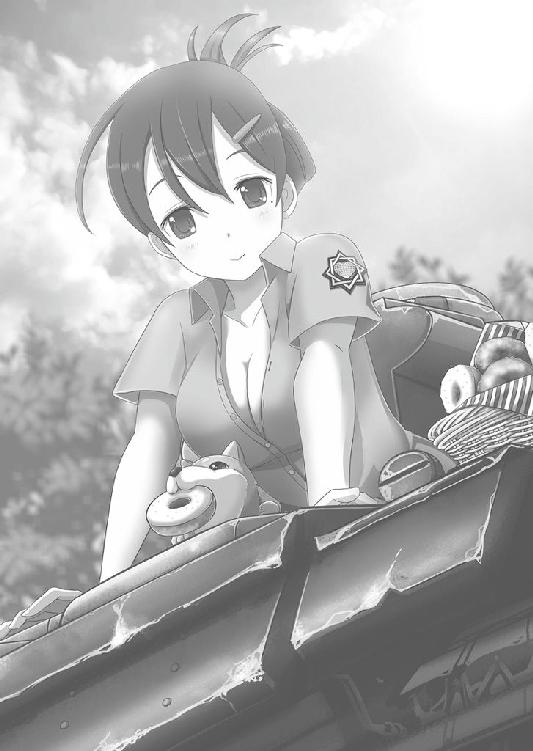

| しんぐんデストロ～イ！２ ～宇宙怪虫と巨砲怪獣をやっつけろ！～ (桜ノ杜ぶんこ) | |
| 佐山操 | |
| (2015) | |
桜ノ杜ぶんこ
しんぐんデストロ〜イ！２
〜宇宙怪虫と巨砲怪獣をやっつけろ！〜
佐山 操

＃01 湿地帯
見渡す限りの大草原......。とは名ばかりで、実はこの葦原のあちこちには戦車にとって危険極まりない沼地や軟泥が隠れ潜んでいる。足場がしっかりした土壌を見つけるために奔走すること三日間。とにかく竹棒とメモ帖片手に、俺はこの湿地帯を走り回った。
何十トンもあるような戦車が走り回るんだぜ？ 軟泥や隠れた沼地に踏み込んだら、アッという間に沈み込んじまう。だから戦場となる場所の固い地面をきちんと把握するための入念な下調べをしておくことが大切だ。
実戦でも、戦車乗りのエースとして知られるオットー・カリウスが、こうやって入念に戦場となる場所の事前調査をしていたらしい。
というわけで、俺様としては完璧な勝利を得るために先人の行動に学ぶことにした。勝利をつかむため......なんて建前だが、本音としては下手な操縦をされて沼地に踏み込み、俺の大切な戦車たちを放棄するなんてことをさせないためだ。
そんな調査の苦労が今日、報われる。
もちろん、勝利という形でだ。
「各自状況を報告せよ！」
『Ａ１号車の大山。配置につきました。でーすとろーい！』
『Ａ２号車のナターシャ。配置到着まであと一五秒』
『もぐもぐ......Ａ３号車の......げふげふっ......お、お茶......お茶！』
乃木坂ちゃんは、相変わらず物を食っているらしい。
『えー......Ｂ３号車ミオミオです。私から見える範囲にいるＡ３号車は配置につきました。ちょっと、ミリミリいつまで食べてんのよ！』
『ゴメーン！ ゲホゲホ......ズズズズッ！ ふぅ......。あ、報告忘れてた。ミオミオから報告があったと思いますが、改めて乃木坂、配置に着きました。どーぞ』
どーぞって......いったいなにを食っていたのやら......。
『Ｂ１号車西園寺。こちらも配置につきました』
『Ｂ２号車の六車です。配置につきました』
『改めてＢ３号車のミオミオ。配置につきました』
『えーっと......今日はＢ４号車なんだよね。Ｂ４号車月形、配置につきました』
相変わらずの個性的な凸凹戦車隊なわけだけど、まぁ、これが俺のチームメンバーだ。
『Ａ２号車ナターシャ。配置につきました。先ほどの雨でルートがぬかるんでいたために迂回して遅れました』
全車が配置についた報告に俺がチラリとラティーを見ると、双眼鏡を片手に周囲を見回していた彼女はなにを我に確認する？ みたいな顔をして俺を見てきた。まぁ、この戦車隊の司令は俺なんだから確認する必要はないんだけどね。
一応確認したくなっちゃうのは日本で先生の顔色を見ながら生活してきたクセみたいなもんかな？
「では作戦通り、Ａチームよりけん制射撃開始！」
『Ａチームけん制射撃開始！』
大山ちゃんの復唱後、四つの砲声が葦原に響いた。
ううーんいいね、いいねぇ～。戦車砲の響きは最高だ......って悦に浸っている場合じゃない。
俺は指揮車であるＳｄ・Ｋｆｚ２４７Ｂの荷台に、戦場を把握するパノラマビジョンを展開した。どういう理屈になっているのかはＳ・Ｆ技術らしいので俺には分からないが、使用者の望んだ地域を第三者視点で映し出す特殊映像装置らしい。
まぁ、なぜ映るのか分からないけどテレビが使えるのと一緒だろ。あんまり気にしないで問題ナシ！
パノラマビジョンには、葦原の指定ポイントでＡチームが砲撃を開始している姿が映し出されていた。
彼女たちＡチームに与えたオーダーは、とにかく潜んでいそうな場所にぶっ放して沼地に隠れているエビ野郎をあわてさせろというものだった。
Ⅲ号突撃砲、Ⅲ号戦車Ｇ型改という混成部隊だが彼女たちの役目は追い立て役だ。
そして、今回の戦闘にはラティーが俺たちと同じようにインビテーションというＳ・Ｆなワザで召喚した、羽生谷ジーナというハカセが作ったという戦車砲弾型の水中爆雷が使われている。これが開発されなかったら、メチャクチャ効率が悪いが徹甲弾を沼に向かって撃ち込んで、潜んでいるヤツを怒らせるという戦法を採らなきゃならなかった。
この砲弾は文字通り戦車砲から撃ち出す爆雷で、着水後に設定時間で爆発するというものだ。深度設定も出来るらしいが、水中何メートルの所にエビ野郎が潜んでいるのか分からない現状では、この時限信管がいいだろうということだった。
ちなみに時限信管の時間は弾頭ごとに設定されている。
そしてボッカンボッカンと沼地で水柱と飛沫を上げながら爆雷砲撃を撃ち込むこと五分。
沼地の水がズモモモモモモモと盛り上がり、潜水艦の浮上よろしくあっちこっちに水をぶちまけて出現したのは全長五七メートルにも達する巨大海獣──甲殻怪獣マガチという、でっかいエビ野郎だった！
青紫色の外骨格に巨大な三本爪をワシワシと動かし、海老フライを思わせるでっかい尻尾を備えている。これで二足歩行するんだから気持ち悪いったらありゃしない外見だ。
こんなデカいのが潜っていられる場所を果たして沼と言っていいのかと疑問に思わなくもない。辞書で調べると『一般的に水深五メートル以内の水域を沼といい、透明度が低い』とされているが、同じ辞書の中でも『湖との区別は明確ではない』ともされているから水深一〇〇メートル以上あるような沼が存在したっていいんだろう。
そもそもここは地球でも日本でもないんだからさ。地球の定義で推し量っても仕方がないわけなんだろうなぁ。
いや、今はそんな疑問を議論している場合じゃない。
「予想地点Ｃに出現した！ 繰り返す。予想地点Ｃに出現した！」
『もぐもぐ......予想地点Ｃ!? わ、私の受け持ち場所だ！ ンッ！ ンガックック！』
まだ食べていて、また喉に詰まらせたのか？ オマケにお菓子に夢中で目の前に出現したマガチを見過ごしていたのか......ミリミリよ。
「ミリミリ。喉に詰まらせて死ぬなよ」
今度、戦車の中の持ち物検査をしないとダメか？ 喉に詰まらせるようなお菓子は取り上げないと、ミリミリは怪獣と戦って死ぬよりもお菓子を喉に詰まらせて死ぬ確率の方が高いんじゃないか？
『い......いえっさぁぁ！』
『ああっ。とうとう司令君もミリミリって言った！』
「うるさい！ ミリミリは攻撃続行しながらＢチームの潜伏場所に引き寄せろ！ Ａチームの連中は砲撃をしながらＣ地点に集結！ さらに追い立てろ。沼に戻すな！ Ｂチームは待ち伏せ待機！」
『イエッサー！』
それぞれの持ち場から戦車の駆動音が響き、ミリミリの受け持ち地点に向かってナターシャと大山ちゃんが全速力でⅢ号戦車Ｇ型改を走らせた。
足場が悪いのに全速で走れるあたり、戦車操縦の腕の確かさが光ってるねぇ。ウチの戦車隊の攻撃の要はダテじゃないか。
「ミリミリは適度に撃ちながら引き寄せろ！ ナターシャと大山ちゃんは追い立てる為に適当にエビ野郎には当てずにその後方に撃ち込め！」
直後、砲声が轟いてマガチの後方で榴弾が炸裂した。いい位置だ！
「そのまま......ん!?」
聞き慣れない七五ミリ砲の砲声が轟いた。
この砲声はⅣ号戦車Ｇ型の七五ミリＫｗ．Ｋ４０Ｌ／４８のものだから......。
「ヤツか！」
七五ミリ砲弾はマガチの横っ面をぶちかました。
しかし、ガインガイン！ と嫌な音を立てて徹甲弾はすべて在らぬ方向に弾かれた。
こいつの頭はＴ３４もかくやという避弾経始の傾斜装甲を備えていやがる。砲弾の運動エネルギーを分散させ、逸らして弾くという理念の元に作られた外骨格だ。
もちろん着弾の衝撃を完全に打ち消すことはできないから、当たり所によってはマガチも失神するかもしれない。しかし──
ぎゃおおおおおおおおおおおおおおおおおおおおおおおおおん！
案の定というかマガチは咆吼を上げて、進路を待ち伏せ地点から七五ミリ砲を打ち込んだアホタレたちに向かって変更しやがった。くそっ。せっかくの作戦がオジャンだ。
『司令......マガチちゃんが曲がっちゃいましたよ』
ミリミリの心細そうな声がヘッドフォンから聞こえてきた。
言われるまでもなく、その様子はパノラマビジョンでハッキリと見えている。
誘い込んで集中砲火で弱点を突く予定だったが、このまま攻撃しても横っ面に弾を当てるだけでまったく意味が無い。
「各員ミリミリの元に集合！ 待ち伏せ作戦は中断だ」
『了解！』
全員の戸惑った返事がヘッドフォンから聞こえてきた。
まぁ、この状況で戸惑いを感じないのも無理はないよな。
あのクソ野郎め......。
『はっはっはっはっはっ！ マガチよこの砲撃の前に散るがいい！』
無線のオープンチャンネルに虫唾が走るような偽パイパーの勝利の叫びが聞こえてきた。
ちくしょう。俺たちが巣から追い出したマガチを横取りする気で待ち伏せしていやがったな......。
『全員撃て撃て！ 勝利は目前だぞ！』
『司令。放っておいても......その......いいのでしょうか？』
むかつく野郎の勝利宣言の後、六車ちゃんの声が聞こえてきた。
いいもなにも......どうにもなんないからなぁ。
「これまでのデータから、マガチは強い火力を向けるやつに腹を立てて攻撃する習性があるって話だろう。どう考えてもあいつが揃えているⅣ号戦車集団に、火力で勝ち目はないからなぁ......」
こっちにも七五ミリ砲はあるが数の多さでは偽パイパー隊の方が多い。なおかつ分散配置しているもんだから、今すぐ火力を集中させることはできない。
「とにかくミリミリの元に集結を急いでくれ。こっちにも考えがある」
『了解しました』
マガチは巨大な顎を持つ甲殻類だ。爪で攻撃する他に顎についた二本の牙を武器に使う。さらに怪獣の言葉に相応しく、石化なんてワザまで繰り出してくるからタチが悪い。
全身が避弾経始の曲面装甲に覆われている卑怯この上ない怪獣だが、弱点がないわけじゃない。それは尻尾の付け根と脚の間だ。
歩行する生物である以上どうしても全身を完全に覆う装甲に身を固めることはできない。特にエビ類は尻尾の下が最も柔らかく、マガチもそれに類する。
『部隊集結しました』
六車ちゃんの言葉にパノラマビジョンを見ると、ミリミリを中心にＡ・Ｂのふたつのチームが集結していた。
「いいか、よく聞いてくれ。砲撃をせずにこのままこっそりとマガチの後ろを追尾してくれ。そして、ヤツが顎を使おうとした時がチャンスだ。すぐさまそこに砲撃を加えられるように、各自照準をしながら追尾してくれ」
『了解！』
全員が俺の意図を察してくれたらしい。
みんなの返事に嬉々とした響きが感じられた。
「さて、俺たちも特等席から観戦としますか」
俺は指揮車Ｓｄ・Ｋｆｚ２４７Ｂ高機動車の操縦席に座ると、エンジンをかけてすぐさま発進させた。
その間にも偽パイパー隊からのマガチに対する集中砲撃は継続されていた。怒り狂ったマガチは青紫色の外骨格を鮮やかに輝かせ、ワシワシと爪を蠢かしながら砲撃を止めない偽パイパー隊に向かってノッシノッシと接近していく。
いい加減に気づけ。避弾経始が効いているこの装甲を正面から破るのは、Ⅳ号戦車の七五ミリ砲では無理だってことをさ。
ガインガインという反射音が響き、跳弾した弾が湿地帯のあちこちで泥飛沫を上げて地面に着弾している。
『集中砲撃を怠るな！』
偽パイパーの悲鳴混じりの叫びが響いた。
ついでに補足すると、マガチは高火力のヤツに向かって行くものの最も弱そうなヤツを攻撃することでも知られている。
偽パイパー隊の七人は全員七五ミリ砲で武装しているが、無謀にもその場で指揮を執っている偽パイパーは未だに非武装のキューベルワーゲンに乗車していた。
つまりマガチから見たら偽パイパーが最も弱いヤツになる。
ムハーッ！ しぱぱぱぱぱあああああっ！
なんとも形容しがたい叫びをマガチが上げた。叫び？ いや、音か？
不思議な音とともに紫がかった色あいの、見るからに生臭そうで『お口くさ～い！』と叫びたくなるような息をマガチは偽パイパーに向かって吐き出した。
するとどうか。キューベルワーゲンは瞬く間に石化しやがった。
「あーらら......。これは......ヤバイねぇ。各自砲撃準備」
さすがに気に入らないヤツだが、見知った顔が怪獣に殺られるのは寝覚めが悪い。
マガチの気を引くために砲撃を加えようかと悩んだ矢先、ヤツは牙を使って偽パイパーのキューベルワーゲンを跳ね飛ばそうと前屈みになり、尻尾を海老反らせるように高く掲げあげた。
「今だ！ ヤツのケツを撃て!?」
間髪を入れずに全員が一斉砲撃を開始した。
マガチの尻尾の裏側はエビのむき身を思わせる白い肉だった。そこに砲弾を集中されたら装甲なんか意味が無い。いや、逆に今度は外側の装甲が災いになる。集中された爆圧の逃げ場所がなくなり、より一層激しい破壊になる。
爆風と共にヤツの尻尾が四散した。
ギャバアアアアアアアアアアアアアアアアッ！
マガチの悲鳴が上がり、激痛から激しく地団駄を踏みやがった。おかげでこっちは震度六から七を思わせる縦揺れを食らってシートから投げ出されちまったじゃねえか！
こっちの戦車はみんな軽めだし俺の指揮車も戦車に比べりゃ相当軽いもんだから、車体がボンボンと飛び跳ねやがる。
くっそ。このままじゃこっちの狙いがつかねえ！
俺は指揮車のシートにしがみつきながらなんとか無線機を操作し、回線をオープンチャンネルにつないだ。
「偽パイパー隊！ ヤツのケツを狙え！ 尻尾がくっついていた場所に成形炸薬弾を叩き込め！ 見るからに柔らかい場所を狙って叩け！」
偽パイパーがオープンチャンネルで喋っていたから、おそらくあっちのチームの子たちも聞いているだろうという予想で喋ったんだが予想通りだったらしい。
七両のⅣ号戦車は暴れ回るマガチを包囲するように展開し、尻尾がもげた場所から見えるエビ類独特の青白っぽい身の場所が照準に入るや砲撃を開始した。
ちなみに成形炸薬弾っていうのは、対戦車榴弾ともいう火薬の燃焼力によって装甲を溶かす砲弾のことだ。
これでよし。
「勝ったな」
勝利を確信してやったーっと若さあふれる態度を示すのもいいかもしれないが、ここはやはり渋くかっこよくこう決めるのが男というものではなかろうか？
うむうむ。
「これ、なにをブツブツと独り言をつぶやいておるのだ？」
「おっと、いけねえ！ なんでもないっすよ」
ラティーに危ないやつと思われちまうところだった。
「しかし、見事だったな」
ラティーも感心してくれたように今回の作戦は途中で邪魔が入ったものの、一応、想定通りの戦いができた。
「さて、邪魔してくれたやつの面でも拝んで帰るか。隊員たちは結局俺の指示で戦ったようなもんだからな。また悔し涙に暮れてるんだろうぜ」
「そなたも......性格が悪いな」
クククと笑いながらラティーは言ったが、そこで笑うラティーもよっぽどいい性格でしょう。
『発・六車。司令へ。マガチの活動停止を確認しました』
「お疲れさん。じゃあ、偽パイパーの泣きっ面を拝むために全員で偽パイパーの周りに集合せよ」
『了解です』
誰からも嬉々とした返事が聞こえてきた。
まぁ、仕方ないよな。
とまぁ俺たち的にはヤツのバカ面兼泣きっ面を拝もうと思っていたんだが、予想に反してそれを拝むことはできなかった......。
＃02 偽パイパー隊集結地点
偽パイパー隊が集結している場所に偽パイパーがいて、また泣きべそをかいて他の隊員たちに慰められているもんだと思っていたんだが......。なんだか様子がおかしい。
なんというか、お笑い芸人が下手な芸を見せてとんでもなくスベったような......。そんななんとも言いがたい雰囲気がその場を包み込んでいた。
「なにかあったか？」
とにかく近づいて指揮車を降りた俺たちが目にした物。それを見た瞬間、俺は思わず吹き出していた。
俺だけじゃない。偽パイパー隊の女の子たちも苦笑やら大笑いするやらで、とにかく笑うしかない状態だった。
自称ヨッヘン・パイパー大佐は、キューベルワーゲンの上でまだ石化していた。
しかもマガチの攻撃に恐怖して顔を引きつらせ、頭を手で覆い隠す情けない格好をしたままの姿で......。
「これは写真に撮っておかないとね～」
ミオミオこと海沢未央は調子にのってスマホで写真を撮りまくりっていた。後でそのデータをもらっておけばヤツを脅すネタになるってものか。
それにしても──
思わず俺は自分の隊と偽パイパーの隊の戦車を見比べちまった。
いつの間にかあいつの隊はⅣ号戦車に全車切り替えていた。それに対してこっちの主力はⅢ号戦車。待ち伏せ用のⅢ号突撃砲とヘッツァーがあるだけだ。
この差ってなに？
そう思った時、まるでその俺の思考を読んだようにラティーがボソリとつぶやいた。
「戦車がそろわないのはそなたの運だな......。装備面での運だけは偽パイパー殿の方が上らしい」
「あー......そうですか......」
なんともがっくりくる理由だった。
まぁ、マルダーⅠ自走砲とかがないだけマシなのかねぇ......。
「じゃあ俺たちは撤収するか。作戦完了一三・二〇！ 全車撤収！」
「りょうかーい！」
俺の撤収指示にみんなのんびりとした返事をして、それぞれの戦車に戻って撤収準備を開始した。
ちなみにラティーの説明によると、偽パイパーはあと三〇分くらいたてば石化が解けるらしい。惜しいことに完全に石化させたままということじゃないそうだ。完全石化ならその情けない姿を永遠に記憶に留めておくために、営庭の入口にでも飾って噴水とか追加しておくのにな。
あっちの隊はヤツの石化が解けるのを待ってから撤収するらしい。
こちらの損害はゼロ。現状の戦力で今のところ問題はないって感じかね......。
＃03 薄暗い森
戦闘の帰り道で、さっきの戦闘指揮に疲れたのか激しい眠気を感じた俺は、全車停止を指示して一時間の休憩を取ることにした。
飲んだら乗るな、寝るなら乗るなは車両運転の鉄則だな。
対向車なんかくるはずのない異世界だけど、居眠り運転でもして道から外れて樹木に激突したり、突っつかなくてもいい藪を突っついて怪獣を出したんじゃ割に合わない。
疲れていたのはみんな同じだったらしく二つ返事で小休止を受け入れてくれた。
とりあえず座席を倒して顔に濡れタオルを置いて一休みした矢先のことだった、タオル越しにも眩い閃光が走り、轟音が響き渡った。
「なんだっ!?」
あわてて飛び起きた俺はメガネをかけなおした後で、目の前の光景を見て愕然とした。
天高くそびえる火柱のような光の柱がそこに伸びていた。
いやそれだけなら『月刊ヌー』が喜びそうなネタとして写真に収めておくだけで済んだんだが、その光柱から......なにかが出現しようとしていたんだ。
「あれは......」
人間を思わせる姿の巨体。腕には七〇年代にアメリカにいたロック歌手が着ていたみたいな、袖にビラビラがついた恰好をしている。
それを見て思わず声を漏らした俺に、ラティーはいつも通り抑揚が少ない──それでも今までで最も驚きの感情を露わにした声で答えた。
「凄まじいエネルギーを感知した......。来る......禍々しい何かが」
「禍々しいって......」
確かにあの光の色からは禍々しさを感じるが......。
「このエネルギー......あやつに違いない。再び、災厄と相見える日をまた迎えてしまったか......」
「知ってる相手なのか？ いったいどんなヤツなんだよ！」
光柱からズズズと他の空間から抜け出してくるように出現する怪物は、もう頭が完全にこっち側の世界に出現していた。
「最初にこの星にあらわれ破壊の限りを尽くしたという伝説を、住人からの聞き取り調査で調べてある。あれは〝烈光巨人ヴー〟という」
聞き取り調査って......いつの間にそんなチマチマしたことをやっていたんだか......。まぁ、そういう地道な調査があるから怪獣のデータベースも作られていくんだろうけどさ。
「ヴー？」
まったくもって聞き慣れない名前な上になんだか強そうじゃないか......。
俺が具体的な質問する前にラティーが説明をはじめていた。
「あやつの体力や攻撃力は他の怪獣とは一線を画す。まさに、災厄そのものだ......」
「他の怪獣とは一線を画すって......」
今までだって充分に強い怪獣だったぞ？ そんな怪獣相手でもギリギリの戦闘をしているウチの戦車隊じゃ、どうにもなんないってことなのか？
そんな俺の不安を読み取ったのかラティーはフッと小さく笑った。
「あやつを倒すには、何度も挑むより手はない」
「はあ？ 何度も挑むって......一発勝負じゃないってこと？」
「無論だ。初戦ではあやつに勝てないやもしれぬ。だが、それで良い。あやつが受けた傷は決して回復せぬと言い伝えられているからだ。何度も挑み、あやつの体力を削り続け、最終的に......」
「最終的に？」
「削り勝つのだ」
「..................」
勘弁してくれよ......。
削り勝つなんて無理・無茶・無謀の三無い運動だぜ？
「そなたの戦車隊の実力が純粋に試されることとなろう。文字通り〝死闘〟となることは目に見えておるが......」
死闘......ねぇ。
ヴーとかいう巨人はすでに光の柱から上半身を出し、さらにゆっくりと右脚を地上に下ろそうとしているところだった。
アレと......死闘？ Ⅲ号戦車で？ マウスとかケーニヒス・ティーガーとか、せめてファイアフライとかねえのかよ！
「そなたの折れぬ心と......」
「俺の折れない心......と？」
「そして、そなたを慕い信じてついて来た隊員達の想いに期待する」
「..................」
って、その最後の一言はダメじゃね？
絶対に西園寺ちゃんとか俺を慕い信じてくれてねえって！
もうダメダー!? って叫んで逃げ出したいよ。
でも、それももうダメそうだった。
ゆっくりと火柱のような光柱から左脚を引き抜いたヴーは、その虚ろな目をこっちに向けてきやがった。そして身体をこっちに向けた。
完璧に見つかってるっての！
こうなったら戦わない訳にはいかないってのぉ。
「くうっ、全車戦闘準備！」
ノンビリしてたらやられちまう！
「全車、目標を包囲するように展開！ 忘れるなよ。初撃はお試しだ。かなわないと思ったら逃げるぞ！ 撃てそうになったらとにかく撃ってみろ！ 必ず距離を取れ」
無理に戦っても意味がない。削り勝てってことは、足止めだけしてさっさと逃げることを考えた方がいい。
問題はどうやって足止めするかだが......。
チラリとラティーを振り返り見たが、ラティーは肩を竦めてみせただけだった。
「超高密度のエネルギー体ということしか我には分かっておらぬ」
「エネルギー体だと弾はすり抜けるわけ？」
「それも分からぬ。我のデータベースには先ほどの伝承以外に、あれの名前とそのエネルギー体であることしか記録されていない」
つまりデータなしの新型と戦うつもりでいくしかないのか......。
どうしたものかと首を傾げた時、最初の砲声が轟いた。
「誰が撃った？」
『いっちば～んはミオミオで～す！ って、効いてない？』
Ⅲ号突撃砲のミオミオが一番近かったか......。
続いて二発の砲声が轟いた。
『ナターシャ撃ちました！』
『西園寺、撃ちました』
ナターシャはⅢ号Ｇ型改。西園寺ちゃんはヘッツァーだ。五〇ミリ砲はおろか七五ミリ砲も歯が立たない様子だった。
『七五ミリ徹甲弾は全然効いてな～い！』
『五〇ミリ徹甲弾も同じです！』
『七五ミリ対戦車榴弾も効いていません！』
「全車転進！ 逃げ支度にかかるぞ！ 接敵した三両は脚を狙って撃ちながら逃げろ！ それ以外は転進。退避だ!?」
パノラマビジョンの画角を変えてこの地域の全体俯瞰図を確認すると、ヴーを包囲するように接近させたために真っ先に動いたミオミオが最初に目標を攻撃。その両サイドの二人が次の攻撃となった。
つまり接敵しているのはまだこの三両しかない。今ならまだ被害はその三両に絞れるし、距離を取っているから損傷も軽微で済むは......。
『きゃああああああああああああっ！』
俺の甘い予測を嘲笑うようにヘッドフォンからミオミオの悲鳴が流れた。
その直後、七五ミリ砲と五〇ミリ砲の砲声が轟いた。
「どうした？」
『未央が撃たれました！ でも、なんとか車体は動いています』
ヴーは広範囲攻撃型の拡散砲のようなモノを撃ってきたらしい。長射程の飛び道具もアリなんかよ......。
くっそ。逃げながら上手く攻撃できるのは、その三両の中ではナターシャのⅢ号戦車Ｇ型改しかない。他は砲塔のない突撃砲だから一々反転攻撃するか、後ろ向きに後退しながらの攻撃になっちまう。それじゃ速度が出ない！
「抵抗はいい。なんとか逃げろ！」
再び抵抗の砲声が轟いた。だがヴーに効いている様子はまったく見えない。
「西園寺ちゃん。ヘッツァーは右側の視界がない！ 忘れるなよ！」
ヘッツァーは車体が小さいために砲が車体の中央ではなく、右側に配置されている。そのためにそちら側に兵を配置する余剰はなく、窓もないから視界はゼロだった。かろうじてキューポラからの視野があるがそれではカバーしきれない。
『了解です！ きゃああああああああああっ！』
返答するなりソコをやられた！
ヴーが振り回した巨大な腕が視覚外の角度からきたために避けきれなかったんだろう。
ヘッツァーは右側面を殴られてコロコロと転がり奇跡的に履帯を下にして停車した。
「生きてるか!?」
誰かから西園寺Ｋ・Ｉ・Ａという戦死報告が叫ばれたらどうしようかとヒヤヒヤしたが、すぐに本人からの返事が届いた。
『勝手に殺さないでください！』
「殺してないってば！ 生きてるかって訊いただけだろ！」
『西園寺生きてます！』
本人の叫びとともにヘッツァーの砲声が轟いた。根性入ってんなぁ......。
『司令！ この速度では逃げ切れません！ 応戦を続けます！』
ナターシャはそう叫ぶやボロボロになったヘッツァーの隣にⅢ号戦車を並べて砲撃を開始した。さらにそれに倣ったミオミオも砲撃を開始しやがった。
ええい、くっそ。
みんな好戦的過ぎるぞ！
そう......みんなだ。
俺が逃げろと言ったにもかかわらず、全員反転しないでヴーを取り囲んで砲撃を開始しやがった。
「おい。命令違反だぞ！」
『違反は覚悟の上です！ でも西園寺さんを助けないわけにはいきません！』
『そのとーり！』
『さっすが悠！』
『負けなければいいんです......もぐもぐ......』
そう強気の六車ちゃんの発言に全員が同意しやがった。
これじゃ俺が悪人みたいじゃんか......。
仕方ないなぁ......。
「全車総攻撃！ 逃げる選択肢を残すために全員ヤツの脚を狙え！ 少しでも行動力を削ぐつもりで遠巻きに砲撃しろ！ それから五〇〇メートル以内には近づくなよ！」
『了解！ パンツァー・フォー！』
『パンツァー・フォー！』
泣いた烏がもう笑ったって言うみたいに、俺が戦闘指示を出すや全員が嬉しそうに返事をしやがる。ホント好戦的だぞ！
しかし、最初に接敵した西園寺ちゃんとミオミオの損傷が心配だった。
ミオミオのⅢ突は攻撃でボロになりつつも普通に動いているように見えるが、西園寺ちゃんのヘッツァーは一回転しただけあってかなりのガタが車体にきてる。外観は半壊と言っていいだろう。
「ミオミオと西園寺ちゃんは後退しつつ攻撃してくれ。ナターシャは二人のカバーを！ 特に西園寺ちゃんのヘッツァーは通常速度が出ないだろうからそれを忘れるな！」
『ハラショー！』
とにかく距離を取りながら攻撃をしていれば、いくらデカいヴーとはいえどもおかしな技を掛けてこないだろう。それで時間を稼ぎ、根本的な対策を見つけるしかない。
しかしヤツに弱点らしい弱点はあるのか？
俺は目を皿のようにしてパノラマビジョンに映し出されるヤツの姿を観察した。だが、それらしきものがどこにも見当たらない。
砲弾を受けるとそこに丸く穴があくが、ものの数分でそこは以前と変わらない皮膚に戻っちまう。
ダメージを与えているのかどうかすら分からない。
これじゃムダな消耗戦になっちまう。どうしたらいい!?
俺は必死になってパノラマビジョンでヤツの弱点になりそうな部分を求めた。
その時だった。
「あれを見るのだ！」
「なにを......って、はあああっ!?」
烈光巨人ヴーの姿がいつの間にか半透明になっていたのだ。しかも徐々に薄くなってゆき、やがて消えてしまった。
なんで......？
倒したわけじゃない。
最後まで残っていた火柱のような光柱が、ヴーが消えた後、空に向かって飛び去っていったからだ。
逃げたのか......。あるいは逃がしてくれたのか......。
「これが伝承に残っている、一発勝負じゃないって理由か......」
おそらくあのヴーは一定時間しかこの地上にいられないってことなんだろう。三分間しかいられない光の国からきたヒーローみたいだが......。こっちは光の国からきた怪獣ってヤツか？
戦車隊の全員はハッチを開き、光が飛び去った方向を見て呆然としていた。
「ヴーの痕跡は消えたな......。しかしエネルギーの残滓が感じられる。そなたたちに追われて逃げただけで、まだあの怪物は倒せていない。少しでも烈光巨人ヴーに傷を与えたのであればそれで良い」
「そうは言うけどなぁ......」
こっちは二両の戦車を傷物にされて逃げられたんだぜ？ これじゃ隊員の士気にかかわっちまう。ミオミオはまだしも西園寺ちゃんはいたくプライドを傷付けられているだろうからなぁ......。
先が思いやられるぞ。こりゃ......。
「あやつが今回の戦いで受けた傷は回復せぬ。いつか勝てる日を信じ、再戦の機会があればその時にまた挑むがよい。負けなければよい。戦いを積み重ね、やがて勝つのだ」
「まぁ、そうなんだろうけどな......」
せっかく甲殻怪獣マガチに勝っていい気分になっていたところを、この謎の烈光巨人ヴーの出現で水を差された。そんな感じだった......。
後のフォローを考えると正直頭が痛い戦いだったな。せめてもっと高火力であればよかったんだが......。
俺の頭は大破したヘッツァーの代わりになる戦車をどうするかで頭がいっぱいだった。
＃01 戦車隊駐屯地・車両庫
「うーん......」
田舎を舞台にした映画にありがちな木造校舎とかログハウスみたいな建物ばかりの駐屯地だが、この戦車を保管して整備するための建物だけは、頑丈で雨漏りがしない鉄筋コンクリート造りの建物になっていた。
もちろん俺の趣味──というか当たり前に必要なものとして要求した結果、こういう建物になった。いくらどこでも使える戦車と言ったって、雨風に野ざらしじゃすぐに錆びちまうからね。
この牧歌的な駐屯地の建物の中では異質な場所で、俺はボコボコのヘッツァーを確認しながら腕組みをして唸った。
「こりゃ......ダメだなぁ......」
「そんな！ な、なんとかならないのですか!?」
心配そうな面持ちでずっと俺の傍らにいて整備状況を確認していた西園寺ちゃんが、まるでペットの子猫が瀕死の病気にかかっていると分かったみたいな声を出した。
「うーん......」
基地に戻るなり壊れた戦車のチェックをしていたんだが、ヘッツァーが受けたダメージは予想以上のものだった。元々ニコイチならぬサンコイチして作った戦車で余剰パーツは足回りのみ。奇跡的にあったヘッツァーのボディを使わせてもらったものだから、ボディがこんなにボコボコになっちゃうとどうにもならない。
しかし......。
俺がチラリと隣に立つ西園寺ちゃんを見ると、彼女は珍しく藁にもすがるような不安げな表情で俺を見ていた。
まぁ、自分の愛車が廃車するかどうかっていう所だから、そういう顔になるのも分かるしなんとかしてやりたいんだが......。
「正直な話をすれば、このままでも動くし戦闘には耐えると思う」
「ならば......」
一瞬でパッと彼女の顔が華やいた。
だが、その表情を見て俺は首を振った。これは強く言わないといけないとも思ったからだ。
「ダメだ。キミの生還率が激減するぞ」
「え......」
さすがに自分の生き死ににかかわることを俺から言われるとは思っていなかったんだろうな。西園寺ちゃんは本気で驚いた顔を見せた。
「この状態で戦場に出て怪獣の攻撃を受けてみろ。次は装甲が吹っ飛んでアッという間もなくキミは死ぬぞ。ヘッツァーとは別の戦車に乗るしかないな」
「別の戦車と言っても......」
西園寺ちゃんは長いまつげが印象的な目を伏せて俯いた。
ウチの戦車隊は慢性的な車両不足に悩まされているからその気持ちは分かる。現状でまともな余剰があるのはⅡ号戦車試作Ｍ型改くらいしかない。それだとヘッツァー並の戦闘力は出ない。
火力支援部隊としての一翼を担ってきた彼女としたら、Ⅱ号戦車試作Ｍ型の火力に低下するのは耐え難いか......。
うーん......。
「足回りの修理パーツが足りないから速度が出せなかったんだけど、この場合は仕方ないか......」
俺の曖昧な言葉に、西園寺ちゃんは苛立ち半分疑問半分みたいな複雑な顔をして首を傾げた。美人ってのは、そんな顔をしていても絵になるんだから得だよなぁ......。
「なんでしょう？」
「こっちにきて」
西園寺ちゃんを促して俺は車庫の一番奥に向かった。
そこには整備途中だけどウチの戦車隊最強の戦車が眠っている場所だ。
「これは......」
「ヘッツァーを操縦していたキミなら違和感なく操縦できるんじゃないかな？」
それはあのテトラムの腹の中から唯一回収できた車体──ヤクト・パンターだ。他の車体はテトラムの胃酸（？）みたいな液体に浸かっていたせいでボロボロで使い物にならず、その戦車たちの上に乗っていたこいつだけがなんとか使える状態で回収できた。
問題はこいつの修理パーツがないことだった。
実際のヤクト・パンター同様に補充部品の無さに泣かされる結果となり、それでもなんとか動く状況まで整備できたんだけど本来の整地最高速度である時速五五キロが出せず、その約半分の三〇キロが限界の鈍足になっちまった。
「これは......ヘッツァーみたいな形をしていますね」
「駆逐戦車だからね。ただしヘッツァーよりもバランスが取れいてるし、右側の視界がなくなる欠陥もない。ちなみにこいつに積んである砲は、ウチの隊最強の八八ミリ砲だ」
「八八ミリ......」
西園寺ちゃんは驚いた様子でヤクト・パンターの砲を見上げた。今までの七五ミリ砲もウチの隊では最強火力だった。そのさらに上を行く砲なのだから、まぁ驚いても仕方ないだろう。
「こいつを任せる以上は支援では済まされないから部隊前面に先陣切って出ることも覚悟してくれ」
「分かりました。もとより支援だけでいるつもりはありません」
「分かった。じゃあコイツを任せるよ」
後でラティーに頼んで部品だけでもインビテーションしてもらえないかやってみないとなぁ。
今イチ、あのインビテーションは頼りにならなくてなぁ。
偽パイパーの方は好みの戦車が出ているっぽいのに、なぜか俺の所はまともな形で出てきた試しがない。
また賭でもして偽パイパーから奪い取るしかないのか？
「それにしても......意外でした」
「なにが？」
「司令が戦車ではなく私のことを心配していたことです」
「それは......」
キミが無理をしてヘッツァーを戦場に持っていって被弾するということは、イコールこのヘッツァーも失われてしまうということだ！ そんなことがあっていいはずがないだろう！
そう言いそうになったのをあわてて俺の中のバック・ゴーストが引き留めた。ふぅ。余計なことを言って、また怒らせるところだったぜ。ありがとう背後霊さん。
「それは......まぁ、当然のことだな」
「なんで、そこが棒読み口調なんですか？」
「え？ マジで？ おかしいな......。はっはっは。そんなことを言われたから、思わず緊張してしまったのだよ」
明らかに西園寺ちゃんは俺のことを怪しむ変な目で見つめてきたが、あまり気にしないことにしよう。なにいつものことだ。って、余計に哀しくなってきた......。
「なに、目を泳がせているのですか？」
「いや、そ、そんなことはないぞ......」
西園寺ちゃんは俺の顔を覗き込むようにしながらそう訊いてきた。くっ......女の子に至近距離で覗き込まれたら他意があってもなくても目を逸らすしかないじゃないか！ お、俺は女子免疫が低い草食男子だぞ！ そう言うべきなのか迷っていたらタイミングが悪いことにラティーがやってきた。
「ちょうどいい所に二人いたな。全員に話があるので食堂に集まるのだ」
それだけ言うとラティーは踵を返して車両庫を出て行き、ふんっと鼻を鳴らして西園寺ちゃんも出て行った。
◆ したわれ度 西園寺 マイナス１
なんでじゃああああああああああああああああっ！
＃02 戦車隊駐屯地・食堂
田舎の木造校舎をたぶんラティーがインビテーションしてきた駐屯地の隊員待機用棟。まぁ、基本は女子寮なんだけどな。その一番端の部屋が食堂として使われていた。
で、そこに全員がそろったのだけど......。
あれ？ ひーふーみぃ......数が多いぞ？ 見たことない子と見覚えのある子が混じっている。
「全員揃ったようだな」
俺が食堂に入った最後の隊員だった。
「実はこの大陸の中程にある星形林間地帯に、宇宙怪虫が大挙して押し寄せて占領するという事件が発生した。ここは避暑地としても有名な場所で風光明媚な場所に温泉も湧いているという」
「温泉！」
目をキラキラさせていたのは八の字ちゃん、あるいは結びんこと月形結ちゃんだった。
四六時中お風呂に入っている彼女だけに温泉と聞けば真っ先に食いつくのも仕方ないことだろう。
だが他にもいっぱい人がいるのは......なんでだ？
「距離がここからかなり離れていることから臨時駐屯地を作ってもらうことにした。そこで、そなたらの世話係──つまり、給食当番兼健康管理係としてこちらの小鳥遊かおるを配備することとなった」
「小鳥遊かおるです。こちらは私の愛犬オットーです。よろしくお願いいたします」
そう言って頭を下げたのは藍色の綺麗な髪を後ろでひとつにまとめた、白い肌のキレイなお姉さん。理想のお姉さんというようなおしとやかで優しさが全身から漂っている、この隊の女性陣にはメチャメチャ欠けている女子力が高い人だった。
オットー......？ もしや戦車エースのオットー・カリウスから名付けた名前か？
そんな俺の深読みを余所にラティーはその隣に立つ猫耳メイドの紹介をはじめた。
「すでに、そなたたちは一度彼女と交戦しているから顔は知っておろう」
一度交戦？ ああ、見覚えがあると思ったが偽パイパーからスコルツェニー中佐の名前を取り戻した時に戦った相手で、ナターシャと共に救出した子か。猫耳のショートカット・メイドだったな。
彼女は吊り目気味の目をくりくりと動かし、ニッコリといたずらっ子のような笑みを見せた。
「天野キリアだにゃ。よろしくだにゃん」
にゃん......？
猫耳だけに......猫？
「彼女は新駐屯地の購買部担当兼予備軍としてこちらに転属となった」
転属？ 転属って......ウチの隊にずっと配属ってことか？
「司令。ギャラアップキボンヌだにゃん」
そう質問しようとした矢先、ニッコリ笑ってメイドはいきなりギャラアップを要求してきやがった。
もしかして、俺が給料払うの!?
「初顔合わせでいきなりソレか？」
「世の中世知辛いにゃん」
「メイドがいれば司令のそなたが元気良くなると聞いて、彼女の配属となった」
「どこで聞いてきたんだよ！」
まぁ、確かにメイドさんは嫌いではないぞ。うん......。
「そしてもう一人......」
ラティーの視線は、なぜかそこにデンと置かれていた長い箱──明らかに棺に注がれた。
「そろそろ起きてきたらどうか？」
『ンんー......ふわああああっ......。ったく、人使いが荒いねぇ......』
そんなくぐもった声が棺の中から聞こえてきた。
なんだこの展開は......。
いきなりアレか？ 我々はこの箱を知っている！ とかというナレーションでも流れるのか？
そんな前置きを期待したんだが、それは前置きもなく開いた。
「ぅンんーっ！ まだ、陽が昇ってるじゃないか......。眠っていいか？」
そう言うがいなや棺の蓋を開いてすぐに閉じた。
中身なんか見えやしねえ！
「昼間でも仕事をするのだ」
珍しくラティーの言葉に微かに怒りが感じられた。その微妙な怒りを感じ取ったのか、棺の中の人は仕方ねえなぁという調子でまた棺の蓋をバタンと開いた。
「ったくもぅ......。オチオチ眠ってもいられないな。まぁ、いいだろう。ノープロブレムだ......」
「ああ？」
確か......コイツも見覚えがあったぞ。猫耳メイドと一緒に助けたスコ隊の隊員だ。
格闘ゲームのヒロインみたいな派手でエロい露出度最強のボンデージ・コスチュームを着ていて、寝不足なのか、いつも目の下にクマを住まわせている派手目の女の子だ。今まで見た中で一番エロく、一番艶っぽい女の色香が漂うタイプの隊員だな。
「ふわぁぁあぁぁぁぁぁ......」
棺から上半身だけ起こして大きく伸びをした彼女は眠そうな目を俺に向け、軽く頭を下げてきた。
「ブナ・ズィワ......ああ、ルーマニア語は通じないのだな......。今晩は、司令。その節はありがとう。では、また、しばしの......」
「待ちなさい」
また蓋を閉じて戻ろうとした彼女の肩をラティーがつかんで引き留めた。
「これから作戦の説明をしますからきちんと起きていなさい」
「へいへい......。まぁ、じゃあ、がんばって起きているようにしよう。窓のカーテンをしめて欲しいな。日焼け止め塗ってないからな」
彼女の言葉にあわてて六車ちゃんとミリミリ、かおるさんがカーテンを閉めに走った。
「ありがとう。それでは改めて自己紹介といこうか。私の名はクリミア。クリミア・ツェペシと言う。五百まで歳は数えていたがそれ以上は面倒臭くなって今に至っている」
はぁ？
つまり......人間じゃない？
「私は闇の眷属。そなたらの言葉で言うところの吸血鬼だ」
「..................」
思わぬクリミアのカミングアウトに食堂はシーンと静まり返った。
いや......吸血鬼って......ヤバくない？
誰もがきっとそう思ってる。だけど、それを口にすることはできないでいた。それを察したのか、ラティーが補足説明をしてくれた。
「そなたたちが心配するような吸血はされない」
「マジで？」
思わずもらした俺の言葉にクリミアはニヤリといたずらっぽい笑みを浮べた。
「たぶんな」
その笑みは、絶対に信用デキネー!?
明らかにハニートラップとか仕掛けてきそうな、そんな腹になにかを隠している女の顔だ！
そもそもなんでこの二人が俺の戦車隊にきてるんだ？ 偽パイパー隊の前衛じゃないのかよ！
そ、そうか！ この扇情的なボンデージ・ファッションやら猫耳メイド・ファッションも、俺を誘惑してなにかを聞き出すための偽パイパーが仕組んだ罠のひとつなんじゃないか？
そう言いたくても上手く言葉にできずに口をパクパクさせていた俺の心を察したか、ラティーが説明をはじめた。
「キリアとクリミアの二人は、先に行われたそなたたちとの演習の後からパイパーに反抗的になってな。さらに先日のパイパーが石化した後から、余計に反抗期を迎えて......」
ちょっと待て......。
五百年以上も生きていて今、思春期の反抗期かよ？ 遅くね？ って、長く生きるヴァンパイアだから反抗期の到達も遅いってこと？
俺の表情からなにを言いたいのか悟ったんだろう。クリミアは否定するように首を横に振った。
「アレはつまらん」
「そーなのですにゃん。こっちの司令さんの方が面白い戦闘ができそうですにゃ」
そう一言でこき下ろされ、つまらないとメイドさんにも言われてしまう偽パイパーってと同情しかけたら、ウチの子たちまでウンウンと頷きやがった。
「良いのは顔だけだな」
そう言った瞬間、ウチの子たちが俺を見た後で渋い顔をしてガックリと項垂れた......。
なんだよ、ちくしょう！
「そんな彼女たちの希望もあり、そなたのこの戦車隊への配置換えとなった」
「配置換えって......」
確か、戦車隊は七台で一部隊なんじゃなかったか？
予備戦力ということか？
それにしても......まだ、見知らぬ顔がいるんだが......。
「そしてこちらは今回の宇宙怪虫退治で戦闘アドバイザーをすることとなった、羽生谷ジーナ博士だ」
「ああ......あの......」
砲弾の製造などで協力してもらっているから名前だけは聞いていたが、実際にハカセに会うのはこれが初めてだった。研究者と聞いていたから、こう......くわえ煙草で激しくお色気たっぷりな金髪の大人の女性なのかと勝手に思っていたが、俺と年齢も変らないようなショートボブの髪型にメガネをかけた一見真面目そうな、それでいて目が逝ってる印象の女の子だった。
「キミが面白いという噂の司令か。噂を聞いてキミに少しばかり興味を持っていたところ、ラティーから話があって今回の遠征に参加させてもらうことにした。興味といってもミジンコ以下の興味だったが、宇宙怪虫というとても興味深い相手を研究することが私の今回の参加理由の九九パーセントだ。せいぜい虫に感謝したまえ」
そう言ってハカセはメガネをクイッと押し上げ、キラリーンと目を輝かせた。
つまり......宇宙怪虫の方に興味が九九パーセントあって、残りの１パーセントが俺に対する興味なわけね。でもあの眼光が意味するものは？
なんか背筋がゾッとするんだけど......。
ちょっと気を許すと『司令くん。キミの脳味噌に興味が湧いた。少しだけロボトミー手術をしてみないか？』とか言いだすんじゃないのか？
「で、他の人たちは？」
「援軍として八両目のメンバーを招集していたのだが、他にもインビテーションした子がいたので、ちょうど良いから連れてきた。仲間が増えて喜んでくれればなによりだ」
「ちょっと待て！ 配置換えのメンバーがいてなおかつ援軍ってどういうことだよ！ やたらと数が多いじゃないか！」
「それだけ今回の敵が凶力だということだ」
事もなげにラティーはそう言うと、新たに召喚したという二人に前に出るよう促した。
やたらとちっちゃな女の子と、ファンタジー世界から抜け出してきた王女様のような女の子だった。
吸血鬼がいるんだから、ファンタジー世界もアリってことか？
「まずインビテーションしたこちらから......」
そう言ってラティーが目配せすると、ふわふわっとした髪型の女の子がニコニコしながら一歩前に出た。
「花宮千絵です。すきなものはカニカマです。好きなことはウーパールーパーを見ることです。ちえをよろしくお願いしま～す」
「カ、カニカマ......」
「こちらがそなたの司令となる男じゃ」
「しれい......さんですか？ めずらしい名前ですねぇ～。ほぁ～、キラキラネームというやつですか～！」
「くっ......」
一瞬の空白を置いてその場に集まった全員が吹き出し、ドッと笑いが起きた。
「違う！ これは、止むに止まれぬ大人の事情というものがあってだな！ 本当なら俺様にも超絶素敵ネームがあるのだよ！ だが、だがしかしだな......」
俺が言葉に詰まるやいなや、結びんが笑いながら手を挙げた。
「提案でーっす。しれ～くんの字は、死人が麗しいと書いて死麗にするといいかと思いまーっす」
「なっ......」
「それは名案かもしれない。いや、私としてはツンドラの凍土に埋めてしまうことも想像したいから、死冷でどうだろうか？」
「はいはーい。死霊と書いてしれいと読ませるのもいいかと思いまーっす！」
結びんばかりかお前もか！ ナターシャよ！ ミリミリ、お前まで！
「死なせてしまってはかわいそうですから、せめて死ではなく刺麗としたら、よりキラキラっぽくなるのではないでしょうか？」
六車ちゃんまで......。
ガックリだ。偽パイパーを笑えねえ。
俺もまた......みんなに嫌われていたのか......。
もう、俺は生きる価値もない。老兵は死なず、ただ消え去るのみということか。マッカーサー元帥よ、今なら貴方が淋しく去って行く背中の意味が俺には分かる！
「ほらほら、みんなして司令くんをいじめるから落ち込んで沈んじゃってるよ～」
うぅ......ミオミオだけは俺を助けてくれるのか？
「たこつぼや塹壕に沈み込んでいる奴は、そのまま埋めてしまえということですね？」
ナターシャ......。お前というヤツは屍に鞭を打つということを......。
「そうそのとおり～」
ミオミオの嬉しそうな笑いが食堂に響いた......。
ですよねー......。世の中そんなに甘くないって分かっていましたよ。グスン。
ガックリと肩を落とした俺の頭を千絵ちゃんが優しくポンポンと叩いてくれた。
「しれ～さん。大人のじじょーというもので、キラキラネームなんですね～。でも、落ち込んじゃダメですよ～」
「..................」
なんだろう。この胸にこみ上げる熱いものは......。
千絵ちゃんは一生懸命に慰めてくれているのだけど......。
だけど......。
物凄く......辛く、哀しい......。
この胸の苦しみはなんなのだ！
「そこまでにしてやれ。あまり落ち込みすぎて、この男が使い物にならなくなっても困るからな」
ラティー。止めてくれてありがとう。
しかし、なんつーか......もう少し思いやりのある言葉を使ってくれてもいいんじゃないかな？ 俺はそう思うんだけど......どうよ？
「そしてもう一人。彼女は援軍として西部戦闘地区からきてくれた」
ラティーは何事もなかったかのようにサラリとした口調で、さらに新メンバーの紹介を進めた。
まあ、別に落ち込む俺は放っておかれても問題ないっすけどねぇ......。
「司令殿。初めまして」
落ち込んで床板にのの字を書きながら膝を抱えていた俺の頭上からフンワリとしていて、そしてガラスのような透明感のある声が聞こえてきた。
やばい、天上界からお呼びでもかかっちまったのか？ でも、暖かな光もお花畑も見えないぞ？ お婆ちゃんもオイデオイデしていないし、手を広げて歓待の姿勢を示してくれているグデーリアン閣下のお姿も見えない。
だがこのフンワリとした優しい響きの声は、ウチの隊員たちには絶対に出せない声だぞ！ つまり......俺は本当に天に召された？
恐る恐る顔を上げた俺の前には、天使が──いや、お姫様がいた。
キラキラと輝くオーラ。
さらにキラキラと輝く宝石がちりばめられたティアラに、豪奢な金髪。豪奢な金髪というと金髪の小僧とかいう後に玉座を簒奪して銀河皇帝になったキャラを思い出してしまう俺は、チョッピリだけスペースオペラ・ファンなのか？
「司令殿？」
優しげな微笑みに疑問の表情を浮べた彼女はさらに小首を傾げた。
おぁおうっ。美人すぎるではないか！ 嗚呼、眩しい！
仕方ない。俺は近くでチョコをモリモリと食べていたミリミリを見た。
「ほぁ？ なんれふか？ もぐもぐ......」
チョコを食べながらミリミリも、可愛らしく小首を傾げてくれたが──大丈夫。彼女のオーラはキラキラ光っていない。むしろ安定のチョコレート色のオーラで目にも優しかった。よーし、視界が普通に戻ったぞ。
「いや、なんでもない」
俺はまたお姫様らしき女性に目を向けたが......やっぱりオーラがキラキラ光っていて見づらい！ ロンメル閣下！ 閣下がアフリカ戦線で拾われて、その後使い続けたという英国軍のバイザーを今すぐお貸し下さい！
「なにをブツブツ言っているのだ？」
「いや、なんでもないっす......」
ラティーにまで首を傾げられちまった。そろそろ通常運転に戻さないと話がまったく進みそうにないぞ......。仕方なく俺は目を軽く細めてこのお姫様の話を聞くことにした。
「で、キミの名前は？」
「わたくしミスガルド王国第一王女アリエンヌと申します。馴れぬ異郷の地ゆえ、至らぬところも多々ありますがともに歩みましょう」
「ミスガルド......？」
ドコそれ!? 地球じゃないじゃん！ 少なくとも俺が住んでいた頃の地球にはそんな地名はなかった気がするぞ。
Ｓ・Ｆは、さらにＳ・Ｆ・Ｆに進化してるのか？ って、吸血鬼もいたわけだからすでにそうなってたの？
まぁ、この惑星オリウス自体、聞いたことがない星だから色々な世界があるんだろうなぁ......。
そうやって精神的に折り合いをつけていかないと頭がどうにかなりそうだ。
「了解。お姫様ね......」
「アリエンヌとお呼びください。どうやらわたくしはこちらに召喚されましたが集団の主としてではなく、その一翼を担う存在としてのお召しのようにございます。だとするなら集団の主たる司令殿に従うのが礼儀。わたくしを目上のように扱う必要はございませんわ」
「あ、ああ......そ、そうですか......」
いかん。俺にはなにを言っているのかサッパリ分からない。日本語っぽく言葉が通じているのはＳ・Ｆのご都合主義だと分かるが、なぜ姫様が俺を目上のように扱うのか理屈が分からん！ 元の世界に帰れば俺の両親は普通のサラリーマンでしかないぞ!?
そうだ。どこかの財閥令嬢がいたではないか！ それなら共通言語もあるだろう！
俺は助けてくれと西園寺ちゃんに目で訴えたが、彼女は渋面を作って首を振り両手を広げて肩を竦めてみせた。
素っ気なく、しかも簡単に見捨ててくれたな！
つ・ま・り......援軍も通訳もナシ。孤軍奮闘せよと？
「司令。お困りのようですにゃん？」
今度は脇から猫耳メイドがやってきて肘でツンツンと小突いてきた。
「な、なんだ？」
「高貴な人と言えば当然メイドがつくのが常識にゃん。ここはひとつ彼女の通訳はキリアにお任せするにゃん」
「ほ、本当か!?」
まさに地獄にホトケとはこのこ......。
「二万で手を打つにゃん」
ニコニコ笑いながら猫耳メイドはそう言って可愛く両手を差しだしてきた。
「..................」
地獄でホトケになるとはこのことか......。
「いらん！」
これは孤軍奮闘し電撃戦で先鋭をつとめたこの俺様の力を示せという、グデーリアン閣下の思し召しだ。
「分かった姫！ これからは俺がキミの指揮を執らせてもらうからよろしく！」
「はい、司令殿。ふつつか者ですがよろしくお願いいたします。ミスガルド王家の誇りを持ってこのオリウスの民草救済のために闘いぬき、弱きを挫く怪獣どもに正義の鉄槌を振り下ろしてゆく所存です！」
なんだろう。おかしいな......。
日本語を聞いているはずなんだが、外国語を聞いているような気がするんだが......。
「と、とりあえず......分かった。で、猫メイドと吸血鬼と姫さんと、カニカマ千絵ちゃんとハカセと、かおる姉さんが仲間になった......と」
やたらと多いぞ。現世の地球ではほとんど活用されることのなかった、俺の知り合いの名前を記録する名簿がすでにパンク状態になりつつあるぞ。
「そうだな。援軍を加えれば、常時八両で戦隊を組むことが可能だ」
「そりゃいいんだけどさ。肝心な戦車がないぜ？」
誰にでも得手不得手の戦い方があるわけで、戦況に合わせてメンバーを入れ替えることができるというのは確かに心強くなった。ちょっと、サッカーとかの監督の気分か？
問題は戦車がない。
烈光魔神との闘いで相当な痛手を被っちまったから元々のメンバーの戦車ですら数が揃っていない。またⅡ号試作Ｍ型改まで動員しなきゃならない状況に近い。
どれほど優れた作戦立案者である俺様（おっと、ちょっと言い過ぎか？）でも、無い袖は振れないのだよ。
「心配ない。そう言うだろうと想定していくつか戦車をインビテーションしておいた」
「マジで!?」
全員の希望に満ちた眼差しに答えるように頷いたラティーは操車場を指さした。真っ白なカーテンには今まで見たことがない戦車のシルエットがいくつも見えていた。中にはとてつもなく巨大な影がひとつ......。
「うっは、おっけー！」
俺は一目散に操車場に向かって駆け出した。
まだ見ぬ戦車を一番に見るために！ 頼む！ 願わくばティーガーⅠを！ あるいはパンター戦車をお願いします！ そしてあの巨大な影はマウス！ マウス！ マウス!?
俺は期待に胸を膨らませ、ドアを開けるのももどかしく操車場に飛びだした。
「おおおおっ......お？」
そこに駐車していた戦車たちは──
Ｍ３Ａ３スチュアート軽戦車
Ｍ１８駆逐戦車
ソミュアＳ３５騎兵戦車
そして......見るだけで、動悸息切れ目まいがしてくるその巨体。
ソ連が生んだバカ戦車。
Ｔ３５重戦車
なんでだ......。
なんでこんなマイナーな戦車ばっかり持ってくるんだ!?
「この四両だけが、完成体として召喚できたものだ」
「四両......だけ？」
「あとは砲台のない戦車が召喚できた」
「..................」
なんで......砲台がない戦車なのかは、まぁいいだろう......。パーツだけとかあるわけで、その辺はインビテーションの難しさが出ているんだろう。
召喚された車台を観察する限り英国のチャーチル歩兵戦車のようだった。
「チャーチル歩兵戦車か......。コイツは砲台がないけど動くの？」
「砲台以外はちゃんとしているから問題はないはずだ」
転輪だけなんてこともあるから、それに比べりゃ動く車台を召喚してもらえただけありがたいってもんだ。魔改造すればどうとでもなるからな。
「了解した......。しかし......」
俺はバカデカイＴ３５重戦車を見上げてため息をついた。
第二次世界大戦のオーパーツ戦車とも言われるＴ３４よりも次の型番を持っているが、実はそれよりも前の一九三三年に試作車がリリースされた陸上戦艦だ。
俗に言う、多砲塔戦車。宮崎某のアニメに出てくるような砲塔がいっぱいある戦車で、乗員が一一人もいるというトンデモ車両。
主砲は七六・二ミリ砲が一門。副砲として四五ミリ砲が二門。その他武装として七・六二ミリ機関砲が六門。ハリネズミのような武装を持つが、大きさや重さの割りに脆弱なエンジンで駆動系の故障が多い。
さらに貧弱な装甲と砲塔が互いに邪魔し合うために射界が狭いなどなど、欠陥だらけの重戦車だった。
一応こんな戦車でも実戦経験をしている。さらに二次大戦時ではマウスに次いで大きい戦車とされており、史上唯一量産に至った多砲塔重戦車とも言われている。こんな戦車を六三両もソ連は量産したんだ。
「こいつは......動かせないなぁ......」
「そう言うと思った」
なら出すなよ......。
俺の......戦車乗りの純情を玩びやがって！
しかしソミュアＳ３５だのＭ１８だのと、なんで足が取り柄のものばかりを持ってくるかな。
ソミュアＳ３５はフランス製の戦車で敵地深く浸透して敵の装甲車両を破壊することを目的に作られた戦車だ。そんな足が取り柄の戦車であるにもかかわらず、足回りに機械的な信頼性の欠如を抱えるというなんともフランス車らしい特徴を備えている。
決して悪い戦車じゃないんだが......。
こういうことを言うとパンターやティーガーだって整備欠陥を備えていたじゃねえかとツッコミが入るが、それ以上に酷い欠陥だったと言い換えればいいか？
Ｍ１８はアメリカ製の戦車だ。愛称はヘルキャット。七六ミリ砲を備えた駆逐戦車で、最高速度は時速八〇キロ（一説では八八キロ）と二次大戦当時の戦車の中では頭ひとつ飛び抜けた速度を持つ。ただしその代償として支払ったものは、薄い装甲だった。
どれくらい薄いかというと、近距離では七・六二ミリのライフルや機関銃の徹甲弾で装甲を貫かれちゃうくらいの紙装甲。中にはナイフで切り裂けたというトンデモ話まである。
戦術的な使い方は待ち伏せして相手の弱点を突いて逃げるか、その俊足を活かして撃たれないように回り込んで相手の弱点を突く。
とりあえずこの二両は動くし火力もマシな方だ。
問題はＭ３Ａ３スチュアート軽戦車だ。
今さらというレベルの三七ミリ砲。車両の信頼性は非常に高く、アフリカ戦線でＭ３や改造型のＭ３Ａ１を使用したイギリス軍はハニーの愛称で親しんだというが、火力と装甲力の不足から大損害を出した。
その後、様々な改造を加えてゆき、このＭ３Ａ３になると初期のＭ３とはかけ離れた外観に変化していた。
外観は豆戦車という感じで非常にかわいいんだがなぁ......。
「とりあえず......分かった。後は俺がパーツをなんとか調達して、魔改造すればいいんだな？」
あのＡ５１倉庫に行けば、色々と魔改造パーツが落ちてるだろう。
こうなると、砲塔がないだけで戦力として数えられないチャーチルがもったいなさ過ぎるからな。なんとかして動かしたいもんだ。
「その辺りはそなたに任せよう。では、これから敵となる宇宙怪虫について説明したいので一度食堂に戻って欲しい」
ラティーに促されて俺たちは食堂に戻った。
全員が着席するのを待ってからラティーはホワイトボードに宇宙怪虫と書き、さらに〝ギャラガ〟の文字を書き込んだ。
「宇宙怪虫というが虫のような外見をしているだけで、当然のことながら昆虫ではない。知的生命体である。わが祖国銀河連邦では〝ギャラガ〟と呼ばれている」
ラティーはかなり険しい表情を浮べていた。
それほどまでにその巨大虫は手強いのか？
「そなたたちの世界には〝蛾〟という虫がいると思うが、それに似た外見をしている。」
「うわっ。なんだかかゆくなる～」
ミオミオがそう叫んで身体を掻くような素振りを見せた。
実際、同じように感じた子たちが何人かいるんだろう。身体縮こまらせて辺りを見回していた。
まぁ、顔は不気味だし、さわると鱗粉がついていやな感じするしな......。
「ただし気をつけて欲しい。ここで戦う相手は〝蛾〟ではない」
「知的生命体だというのでしょう？」
六車ちゃんの言葉を否定するようにラティーは大きく首を振った。
「確かに知的生命体ではある。しかし我が注意して欲しいと言う点は、かの怪虫のサイズが地球の蛾の数千倍はあるからなのだ」
「はああああああああっ!?」
全員が薄気味悪さから素っ頓狂な声を上げていた。
蛾の......数千倍？ サイズ感覚がまったく分からないんだが......。
蛾って......二、三センチだろ？ もちろん、スズメガとかとんでもないでかさの蛾はいるが、そんなのは滅多に見ることがない。つまり、二、三センチの千倍って......。
「つまり......二、三〇メーター級の蛾がいるってことなのか？」
ラティーは残念そうに首を振った。
「ここでは今の所は体長約一〇メートルの個体が数多く確認されているだけで、それほど大きなものは未確認だ。我の記憶が確かなら数百メートル級のギャラガも存在している」
「..................」
数百メートル級の蛾なんて想像するだけで、恐怖で脳味噌が鱗粉塗れになりそうだ。
「ちなみにコヤツらは真空中でも活動でき、同時に真空中の移動も可能である。コヤツらに滅ぼされた文明や惑星はひとつやふたつではない。今回の任務はかなり危険であり、撃退のためにはあらゆる手段を取るつもりで柔軟に対応して欲しい」
堅苦しいラティーの説明に誰もが呆然として返事をすることができなかった。
今まで相手にしてきた怪獣も相当に強かった。だが今回のこの宇宙怪虫とやらを説明する時に、ラティーは敢えて文明や惑星を滅ぼしたと付け加えた。今までそんなことはなかったわけで、それだけにこのバグ野郎の強さが窺えるというものだった......。
戦車じゃなくパワードスーツとかないのかよ？ 宇宙海兵隊とか組織した方がいいんじゃないのか？ そもそもこいつらは空を飛べるわけだろ？ なんで対空戦闘が苦手な戦車で、航空戦力と戦わねばならんのだ？ 戦うならせめてゲパルト対空戦車とかをインビテーションしてくれよ......。
やっぱり、現代兵器はダメなのかねぇ......。
＃03 Ａ５１倉庫
「まいどどうも～」
倉庫の扉を開けた俺は、そう言って受け付け代わりと思われるスチール机に突っ伏すように相変わらずクパークパーと寝ているお姉さんに挨拶をした。
挨拶した理由は、寝ているように見えて寝ていないことがあるからだ。
スチール机の天板にはヨダレの海が広がっており、どう見ても寝てるんだが......。
「あのー......チャーチルとＭ３Ａ３スチュアート。それにソミュアＳ３５にＭ１８ヘルキャットのパーツが欲しいんだけど......」
俺の質問に彼女は寝たままでニュッと腕を上げてパンッと勢いよく机を叩いた。すると巨大な倉庫の一部にパパパパッと電灯の明かりが灯された。
「どーもー」
俺の言葉にヒラヒラと手を振ると彼女はパタンとその手を机の上に下ろし、またクパークパーといびきをかきはじめた。
「さてっと......」
俺は電灯を頼りにパーツが保管してある棚を巡ることにした。
チャーチル以外は今の所そのままでも使えるが、砲塔のないチャーチルにはせめて砲塔が欲しい。
だが──
チャーチルのエンジンはたくさんの予備があるものの、砲塔はひとつもなかった。
ラティーが変なパーツばっかりインビテーションするから......。
まぁ、そう愚痴ってみたもののラティーのインビテーションというのはあまり万能なものではないらしい。まず、彼女は一気に色々なものを召喚できず必ずインターバルをいれている。休憩してエネルギーとかを蓄積しないとダメなんじゃないかな？
さらにインビテーションには、ここに召喚されている者たちの意識が造型とかに影響を与えるらしい。無駄な雑音が多いとこうしてパーツだけやら、肝心な砲塔がないものやらが召喚されるらしい。
パーツばかりが召喚されていたのは、冷蔵庫をつけろだエアコンをつけろだと騒ぐ奴らがいるから、変なことになったんじゃないかな？ まぁ、おかげで魔改造するパーツには事欠かないんだけどさ。
そんな風に、以前ラティーが説明してくれた得体の知れない複雑怪奇な言語による説明を、俺なりに解釈してみた。だから間違ってたらゴメンな。
実際、Ａ５１倉庫に隠されている初期に召喚された戦車は、まるで子どもの落書きのようなグチャグチャな形をした戦車だった。たぶんＴ３４を召喚しようとしてそうなったんじゃないかな？ と推測できる特徴ある形状が窺えた。色々召喚してみたけどパーツやら変なものしか召喚できなかったらしい。ちなみにⅠ号戦車とⅡ号戦車だけはラティーの頭の中に細かい情報があったとかで難なく召喚できたらしく、それを俺が召喚されるまではずっと使っていたらしい。
ちなみにこのＴ３４かもしれない戦車オブジェ（と俺は呼んでいる）は、いらないなら分解処分するからと言われていたのをすっかり忘れていた。たぶん、召喚する時の素材にでも戻すんだろう。あとで報告しておかないとな......。
そんなもんだから調理担当者としてかおるさんを召喚してくれたのも、ラティーのインビテーションに関係する事情が絡んでいるんだと思う。
このオリウスには、俺たちが元いた世界とまったく同じ食材がどういうわけか普通に現地にあって流通している。
海に出ればマグロやタイ、アジなんて食材が捕れる。触手が生えているマグロっぽいナニか......とかじゃなくちゃんとした魚だ。陸上では農家で牛、豚、鶏が普通に飼育されており、駐屯地近郊の街に出れば冷蔵のショーケースにこそ並んではいないが、保管庫みたいな場所に収められていて、お願いすれば小売りしてくれる。ちなみに納豆やら干物、豆腐なんて物も普通に買える。
このオリウス独自の食材や食文化というものを俺は今のところ見たことがない。ある意味、どんな食材でも揃うのが独自の食文化と言えなくもないが、日本に住んでいると大抵の国の食材は手に入るので俺たち日本から召喚された人間には真新しさは感じない。ナターシャが召喚された直後の時は、その食材の豊富さに目まいがしたとか言っていた。
だから店に行って買ってきて自分たちで料理すればいいんだが......。この戦車隊の最初の料理担当はミオミオだったんじゃないかな？ だがミオミオは普通に料理すれば上手なんだけど、彼女のみなぎる創作意欲がジャマをして、いつも変な料理ばかりを創って殺人シェフと化し、結果的にラティーを頼るか街のレストランを頼ることになっていた。街のレストランを頼る場合は、この世界の通貨をラティーにインビテーションしてもらうことになるのでラティーを頼っているのと変わりない。
こんな感じにラティーになんでも頼んでいたら、いざという時にちゃんとした物を召喚できないなんてことがあり得そうだと彼女自身も思うところがあったんだろう。
かおるさんの他にハカセを召喚したことも同じだろう。ハカセの登場によって、砲弾の種類が徹甲弾と榴弾以外にも色々と増えた。同じ徹甲弾でもより硬い芯を持つ徹甲弾やら特殊弾、化学兵装を自前で作ることができるようになった。
そういう部分でラティーの負担を減らせるようになったんだと思う。
だから今回のように一応まともな戦車をインビテーションできたんじゃないかな？ いずれはもっとまともな戦車もインビテーションしてくれるんじゃないかなぁ......って期待してるんだが、まぁ今すぐは無理だろうな。
話が横道にそれまくったな。
さて、このチャーチル戦車の武装をどうすべきか......。
あちこちの棚を漁ってみるとチャーチル用の火炎放射器ユニットが見つかった。
相手は虫だ。だとしたら榴弾や徹甲弾よりも火炎放射器の方が威力発揮できるんじゃないか？
この火炎放射器ユニットはチャーチルの砲塔ではなく、車体前方に取り付ける機関銃部分にセットする。つまり砲塔はいらないシステムだった。これなら今のままでも装備できるし名前もかっこよくチャーチル・クロコダイルとなる。
問題は砲塔部分の穴だが......。
基本、戦車の砲塔は旋回するようにできているから車台の真ん中には丸い穴が空いている。そこをどうにか埋めないとならないのだけど、肝心なチャーチルの砲塔がないのでどうにもならない。
鉄板でも敷いて溶接してもらおうかとも思うのだけど......。
「クロムウェルＭｋⅣの七五ミリ砲塔なら、そこにあるよー......」
「うわあっ！」
いきなり生暖かい息と共に首元に声をかけられて、俺は口から心臓が飛び出す勢いで驚いた！
振り返ると、眠そうな顔をした管理人のお姉さんが寝癖のついた髪もそのままに、目をシバシバとさせながらヤアと手を挙げていた。
気配も感じさせずに唐突に背後に現れるなんて......このお姉さんは忍者か？
「クロムウェルＭｋⅣは嫌い？」
「いや、全然問題ないっす」
でも、同じ英国製だからって取り付けられるのか？ 砲塔の経が違うから無理な気がするんだけど......。
「元の世界の戦車なら無理だけど、この世界の戦車は単座だからなんとかなるよ。無理矢理取り付けるんで、セットは溶接扱いになるから砲塔を回転させることはできないけどね。突撃砲と思えばなんとかなるでしょう」
「そ、そうなんだ......」
その提案は非常に魅力的に思えた。薄い鉄板を溶接するよりも砲塔の方が装甲はあるから安全だし、なによりも砲撃できるから戦力として考えられる。
「じゃ、じゃあ......そうする」
さて、他をどうするかだが......。
「Ｍ３Ａ３軽戦車とソミュアの魔改造はなにかできないっすかねぇ？」
「魔改造前提なんだ......ふわああああ......ねむ。ついてきて」
眠そうに目を擦りながら、お姉さんは俺を促して二両の戦車パーツが積まれている場所に向かった。
だが、パーツ類を見回しただけでロクに調べもせずお姉さんは眠そうな顔を俺に向けた。
「んー......ないね。そもそもソミュアＳ３５の足回りは論外でしょう。それにキミはドイツ戦車派じゃないの？ フランス戦車なんかゴミと思っているでしょ？」
「いや、そうなんだけどさ......」
さすがにゴミは言い過ぎな気がするが......。一応、ドイツ軍も鹵獲したＳ３５をそのまま使っていたわけだし、そもそもＳ３５の評価が低いのはフランス軍が効果的にコイツを使えなかったせいもある。まぁ、足回りの致命的欠陥はどうにもならんけど。
お姉さんの仰る通りなんだが、その肝心なドイツ戦車が手に入らない以上はダメな戦車でも使わなきゃならないこっちの台所事情というものがある。せっかくラティーがインビテーションしてくれたもんだしな。
「Ｍ３Ａ３軽戦車も交換パーツしかないしなぁ......」
そうなのだ。俺も棚を見て回ったけど、Ｍ３Ａ３とソミュアＳ３５は修理用の交換パーツこそあったものの、改良に使えそうなパーツはなかった。仕方ないからこのまま使うしかないってことか......。
「他には......？ ないなら寝るけど......」
「え？ ああっ。Ｍ１８ヘルキャットの魔改造パーツは？」
「Ｍ１８？ また、マイナーな所ばっかりねぇ。お姉さんマニアックすぎて気にいっちゃうわ～」
そ、そうなのか......。
まぁ、戦車といえばドイツやロシアってくらい、この二国が戦車大国で名前を挙げている。アメリカの戦車は二次大戦時の有名どころか、戦後戦車くらいしかあまりが知られていないのが現実だ。
このＭ１８なんか無用の長物的な扱いをされたせいで無名もいいところだし、さっきパーツを探していたＭ３Ａ３パーシングなんか、同じ型番の中戦車Ｍ３リーの影に隠れて日本ではほとんど知られていない。まぁ、リーが知られたのもアニメのおかげなんだけどねぇ......。
「あっ！ Ｍ１８は、公式魔改造パーツだけがあるよー」
「は？ 公式魔改造？ もしや......」
お姉さんニヤリと笑って髪をかき上げた。
「そう。あまりにも魔改造すぎて試作型で終わっちゃった、とってもエクスタシーな戦車であるスーパーヘルキャットよぉ～」
「おおおっ！」
スーパーヘルキャット──Ｍ１８・九〇ミリ砲搭載試作型っていうのが制式名称っぽいけどな。
元々のＭ１８に搭載されていた戦車砲ではティーガーの装甲をぶち破れなかったために、九〇ミリ砲を搭載して装甲を強化し、さらに足回りをよくするために履帯の幅も広げられた。試作型というのをいいことに、なんでもやりまくった戦車だ。本来、試作型よりも量産型の方が強いわけだが──この辺を間違えているアニメ・マニアが多すぎる──スーパーヘルキャットに関してはその例外的存在だった。試作型故に過剰な強さになった。
元々のＭ１８は高機動型の軽装甲戦車で、オーバースペック気味のエンジン性能だけが空回りするような存在だった。そのため、この試作型では砲塔の形状を変えて装甲を倍以上に厚くした結果、最高速度が若干落ちてしまったものの非常にバランスのいい作りになった。
そもそも最高時速八〇キロなんて戦車にはいらないわけだから、充分強力な戦車だ。
さらに足回りを安定させるために履帯幅も大きくされた。正しくは大きくされる予定だったのだが、どうやらありがたいことにここに集められたパーツは予定のものまで含まれているらしい。
「旧日本軍の戦車に対してはオーバーキル過ぎるスペックだったから試作で終わってしまったけど、いい戦車よ」
「知ってる」
これだけの高性能を揃えていながら試作で終わった理由は、試作型の完成がヨーロッパ戦線の終結後だったせいだ。残る敵は旧日本軍だけであり、紙のような装甲しかもたない日本の戦車に対してはまったくいらないものだった。日本戦車を想定した標的戦車を撃ったところ、正面からお尻までぶち抜いてしまったなんて噂まであるくらいだ。
まぁ、現実の地球では無用の長物となったこのオーバースペックも、このオリウスの怪獣相手だったら必要な性能だ。
というわけでＭ１８／９０スーパーヘルキャットが完成した。一両だけの本当の試作型だから、まさにウルトラ・レアな車両だよなぁ。
これで問題の宇宙怪虫に挑むしかないのか......。
なんだか言いようのない不安が押し寄せてくるんだが......。もう少しなにかないのか？
困った顔をしていた俺に、そうだ...と思いついたように顔をあげたお姉さんはにや～とした笑みを浮べた。
「Ⅲ号戦車の新型パーツがはいっているよー。Ｎ型パーツで七五ミリ砲があるから、強化されているわよー」
「それはありがたい！ もらっていくよ」
「んじゃ、これで......」
ひらひら～と手を振り、ふわああとアクビをしながら管理人のお姉さんは立ち去っていった。つまり今回はこれだけでなんとかしろってことだな。
仕方ない。覚悟を決めるしかないか。
激戦の予感がするにもかかわらず、どうも俺の戦車隊は貧弱装備で前線に駆り出される運命を持っているらしい......。
＃04 前線基地？
「ここが......前線基地......予定地？」
確かにそこは風光明媚な自然風景が広がっていた。
静かな湖畔に鬱蒼と茂った森。
例えるならアメリカのイエローストーン国立公園とかあんな感じ？ あるいは樹海の中にひっそりと広がる湖。
まぁ、保養施設と思われる建物の残骸がなければ自然の癒し広がる絶景と思っただろうな。
かなり大きなホテルのようなものが、この湖畔にいくつか建っていたらしい。
らしいというのは建物としてかろうじて形を残しているのは一棟だけであり、あとはただの瓦礫の山と化しているからだ。
建物として残っているといってもおそらくは三階から四階建てくらいの建物だったけど、上が吹っ飛ばされて一、二階部分が残されましたって感じ。
それ以外は多少壁の基部が残っていたり、瓦礫が散乱していたり......。
基部や壁の残骸と言っても戦車を隠す程度の役割は果たせる大きさが残っているから、それを巧く利用しろってことなのかな？
問題はここに残されているものはそれだけであり、肝心の宿泊施設になりそうな建物もなければ、防御施設になる掩蔽壕もトーチカもない。
「ここでどうしろと？」
テントも持ってきていないわけでここを前線基地にするというのは無理がないか？
俺のその疑問にラティーはクスリと笑って胸を張った。
「どこにどんな建物が欲しい？」
「ええと......」
俺は持ちやすい石を手に取って地面にガリガリと線を引いた。
とりあえず戦車を入れる車両保管庫、掩蔽壕兼宿舎、防衛用のトーチカ。どれもこれもコンクリート製で壁が分厚い建物にしてもらわないとみんなの生命を護ることができない。今までみたいなログハウス風の建物や小学校みたいな木造建築じゃアッという間に壊されかねない。コンクリート製の防衛壁とかも重要になりそうだしな。
「あと......宇宙怪虫ギャラガって......飛ぶの？」
「オリウスの重力下では低空だが飛べるという話だ」
「なるほど......」
だとすると戦車用掩蔽壕や対空砲が必要になるか......。
無理を承知で八八ミリ高射砲とかね。陣地防衛用であれば俺も砲撃に参加できるかもしれないし、予備隊員による援護射撃とかも期待できるだろ。
しかし俺は具体的な設計図を描けるわけもなく、当然のことながら強度計算なんかもできるはずがない。
ということで掩蔽壕の壁の厚さは崩れなかったあの建物の三倍くらいとか。とにかく硬く頑丈に......という非常に曖昧かつテキトーな説明をした。
そんな俺の説明をフムフムと頷きながら聞いていたラティーは、俺が指定した位置に立つと、様々な物をインビテーションして召喚した。それこそ幅一メートルもあるようなコンクリートの壁から、いかにも頑丈そうな掩蔽壕にトーチカ。
そして待望の八八ミリ高射砲まで......。
正しくは八・八センチＦｌａＫ３７。その独特の砲声を聞いたアメリカ軍はエイティ・エイティと言って恐れ、ドイツ軍はアハト・アハトと喝采をあげたという。
高射砲というからには対空砲なわけなのだが、俺が敬愛するロンメル閣下はこれを水平射撃して対戦車砲として北アフリカ戦線で使用し、とんでもない数の戦果を挙げている。
つまり陸でも空でもドンと来いという大砲なわけだ。
こいつを戦車砲として改造したものが、かの有名なティーガーⅠ戦車に搭載されて連合軍を恐怖のドン底に突き落とした。
「こんなデカい大砲をどうするわけ～？」
「ミオミオよ。大砲というものは撃つために存在しているのだよ」
「そりゃ分かるけどさ」
ギャラガが高度から襲来した場合でもこの砲なら対応できる。Ⅰ号戦車に搭載されていた二〇ミリ機関砲と同じ対空砲も召喚されているから、この前線基地周辺での戦闘になった場合ある程度の援護射撃は期待できそうだった。
「ふむ。その落書きのような図面を見た時はどうなるかと思ったが、一応は要塞らしい体裁は整えられたな」
「落書きのようなは余計だよ」
一通りの召喚を終えたラティーはホッとしたような表情を見せた。
それにしても、戦車以外だと召喚に失敗しないんだな。指定した物はすべてきちんと召喚されていた。やっぱり周囲の雑音が影響してんのか？
「他に......なにか問題はないか？ なければ宿舎の方をインビテーションしようと思う」
そのラティーの質問に俺様要塞をワイワイ言いながら興味深そうに見していたメンバーは、一斉に食いついてきた！
「はいはーい！ 宿舎はコンクリート製はんたーい！ 居住性を考えて今までみたいな木造校舎がいいでーす！ あとお風呂！ せっかく温泉が湧いているんだからひろーいお風呂が欲しいでーす！」
「食品庫が今までのものでは狭すぎますから、業務用の大型冷蔵庫つきの食料貯蔵庫が欲しいです！ チョコレート専用の冷蔵庫！」
誰の発言かは想像できると思うが、結びんとミリミリだった。生命の安全を最優先に考えてコンクリート製の宿舎にしたいのに......。
「私もお菓子とか作りたいから専用のキッチンが欲し～！」
ミオミオの殺人シェフの腕前は、ここでも披露されるのか......。
以前、ハロウィン・パーティーを彼女主催で開いた時、明らかに毒物としか思えないトンデモクッキー──その名も、味噌煮込み納豆クッキーを彼女が作り、盛大にご馳走してくれた。一噛みすると顔から血の気が引き、動悸・息切れ・目まいがしてくる。二噛みすると走馬燈が見えるという優れものだ。対生物兵器としてどうかと思いきや、この世界の怪獣たちにとっては美味しいものらしく、撒き餌としての効果しか発揮しなかった。
それを今回もここで発揮してくれるというのか？ やめてくれよ。あの後、トイレに行列ができたんだからさ......。
そう心の中で文句をつけつつも、嬉しそうにラティーに注文をつけているミオミオに直接口頭で文句をつけるなんて恐ろしいことを気の弱い俺ができるはずもない。
質実剛健でシンプルかつ無機質だった要塞基地は、アッという間になんだか訳の分からない飾り付けがされたショッピングモールのような基地に様変わりした。
壁際に花壇が作られた。まぁ、これはよしとしよう。花は気持ちを安らげてくれるからな。綺麗な花を愛でることは実に女の子らしいと言えよう。
温泉やら身体を鍛えるジムが併設された。まぁ、これもリフレッシュやら身体を鍛えるために必要なものだからいいだろう。
だが、なんでこう訳の分からない飾りがあっちこっちにつけられるんだ？
誰の趣味だか知らないが、ネイティブ・アメリカンが家の前に飾るような柱状の木の彫刻──トーテムポールを建てたり、旗だのクリスマスの星飾りみたいなものまであっちこっちにつけられているぞ。さすがにイルミネーションだけは反対したが......。
「ふむ......カオスだな」
「まったくだ......」
俺の隣に立っていたハカセ──羽生谷ジーナは、腕組みしながらラティーの周りに群がって注文をしまくるメンバーを呆れ顔で見つめていた。
どうやら、彼女はシンプルさに楽しみを見いだせる人物らしい。ちょっとホッとした。
「私も頼んでこよう」
「............」
前言撤回。
どうやら、彼女もこの要塞になにかを注文して付け足す気らしい......。
「化学実験室を作って欲しい。薬品実験に失敗して爆発しても周囲に被害がでない、耐爆壕のようなものがいいな」
耐爆壕って......どんな実験をするんだか......。
まぁ、それぞれの要望にラティーが応える形で作られた前線基地は完成した。
あとは、戦車の割り当てか......。
西園寺ちゃんはヤクト・パンターがあるからいいとして、他の誰にどの戦車を割り当てるかだが......。
戦車隊員にも余剰があるから全員で繰り出して欲しいところなんだが、援軍を含めて八人の選抜チームがこの世界ではいいらしい。なにか、怪獣との戦闘協定でもあるのか？
「戦車隊の割り当てだが......」
前線基地の車両保管庫に見える新型戦車たちをワクワクした様子で見ていたみんなは、その声を合図にして俺の前に整列しやがった。
「まず前回鹵獲したヤクト・パンターだが、これは出発前に決めたとおり、西園寺ちゃんに任せる」
「かしこまりました。好きな色に塗ってもいいですか？」
「ピンクとか真っ赤とか真っ青とか、バカみたく目立つ色に塗らないでくれれば、とりあえず問題はないと思うよ」
俺の返事に西園寺ちゃんはニッコリ笑って頷いた。まぁ、彼女なら問題ないだろう。
「次に副長の六車ちゃんだが......。参謀ということで俺のＳｄ・Ｋｆｚ２４７Ｂの運転を当面してもらい、逐次助言をして欲しい。いいかな？」
「分かりました」
分隊指揮官としても彼女には期待できるから、指揮車に下げるのはもったいないんだがなぁ......。まぁ、戦闘要員が多くなってきたからこれは贅沢な悩みだろうな。
だけど戦車に余剰が出れば、これで指揮車も戦車化できていざという時に砲撃戦に参加できる。
「で、チャーチル・クロコダイル・クロムウェル・ミックス──略してチャーチルＣＣＭなんだが......」
「なにその長い名前は？ ちょー受ける～」
ミオミオがそう言って笑ったが、まぁ仕方がない。なんと言ったらいいのか分からない魔改造戦車に仕上がったんだから......。
「こいつは七五ミリ砲の他に、火炎放射ユニットがついてる。虫相手なら火炎放射器が有効だと思われるから使い勝手はいい魔改造だと思うが......」
さて、誰を乗せたものか？
そう悩んだ時、新たに動員されたクリミアが手を挙げた。
「変な名前が気に入ったよ。クロムウェルなんて護国卿を名乗ったバカの名前を入れているのもいいし、そいつがワニに喰われているみたいなイメージがあって最高だ。なによりもこの角張った砲塔のデザインが棺を思わせていいな。問題なければ私に操縦させてくれないか？」
清教徒革命のクロムウェルがワニに喰われているイメージって......どんなの？
クリミアはまだ眠そうな顔をしていたが、転属にあたってラティーから渡された彼女の戦闘実績表を見る限り任せて安心な前衛タイプらしい。少なくとも彼女を巧く使えなかった理由は偽パイパーにあるんだろうと俺は見ている。
「では、お願いしよう。次にスーパーヘルキャットだが、こいつは大山ちゃんに任せる」
「わ、私ですか!?」
「機動戦闘はお前かナターシャのお家芸だろう。アメリカ戦車との相性を考えると、ナターシャよりも大山ちゃんの方が向いていると思ったから任せる」
ナターシャは文句ないというようにウンウンと頷いてくれた。ロシア人だけにアメリカ戦車との相性は微妙なところだろう。まだドイツ戦車の方が良さそうだ。
「で、このソミュアなんだが......」
使おうかどうしようか正直迷うスペックだった。
快速の中戦車でありそこそこの火力と機動力、そして決して装甲も悪くはない。ただし足回りに不安がありまくるという微妙戦車だ。
Ｂチームは部品不足から速度が遅いヤクト・パンターを抱えているから、そのカバーができる快速戦車はチームにとってはプラスになる。うーん......。
「丸っこくてかわいいイメージのある戦車ですよね」
「ハートマークとか描いたら、かわいいよね～」
「そうだなぁ......」
ミリミリとミオミオがコイツに興味を持ったらしい。しかし今回の編成では、ミオミオはＡチームに入ってもらう予定だから任せるならＢチームのミリミリということになる。
「なにが気になっているのか我には分からぬが、初戦で試してみたらどうだ？ それで使い物にならなければ、他の戦車に乗せればよいのではないか？」
「うーん......」
まぁ確かにラティーの言う通りなんだがなぁ。
フランスやイタリアのクルマに俺はあまり良い印象を持っていない。だって新車で買ったのに窓が斜めにズレていて完全に閉まらない状態で納車され、そのままディーラーの工場に戻された話とか実話であるんだぜ？
さらに当時のフランス軍はコレを揃えておきながら、格下の戦車しか揃えていなかったドイツ軍にコテンパンにやられちまった。まぁ、それは我が心の師であるグデーリアン閣下が実行した電撃戦のせいなんだがな。
「司令がよければ私が使ってみますよ。砲塔のところにハートマークを描いてもいいですか？」
「ううー......分かった。ハートマークは俺が描いてやるから......。ただし危ないと思ったらさっさと戦車を捨てて逃げろよ」
「了解です！」
不安はぬぐいきれないが実際に使ってみないとなんとも言えないわけで、ここはミリミリの操縦に期待することにした。少なくとも大山ちゃんやナターシャのように強引な操縦はしないから足回りに負担を掛けすぎることはないと......思いたい。
ということで、スターティング・メンバーの搭乗割り当てはこんな感じになった。
◆ Ａチーム
Ｍ１８スーパーヘルキャット ── 大山 咲
Ⅲ号戦車Ｎ型 ── ナターシャ・ユープカ
Ⅲ号戦車Ｎ型 ── 海沢未央（ミオミオ）
チャーチルＣＣＭ ── クリミア・ツェペシ
◆ Ｂチーム
ヤクト・パンター ── 西園寺 馨
ソミュアＳ３５ ── 乃木坂美璃（ミリミリ）
Ⅲ号戦車Ｎ型 ── 月形 結（結びん、八の字）
Ⅲ号戦車Ｎ型 ── アリエンヌ・ミスガルド（援軍）
こんな感じの構成にしてみた。
予備隊員としてキリアと千絵ちゃんの二人を手元に配置して、いざと言う時の救援要員とするので二人にはこの戦車をお願いした。
Ⅲ号突撃砲 ── 天野キリア
Ｍ３Ａ３スチュアート ── 花宮千絵
車体がリタイアした時に代わりとなる予備戦力は、Ⅲ号突撃砲とＴ３５が各一両にⅡ号戦車試作Ｍ型改が四両ということになる。
これで本当になんとかできるのか？
まぁ、いざと言う時はジーナとかおるさんにも乗ってもらうとして......。
なんだかこうして並べると、本当にトホホ戦力だな。
搭乗員の割り当てが決まるとさっそくみんな自分の戦車に私物の移動を開始しはじめた。まぁ、女の子だから色々あるのは分かるし、狭くて硬い戦車の中だから居住性を高めるためにクッションとかを持ち込むのは分かる。
しかし──
「おい、ミリミリ。それはなんだ？」
よいしょ...と重そうな四角い箱を抱えて戦車にそれを持ち込もうとしていたミリミリを見て、俺は思わず声をかけてしまった。
明らかに五〇〇のペットボトルが数本入る小型冷蔵庫にしか見えないんだが......。
「え？ 冷蔵庫ですよ？」
やっぱり冷蔵庫だったらしい。
「やはりそうか。どう見てもそうとしか見えなかったからな。なぜ、そんなものを？」
質問した俺に、ミリミリはなにをおかしなことを言っているんだ？ というような不思議そうな表情を浮べた。そしてゆっくりと首を傾げながら俺の顔をマジマジと見返してきた。
なぜ、そんなに不思議そうな顔をし続けるんだ？
あまりにも長く首を傾げているもんだから、そう訊こうとした矢先、
「決まってるじゃないですか。麦茶やチョコを冷やしておくためですよ」
「..................」
どう返したものかと渋面を作っている俺の横を、明らかになにかを隠すようにしながらそそくさと結びんが通り過ぎようとした。
「ちょっと待て。結びんが抱えているものはなんだ？」
それはとても大きな保温ポットだった。弁当が入る保温ポットよりも二回りほど大きな、かなり存在感がある物だ。
結びんはそれを俺に取られまいとするように身構えた。
「こ、これも私物ですよ私物」
「私物っていってもなぁ......」
それはやたらとデカくないか......って思うんだが、中身はいったいなんなのか？
弁当ならそれを食うのか？ どう考えても運動部系の男用弁当の三倍くらいは入りそうだぞ？ 大山ちゃんはともかく、結びんはそんなに大食いだっただろうか？
「中身はお味噌汁です！ 私、お味噌汁が好きなんです！」
「み、味噌汁？」
結びんは仕方なさそうに保温ポットのフタを開けて中身をみせてくれた。
確かに中身は大量の味噌汁で、具材はナメコと豆腐らしい。
「持久戦とか待っている時に飲むことを考えたらこれくらい必要なんです！」
「そうです！ 私もチョコが必要なんです！ 持久戦とか......ええと、待ち伏せの時とかです」
二人はカクカクと頷き合い、そしてジ～っと上目遣いで見つめてきやがった。
ええいくそ......。
女って本能で男がどういう表情に弱いか、絶対に知っているよなぁ。
目を逸らしてもカバーするようにすすっとどっちかが必ず俺の視界に入ってくる。
くっそ......。
「士気を高めるためでしたら食料品の持ち込みも別段問題無いのではありませんか？」
困り果てている俺を見て六車ちゃんが助け船を出してくれた。だが、それは同時に妥協案なわけである。うーん......。
「さっすが悠ちゃん！ 良いこと言う言う～♪」
ここぞとばかりに結びんもミリミリもコクコクと頷いてズイズイ押してくる。
「まぁいいんだけど......。ミリミリは前回のマガチ戦の時におやつを食べていてポカやらかしているからなあ」
そう言うと今度はミリミリが目線を逸らして口笛を吹き出しやがった。目が泳いでいるっつーの。
「まあ、いいだろう。だが戦闘時はちゃんとしてく......」
俺がそこまで言いかけた時だった。ウウーという耳障りなサイレンが響き渡った。
「敵襲か!? 総員配置につけ！ 搭乗員は戦車に乗り込め！ 指示があるまで各自の判断で戦闘開始！」
首に巻いたスロート・マイク（咽頭マイク）の通話スイッチを押さえながら俺は指示を飛ばし、すでに六車ちゃんが乗り込んでエンジンをかけていたＳｄ・Ｋｆｚ２４７Ｂの荷台に乗り込んだ。
運転を任せられる分、これで俺は指揮に専念できるってもんだ！
「発進します！」
「任せる！ 各自、パンツァー・フォー！」
『パンツァー・フォー！』
ヘッドフォンからそれぞれの声が聞こえてきた。
「キリアと千絵ちゃんは二〇ミリ対空機関砲を使って周辺警戒を！ ハカセとかおるさんは、アハト・アハトへ！」
『了解ですにゃん！』
『カニカマ～！』
『ハカセとは私のことか？』
キリアと千絵ちゃんの返事の後で、ジーナのやや笑みを含んだ声が聞こえてきた。
あんた以外に誰がいるっての！
「そうだよ！ 陣地防衛に勤しんでくれ！」
『承知した』
『分かりました。八八ミリ砲の操作を行いますね！ オットー、危ないからこっちへいらっしゃい！』
さて、敵はどこにいるかな？
『司令！』
周辺警戒用にパノラマビジョンを広範囲に広げた矢先、ヘッドフォンから六車ちゃんの声が響いた。
『二時から二時三〇分の方角の空に敵発見です！』
「空だと!?」
正面を一二時と想定した方角で、二時から二時三〇分の方向の空。そこを見上げた俺はゾッとした。
推定体調八メートル前後の巨大な羽虫たちが空が黒く見えるほどに群れを成し、唸るような羽音をそのサイズに見合った音量で鳴らしながらこっちに向かって接近してきやがる。
外見の色あいを見るとなんだか毒を持っていそうな感じだ。あのサイズの毒にやられたら間違いなく死ぬな......。いや刺されたり噛まれただけで死ぬけどな。
「対空防御！ 二〇ミリ対空機関砲は直接射撃！ アハト・アハトは炸裂弾で応戦！」
八八ミリ砲には敵に近づいたら炸裂する磁気信管なんてものはない。いや、あの宇宙怪虫に対して磁気信管が反応するかなんて分からないが。だからある程度距離を設定して砲弾が炸裂して大量の破片を周囲にまき散らす時限信管を使うしかない。
二門の二〇ミリ対空機関砲が砲撃を開始し、さらに二門のアハト・アハトの砲声が空気を震わせた。
この独特の音。
これこそ米軍を恐怖のどん底に陥れたアハト・アハトの砲声だ！
おっと聞き惚れている場合じゃなかった。
宇宙怪虫ギャラガは自重が重いのかそれともなにか別の理由があるのか、平原に出るやその地表ギリギリのところを飛行して接近してきた。これなら戦車砲でも狙える。
「各チーム１号車と２号車、３号車と４号車のペアで行動！ 奇数車は頭部を、偶数車は胴体を狙って砲撃を開始！ 硬くて砲弾が弾かれた場合はどちらかダメージを与えた方を狙え！ 復唱の必要ナシ！ 各自砲撃戦に集中しろ！」
それぞれの戦車の足回りの速度が合っていないから速度が近いものか、あるいは気遣いできる人間とペアを組ませたんだが......。
予想以上にヤクト・パンターとチャーチルＣＣＭの足並みが遅い。ヤクト・パンターは高速ギアが壊れていて低速しか出せないし、チャーチルは鈍足で有名だ。
それでも各チームが展開する地域から、それぞれの砲声が轟いた。
直後──
『Ａ１号車大山！ 目玉を狙いましたが弾かれました！』
『Ａ２号車ナターシャ！ 胴体には効果有り！ 撃墜しました』
『Ａ３号車ミオミオ！ 同じく、あの丸みのあるヘルメットで砲弾が弾かれました！』
『Ａ４号車クリミア。砲弾で胴体を貫いたが微妙に効果が薄い！ 接近してきたら火炎放射器に切り替える！』
『Ｂ１号車西園寺。ヘルメットをへこませましたが弾は装甲に弾かれました』
『Ｂ２号車乃木坂です。新型車快調です！ 胴体を撃って撃墜しました！』
『Ｂ３号車月形です。ヘルメットに弾かれました！』
『Ｂ４号車アリエンヌ。ギャラガ殿の腹部を狙い見事撃墜いたしましたわ』
頭部を狙った連中はみんなあの曲面装甲ヘルメットに弾かれたか。
目の部分は露出しているのかと思ったが、透明素材を使った曲面装甲で覆っているらしいな......。
「了解！ 全車狙いづらいが胴体を狙って攻撃せよ！」
やりづらい敵だな。外観が蛾に似ているから、頭部はそれなりに柔らかいと想定したが中々どうして甲虫のように硬いらしい。みんな勝手にヘルメットと言っていたがカブトムシなどの外骨格に近いものか？
「ラティー。あれは俺たちが知る虫の同類か？」
俺と同じく指揮車のＳｄ・Ｋｆｚ２４７Ｂの荷台から双眼鏡で様子を見ていたラティーは、双眼鏡から目を離さずに答えた。
「正確には昆虫ではない。腹部の浮遊推進器官を除けば体内構造はそなたらの世界にいる昆虫類に似ている。ただし知性は遙かに高い」
「了解した」
知性が高いということは高度を飛べないのではなく、高射砲として使っているアハト・アハトで撃たれることを恐れてわざと低空飛行をしている可能性がある。乱戦になれば援護射撃をさせないつもりなのか？
俺が対策を考えている間に怪虫との距離はより縮まり、奴らは口からツバを吐くように蛍光色の紅いビームのような物を放ってきた。
装甲に自信のないⅢ号戦車たちは必死で逃げたが、重装甲のヤクト・パンターとチャーチルＣＣＭは正面からビームを受けて弾き飛ばした。
『衝撃はきますが、装甲は保ちます！』
端から見ていても弾いた直後のヤクト・パンターは激しく揺れていたし、同じように弾いたチャーチルＣＣＭはより激しく揺れて若干だが履帯が地面にめり込んでいた。
『こっちは傾斜装甲じゃないから衝撃がまともにくる。可能なら砲撃を避けたいがコイツの足じゃ無理だ！ 装甲を信じて突っ込む!?』
突っ込むって......。
止める間もなく前進して距離を詰めたクリミアのチャーチルＣＣＭは、正面に迫った宇宙怪虫ギャラガの頭部目がけて主砲を放った。放たれた七五ミリ砲弾はギャラガの頭部を掠めることもなく、ただ空中を飛んだ。
外した？ いや、けん制射撃だった。
チャーチルＣＣＭの砲撃を恐れたギャラガはさらに低く地面を這うように匍匐飛行に移った。
『それが狙いだよ。おバカな昆虫さん』
ヘッドフォンから聞こえてくる声と共に、ニヤリと笑いながら呟くクリミアの顔が俺の脳裏に再現された。その瞬間チャーチルＣＣＭの火炎放射器が火を噴いた。
紅蓮の炎が酸素を喰らう轟音とともに真一文字に伸び、宇宙怪虫ギャラガの羽や身体を燃やしていく。こいつは液体燃料を飛ばして炎を放つシステムだから炎に舐められたが最後、燃料が怪虫の身体に付着してそのまま燃え続ける。
羽を燃やされてもギャラガは飛び続けていた。
どういう理屈なのかは分からないが腹部にあるという浮遊推進器官とやらで身体を支えて浮かせているらしい。背中に生えている──というかついている羽は、この巨体を支えられるとは思えないとても薄くて小さな半透明のものだった。ただし飾りではないようで、羽を微震動させながらこいつらは空を飛んでいた。一応、残っているからには意味があるのだろうな。
アンバランスな理屈に合わないものを押し通すから怪獣──いや怪虫なのか？
だが予想通り怪虫は炎に弱かった。
羽を燃やした炎がそのまま身体に燃え移り、ギャラガは火を消そうと地面を転がりまくった。しかし液体燃料の炎は余計に他の部分にも広がり、すぐにギャラガは炎の塊と化して身動きしなくなった。
『はっはっはっはっ！ この虫どもめ！ 私に代わって原住民の血を吸おうとするなど二〇〇年ほど早いわ！』
そんなクリミアの高笑いがヘッドフォンから聞こえてきた。
もしかして俺は将来の怪獣──いや、怪人予備軍を抱え込んでいるのではないか？
「適度にオンオフをかけろよ！ そうじゃないと森も燃やし尽くしちまうぞ！」
いや、それ前に燃料が尽きるか？
『心得ている！ 安心しろ。私は冷静だ』
本当かよ......？
物凄く信用できなくて不安をかき立てる台詞なんだが......。
クリミアがいるＡチームは線で攻撃できる火炎放射器を中心にギャラガに対応できるが、戦車砲という点でしか攻撃できないＢチームは苦戦を強いられていた。こんな状況では、クリミアだけを構っている余裕はない。他の子たちに指示を与えないと！
「Ｂチームは副武装も平行して攻撃に使え！ 豆鉄砲みたいな機関銃弾でも、嫌がらせ程度にはなるはずだ！」
『了解！』
上手くすれば薄い羽に穴を空けて飛行に支障を来たせるかもしれない。
「司令より。前線基地へ！ 支援砲撃はＢチーム側を優先して行ってくれ！」
『承知いたしました！』
かおるさんの返答の直後、対空機関砲たちも一斉にＢチームの上空の敵に標的を変更して砲撃を再開した。
これで少しはマシになるか？
元々戦車は飛び回る敵に向いている戦闘兵器じゃない。中でもヤクト・パンターや突撃砲みたいな回転砲塔を持たない戦車にとって完全に不利な状況だった。それをカバーするための快速戦車配備だったんだが......。
一抹の不安はソミュアＳ３５の足回りだ。カバーするということは当然走り回るわけで......。
そんな俺の不安は的中した。
ヤクト・パンターの周りを走り回りながらカバー戦闘をしていたミリミリのソミュアＳ３５から、いきなりギャッ！ という耳を覆いたくなる激しく嫌な音が鳴り響いた。
「なんですか？ 今の音は？」
「分からん......」
不安そうな六車ちゃんの質問に俺は首を振るしかない。
嫌な音は聞こえたが宇宙怪虫ギャラガが放つビームのような物の直撃を受けた様子はない。だが、物凄く不安を煽る音だった。まだ完全に動いている間に対策を取っておくべきだろう。
「ミリミリ。戦闘を避けて後方に退避せ......って、おい!?」
俺が指示を出しかけた矢先だった。走行していたミリミリのソミュアＳ３５は大きくノッキングし、いきなりグルグルと右回りに回転し始めた。
『きゃあああああああっ！ しれえええええっ！』
ヘッドフォンから聞こえてきたミリミリの悲鳴。
それを聞くや六車ちゃんは指揮車のギアを入れてアクセルを踏み込んだ。急発進に俺は舌を噛みそうになったもののなんとか手すりにしがみつき、スロート・マイクのスイッチを押した。
「ミリミリ！ アクセルを離せ！ 踏んでる限り回転は止まらないぞ！」
『わわわわわわわ！ し、しれえええええっ！』
完全にソミュアＳ３５の中のミリミリはパニクっていた。
足回りの機械的信頼性に欠けていたコイツの片側のギアが壊れて停止したんだろう。片側の履帯しか動かないから、止まった履帯が軸になってグルグルと回っちまう。今はまさにそんな状況だった。
さらにパニックに追い打ちをかけるように、ソミュアＳ３５目がけて幾条ものビームが降り注いだ。
激しい勢いで砲弾が装甲板で跳ねまわり、鉄板をボコボコにしていく。
ミリミリじゃなくても頭がパンクしちまう。
「西園寺ちゃん。すまん！ ヤクト・パンターをソミュアの脇に当てて減速させてやってくれ！」
『了解しました！』
ソミュアＳ３５の重量は一九・五トン。対してヤクト・パンターの重量は四五・五トンと倍以上ある。そいつで押さえ込んで減速させてミリミリを落ち着かせるしかない。
「結びんとアリエンヌは二台をカバーしろ！ 俺たちがミリミリを救出して脱出するまで気を抜くな！ ＡチームもＢチームに合流してカバーに入れ！」
『了解！』
全車が回転して動こうとするミリミリのソミュアＳ３５と、それを阻止しようとする西園寺ちゃんのヤクト・パンターをカバーする動きに入った。だがカバーに入れば当然無理が出てくる。
コントロール不能に陥ったミリミリのソミュアＳ３５はギャラガたちのかっこうの的でしかない。それをカバーするために結びんとアリエンヌはソミュアＳ３５とギャラガたちの間に割って入り、車体を盾にしてそのビーム攻撃から身を持って二人を護ろうとした。
Ⅲ号戦車Ｎ型の車台に砲塔に容赦なく降り注ぐビームの群れ。
装甲代わりにくっつけておいた予備の履帯やらエンジンカバーやらが吹っ飛んでいく。本来なら砲塔脇はハッチがあるために履帯はつけないがこの世界の戦車は単座だ。サイド・ハッチは無意味だからそこにも履帯をつけておいて正解だった。
──ああっ！ お、俺のⅢ号戦車Ｎ型がああああああああっ！
そう叫びそうになり、俺はとっさに口を手で覆って懸命に堪えた。それは言っちゃいけない台詞ですよねー。
『きゃあああああああああああっ！』
猛烈な砲火に結びんとアリエンヌの悲鳴が混じる。
しかし二人は悲鳴をあげつつも反撃し続けた。
二人の悲鳴と目の前の戦闘に我を取り戻したのか、ミリミリはようやくアクセルから足を離してソミュアＳ３５が停車した。
「ミリミリ。ソミュアは放棄する！ すぐ脇に指揮車を停めるから砲撃を見極めてハッチを開いてこっちに飛び移れ！」
『りょ、了解です！』
砲撃中に車外に出ろなんてかなり酷なことを言っているが、ここで立ち往生していたら他のみんながやられちまう。
「六車ちゃん！ ソミュアＳ３５の右側につけてくれ！ 全車、指揮車とソミュアＳ３５をカバーしてくれ！」
『了解！ ミリミリ！ 火炎放射器で上空をかき回すから、それまでハッチを開けるなよ！』
誰もが必死で彼女を助けようとしていた。
あの模擬戦からなだれ込んだ対怪獣戦闘の時に助けられたことをクリミアは思い出したのか、真っ先に有効手段をとってミリミリを助けだそうとしていた。
クリミアのチャーチルＣＣＭの火炎放射が空を薙いでギャラガを蹴散らしていく。同時に全員の放った榴弾がアチコチで炸裂して土煙を上げた。
指揮車を運転する六車ちゃんはドリフトをかまして車体を左右に切り替え、飛び交うビーム砲撃を避けてソミュアＳ３５に接近した。
「私にも見えるってか!?」
「何を言っているのか分かりません！」
「運転上手いな！」
「戦車の方が楽ですけどね！」
砲撃を避ける最中にのんびりとスロート・マイクのスイッチを入れて会話している余裕なんかない。風とエンジン音にかき消されそうになるから、叫ぶようにしながら俺と六車ちゃんはハイな調子で会話し続けていた。
多少の防御力があるとは言ってもこんな指揮車の装甲なんか紙同然だ。一撃でもあのビームを喰らったらあの世行き確定だろう。なんと言っても俺がいる荷台の天井は素通しで空からの防御装甲は一枚もない。
何度目かの火炎放射でソミュアＳ３５の周囲を囲んでいたギャラガがいなくなったのを見計らった六車ちゃんは、指揮車をその脇に滑り込ませて停車した。ソミュアＳ３５との隙間は一〇センチもない。物凄いテクニックか度胸がいいのか......。
今はそんなことはどうでもいい。
俺は整備用のハンマーを引っ張りだしてソミュアＳ３５の側面を二度叩いた。
「俺だ！ 早く出てこい！」
勢いよく後部ハッチが開き、涙と煤で真っ黒な顔になったミリミリが頭を出した。
「しれえええ！」
「早くこい！」
伸ばされたミリミリの手をつかんで引き寄せ、ラティーの手を借りながら彼女を抱きしめるようにしながら俺はミリミリを指揮車の荷台におろした。
「いいぞ！ 発車しろ！」
「了解！ 各車、指揮車の防御をお願いします！」
俺の代わりに六車ちゃんが指揮車を発進させながらみんなに指示を出してくれた。
結びんとアリエンヌはボロボロの装甲などお構いなしに指揮車とギャラガの間に入り、常に指揮車がⅢ号戦車Ｎ型の陰になるようにカバーしてくれた。
だが、その警戒は必要なかったか、やつらもこれ幸いというように撤収を開始していた。
恐ろしさから必死に俺にしがみついて身体を震わせているミリミリの背中をポンポンと軽く叩いてやりながら、俺はスロート・マイクのスイッチを入れた。
「発・司令。全車、敵の再攻撃を警戒しながら後退せよ」
おそらく初戦はこれで終わりだろう。ドローと言いたいところだが、こっちはソミュアＳ３５と二両のⅢ号戦車Ｎ型をボロボロにされちまった。
ソミュアＳ３５も直せなくはないが、またあのトラブルがあったらと考えるとここで放棄するのが正しい選択だろう。使えても前線基地のトーチカ代わりって感じか？
俺としては初戦敗退な気分だ。
「し......しれえ......」
「あん？ ああ、落ち着いたか？」
ミリミリは涙と煤でぐしょぐしょになった顔を上げて何度もコクコクと頷いた。
「ラティー。すまないけどそこの保温庫から温かいココアを出してくれ」
「保温庫？ そなたは戦車に冷蔵庫を積むことに渋っていたのに、指揮車には保温庫を積んでいたのか？」
ラティーは妙な顔をしつつも俺が指さした場所にある固定した保温庫から、温かい缶入りのミルク・ココアを取りだしてミリミリに手渡してくれた。
「こいつは戦闘に必要無い物をたくさん載せられるしココにはスペースがあるだろ？ 戦車とは違ってさ」
Ｓｄ・Ｋｆｚ２４７Ｂは六人乗り用の高機動車だ。今は三人しか乗っていないから積載物に余裕がありすぎるし、通常時は俺とラティーの二人しか乗ってないから余計に場所が余っている。
ミリミリや結びんが飲み物を積むのを見る前から救援用の物資や気持ちを落ち着ける物として少し積んでおいただけなんだが、今回はそれが役立ったみたいだな。
「ゆっくり飲めよ」
「あ、ありがとうございます......司令」
ラティーの隣に座り込み、両手で温かい缶ココアを抱えて飲み出したミリミリの頭をポンポンと叩いてから、俺はサイドの装甲板をつかんで立ち上がって双眼鏡を覗き込んだ。
ギャラガたちは完全に撤退に入っていた。
防御しながら退却という考え方がないのか、あるいは撤退するのを俺たちが見逃すとでも思い込んでいるのか堂々と背中を見せながら撤退していた。
あれを見る限り舞い戻ってくる様子はなさそうだ......。
「全車、前線基地に撤収。すまないが殿は大山ちゃんとクリミアに頼む。結びんとアリエンヌのⅢ号戦車Ｎ型以外は基地に撤収後は営庭に警戒態勢のまま停車。二人の車両は点検するので保管庫前に停車しろ。以上」
『了解です。大山、殿につきます』
『同じく、クリミア。殿につこう』
それぞれの復唱を聞きながら俺は装甲板に肘をつき、ヤツらが消えて行く森を睨みながらこの敵をどうしたものかと考え込んだ。
すぐに答えなど出るはずもないのだが......考えずにはいられなかった。
＃05 営庭・車両保管庫前
Ⅲ号戦車Ｎ型の装甲を調べてみて分かったことは、紅いビームに見えたものにはきちんと弾のような実体があるということだった。
ラティーの説明によると、高圧縮のエネルギー弾で高温の物体をぶつけられているので焼けてはいるが、装甲が解けることはなかった。つまり基本は砲弾と同じってことだな。
西園寺ちゃんとクリミアからの報告にもあったが、直撃されれば衝撃が走る。ということは物理的な実体弾ということになる。
それほど貫通力はなさそうだが、結構な威力があって撃たれた装甲板はベコベコになっていた。
「こいつは......パーツ交換だな......」
こっちの主力であるⅢ号戦車Ｎ型を失うわけにはいかない。
なんとかして直さないといけないし、ミリミリを含めて恐ろしい猛攻を受けた結びんとアリエンヌのメンタル面も心配だった。
とりあえず戦車の修理をしないとなあ。
俺はラティーから渡されているスマホのような端末の修理項目を選択した。
使い方は本当にスマホと一緒だった。タッチスクリーンに触れて修理アプリを起動する。するとカメラと連動したアプリが展開し、そのファインダーに戦車のコクピットを入れるように指示がでる。あとは指示通りにコクピットを入れてボタンを押すだけ。整備用の素材や余剰パーツがある限り戦車を直してくれるというＳ・Ｆ技術ってやつだ。
正直、戦車は好きだが整備なんてしたことがない俺にとってはありがたい限りのアイテムだった。
あとは隊員と文字メッセージのやりとりもできるっぽいが、無線が使える状況なら必要ないかなってところか？
他の連中はこれを使ってヒマつぶしに遊んでいるっぽいが、俺にはなにもきた試しがない。まぁ、ボッチには慣れているからいいんだけどね。現実の世界でも似たようなもんだったし......。
ピローン！
そう言っているそばからメッセージを受信した着信音が響いた。
ドギマギしながらメッセージ・アプリを起ち上げると、ミオミオからだった。
『司令。大丈夫？』
いったいなにが大丈夫なのか？ さっぱり分からんぞ！ 主語を言え、主語を！
とにかく聞き返すしかない。
『なにが？』
『いや、戦車が壊れたから落ち込んでるかと思った』
おお？ なんだ、俺を心配して大丈夫と送ってくれたのか......。分かりづらいぞ！
『問題ナシ』
『ウワッ。司令の返事簡素すぎ！』
『簡素すぎって、簡単に返事を返すもんだろ？』
た、確かこの手のメッセージってそういうルールじゃなかったのか？
そもそも長文ならメールにする。というか直接話した方が早かろうに！
『ところでミリミリを抱きしめていたみたいだけど、どんな感じだった？』
「...ッ!?」
あの戦闘状況下で......なんでそんなことに気づいているんだか。
そ、そもそも抱きしめたというのは正しい言葉ではないぞ。
ミリミリをソミュアＳ３５から引きずり出した時、受け止めるために抱きかかえただけであり、その後しばらくの間だけミリミリが俺にしがみついていたにすぎない！
事実はそれだ！
俺は断じて抱きしめたわけではない！
返事しないでいるとミオミオから〝既読スルー!?〟とか〝？〟とかがついたスタンプが連続して送られてきた。
『うるさい。それはデマだ！ 交信終わり！』
俺はそれだけ書いてアプリを閉じた。
ったく。こんなアプリがあったってこの世界では仕方なかろうに......。
「はぁ......。なんか疲れた......」
ため息をついてから戦車の下回りのチェックをはじめると、すぐに近づいてくる人の気配を感じた。メッセージでは言い足りなくて直接訊きにきたのか？
どう対応したものかと悩んでいると予想外の声がかけられた。
「司令。よろしいですか？」
この声は......かおるさんだった。見上げるとキューポラのハッチの縁から、オットーが嬉しそうに尻尾を振りながら後足で器用にぶら下がってこっちを見ており、砲塔の脇に彼女がいた。
「なんですかー？」
「あの。オヤツです。タマゴドーナッツを揚げたので、持ってきました」
タマゴドーナッツ？ ああ、よくスーパーのベーカリーで売っているオールドファッション・ドーナッツみたいなアレか？
「あ、ありがとうございます！」
差し出された小さな手提げつきのバスケットを受け取ると、中にはまだ湯気が立っているドーナッツが三個並んでいた。そして小さな保温ポットも。
「お好みが分からないので紅茶にさせていただきました。茶葉はダージリンです。紅茶よりもコーヒーがお好みでしたか？」
「いえ、全然。紅茶でなにも問題ないです」
普段飲んでいるのは紙ティーバッグか粉みたいな紅茶だ。どんな紅茶も美味しくいただけるし、それはインスタント・コーヒーしか飲んでいないコーヒーにも言える。
「では、お好みの紅茶はありますか？」
「なんでも飲めます！」
ふふふ。綺麗な女の人が煎れてくれたものなら泥水だってウマウマと飲めそうな気がするぞ。
「では、今度は別のお茶を煎れてみますね。お好みじゃなかったらおっしゃってくださいな」
「は、はい。分かりました」

オットーが鼻をひくひくとさせているがなんとなく分かるぞ。
上からほんのりと漂ってくる微かな甘い香り......。嗚呼、これが大人の女の色香というものか？（注・まったく違います）
女性免疫が少ない俺は、思わず惑わされてしまいそうだ......。
「それにしても......戦車の整備は大変ですね」
「い、いや......それほどでも......」
実際この世界では整備よりも整備するための部品を調達する方が大変だ。整備はさっきも言った通り、このスマホみたいな端末でポッピッとやれば終わってしまうからな。
問題はドコが壊れていてどんなパーツに交換したらいいのか？ それが分かっていないといけないことだから、まぁ、それも大変な作業のうちのひとつか......。
「がんばってくださいね。でも、がんばりすぎちゃダメですよ。隊員の皆さんも司令のことを心配していますから」
あいつらが心配している？ まさかね。
その思いが表情につい出てしまったのか、俺の顔を見たかおるさんは苦笑して目線を上げて宿舎の方に移した。
振り返るのもアレなのでペリスコープ用のプリズムを使って後ろを見ると、心配そうな顔をした隊員たちがこっちを見ていた。
どうやら......本当らしい。
「ええと......。心配しなくても戦車はちゃんと直してやるから安心するように伝えてやってください」
「そういうことはご自分でお伝えした方がいいですよ？ それにみんなが心配しているのは、戦車のことではなく根を詰めて整備をしてしまう司令のことですからね」
「う......あ......」
そ、そうなのか......。
ま、まぁここで俺が倒れたらギャラガ相手にきちんと戦えないからな。
そういうことでの心配だろう？ 余計な期待や誤解などしないことがミリオタとしての正しい姿だ。
「大丈夫です。身体には気をつけていますから」
そう返事をした俺にかおるさんはなぜかヤレヤレというように小さくため息をつき、また苦笑した。
「じゃあ、がんばってくださいね」
「わんわん」
オットーも応援するというようにニッコリと笑って近くに降りて（落ちて？）きてくれたので、その頭をワシワシと撫でた。尻尾をブンブンしていて喜んでくれているいい顔だ。
「ありがとうございます。オットーもありがとな」
「わん」
かおるさんはオットーを抱きかかえて車庫から出て行った。
当然、外には他のメンバーがゾロゾロいる気配が残っている。
俺は仕方なく外にいる隊員に対しては手だけを車体の下から出し、小さく手を振って見せた。わざわざ顔を出してみんなに手を振るとか恥ずかしいじゃないか！
オマケになんて言えばいい？ サッパリ分からん。
学校の教科書にも、どんな風に対応したらいいのかなんて書いてないぞ。マジメに道徳の授業を受けておけば、こういう時には役に立ったのか？ くっそ。文科省め！ こういう時の対処方を学ばせるためにも道徳の勉強時間を削らずにきちんと入れとけっての！（注・道徳の時間はコミュニケーションの勉強時間ではありません）
「さて、ドーナッツ、ドーナッツ」
タマゴドーナッツは少し冷めて食べやすくなっていたが、まだ充分に温かかった。
サックリとしていてほんのりとした甘さが疲れた身体に染み渡る感じだ。
さて、次の戦闘をこのまま済ませるわけにはいかないからな。
ラティーに追加のインビテーションをしてもらって戦力増強を図らないと......。
俺の頭の中はもう次の戦闘に対する考えでいっぱいだった。
敬愛するグデーリアン閣下。どうぞ俺に素晴らしき知恵をお授けください。
ついでにあいつらにどう対応したらいいのかも伝授していただけると助かります。ほんの少しでいいから......って、ダメですか？
＃01 前線基地・食堂
こういう言い方をするのはアレだが、なぜかうだるような暑さがこの避暑地を襲っていた。
やたらと湿気が出ていて外の湿度は七五パーセント。歩いているだけで着ている服が湿ってくる。
さすがに建物の中はエアコンを効かせて除湿しているので過ごしやすいんだが避暑になってねえよ。来暑地に変更した方がよくないか？
まぁ、この暑さと湿度の原因はギャラガにあるらしいんだが......。
虫だけに暑いのがお好みらしい。
しかし、こうも暑くなってくると外に出たくなくなる。可能なことならずっとここに潜伏していたいんだが俺たちは怪虫退治にきたわけで、そんなノンビリしたことは言っていられない。
とりあえず朝からこの隊員宿舎に併設された食堂にみんな集まってもらい、ミーティングに入った。が──
「ハイハーイ！ 戦車の中にもエアコンがあった方がいいと思いまーす！」
開口一番。いや、集合一番というべきか？ 全員が集まるなり俺がなにかを言おうとする前に結びんが挙手してそのまま立ち上がって提案をしてきた。
「ああ、そ......」
「隊員のメンタル面や健康面も考えるとエアコンがない戦車の中は物凄くキツいですから、エアコン装備をお願いしまーっす！」
「さんせー！ 冷蔵庫ももう少し大きな物が欲しいでーっす！」
一晩寝て調子を取り戻したらしいミリミリが、結びんの提案に乗ってきた。
「だから......」
「エアコンはいいねー！ ついでにキッチンまでつけてくれると私の創作料理がヒートアップすると思うんだ～！」
コイツら......俺にしゃべらせない気か？
ノリノリで提案してきたミオミオの言葉には、全員が必死で首を横に振ってノーと伝えていた。もちろん俺もこの総意には大いに賛成だ。
「な、なんで私の提案だけ却下なのよ～？」
「戦車にはキッチンがセットできるスペースなんかないからだろ。そういうのは自室に作ってもらったキッチンでやってくれ」
なるべく変なトバッチリが誰にもいかないように慎重に言葉を選んだつもりだったが、ミオミオはやけに突っかかってきた。
「それじゃ遠征先で入手した新鮮なナニかをすぐに調理できないじゃないですか～」
新鮮なナニかって......ナニ？ 物凄～く引っかかりを感じる言葉だな。
そんな危ない物を調理させるスペースなんか作ったら、余計に殺人メニューが開発されちまう！
「却下だ却下！」
「えええええっ！」
全員がブーイングをカマしてくれたが俺は静かにするように手で制した。
「勘違いするな。却下したのはミオミオのキッチンだけだ。エアコンはもう全車に装備済みにしてある。冷蔵庫は私物のアレで我慢しろ」
エアコンがついたというだけでみんな大騒ぎだった。
まぁ現代戦車ならともかく第二次大戦期の戦車にエアコンなんかついていない。せいぜいエンジン熱を利用したストーブがついてるくらいだろう。
このうだるような暑さの中でエアコンもなしというのは酷すぎるし、モチベーションも下がりまくっちまう。旧日本軍とか未だにいる体育会系のオッサンじゃないんだから精神論で我慢してどうにかなるもんじゃない。心頭滅却すれば火もまた涼しいなんて迷惑なオヤジ妄想以外の何物でもない。
というわけで昨日の整備中に後付けでエアコンを内蔵させておいた。
後付けだから冷房能力にも限界があるが、それでもないよりはずっとマシだろう。
「とりあえず本題に入っていいか？」
「結構でーす」
全員に不満はないらしい。
まぁ、これで不満のひとつは解決だな。若干一名ほどブーブーと口を尖らせているミオミオがいるが、それについては気にしないでいいだろう。
「さて、今日は威力偵察を行って巣の在処を特定する。戦闘になった場合は無理せずに引き時を探りながら戦うように。深追いはするなよ」
そこで俺はパノラマビジョンの空撮から作り上げた地図をホワイトボードに張り付けた。
「まず問題のこの地域だが、星形林間地区というだけあって六芒星っぽい形の星形をしている。我々の目の前に広がっている湖はここだ。やたらと小さく見えるが、この林間地区がデカすぎるからこうなっている」
俺は指揮棒で六芒星の下の先端部分と左下角の間にある小さな青いゼリービーンズみたいなものを指した。
サイズから池みたく見えるが、現代日本で言うと芦ノ湖くらいの大きさがある。
「この湖畔の林間側に俺たちは前線基地を置いている。ここに設営された以上、この星形林間地区の下三角部分に敵陣地があると考えるのだが......間違ってる？」
食堂の端に立って腕組みしながらミーティングの様子を見ていたラティーに訊くと、彼女はすぐに頷いた。
「その通りだ。ギャラガによる被害はこの星形林間地区の下三角部分周辺で報告されている。今のところそれよりも上の地域から報告はないことから、ここに拠点を構えると戦いやすいかと考えた」
「ということだ。よって、まずはこの左面の一辺から森に侵入して偵察行動を行ってもらう。八両の戦車でゾロゾロと動いても仕方がないので、やはりＡ・Ｂの二チームに別れて行動してもらう」
大山ちゃんと西園寺ちゃんの顔に緊張が走った。
元々この二チームは連携して動くことを前提にした組分けだから、バラバラに動かすことには向いていない。
さらにＢチームは昨日ギャラガにコテンパンにやられた印象がある。
西園寺ちゃん的にはキツいプレッシャーがかかっていることだろう。
「とりあえず昨日の戦闘を踏まえてだが、結びんが搭乗するⅢ号戦車Ｎ型を改修させてもらった」
「私の戦車をですか？」
昨日の戦闘で砲塔が酷くやられていて砲身の強度も下がっていた。スペアパーツはあるが、どうせ捨てるなら使えるかどうか試してみようと思って新たな改修を考えた。
「Ⅲ号戦車には火炎放射ユニットが存在する。昨日のクリミアのチャーチルＣＣＭの戦闘が有効だったので、Ｂチームにも火炎放射ユニットを導入することにした。型番だけで制式名称があるわけではないのでインフェアノと命名させてもらう」
そう。このⅢ号火炎放射戦車はＭ型をベースにわずか一〇〇両ほど作られただけの戦車だ。
制式名称はⅢ号戦車（Ｆｌ）
記号のみで名前がないのも不便だから、ドイツ語で〝火炎〟を意味する〝インフェアノ〟と命名させてもらった。
チャーチルＣＣＭとは異なりこいつは砲身から火炎を放つタイプ。だから火炎放射戦闘しかできないことになる。有効射程は五五メートルから六〇メートルとあるが、資料によっては一〇〇メートルという記録も残されている。まぁ、実戦で考えるなら五〇がいいところだろう。
「で、ミリミリだけど予備のＭ３Ａ３スチュアート戦車に乗ってもらう」
「千絵ちゃんはどうするんですか？」
ミリミリは千絵ちゃんがあてがわれていた戦車を奪うようなことになってしまって申し訳ないという顔を見せた。まぁ、こっちにも考えがあるからそこは大丈夫。
「使いたくはなかったが、要塞戦車みたいなつもりでＴ３５を出すことにした」
巨大戦車Ｔ３５。
こいつはデカいから無理矢理ならなんでも搭載できる。だから米軍の火炎放射ユニットを搭載して、ハリネズミ火炎砲台とした。四方八方に炎をぶちまけながら侵攻させれば、ゴリ押しになってもなんとかなるだろう。
「Ｔ３５は多砲塔で操作が面倒なことから千絵ちゃんとハカセ、そしてかおるさんに搭乗してもらうことにした。千絵ちゃんが砲手一でハカセが砲手二。かおるさんが戦車長でお願いします」
「承知いたしました」
「心得た」
「ウーパールーパーの絵を描いてもいい？」
「もう砲塔側面に描いておいた。ほれ」
ふふん。どうだ、かわいいだろう。
俺の自信作のイラスト原画を見せると、千絵ちゃんはポカーンとした顔をして俺を見上げた。
「ライオンじゃなくて、ウーパールーパーがいいの」
「え？ それ......ウーパーのつもりなんだが......」
「どれどれ～？ 私にもみせて～！」
千絵ちゃんの背後に回ったミオミオと大山ちゃんは、彼女の肩越しにその絵を覗き込んですぐさま吹き出した。
くっ！ この展開。分かってたよ！ 承知してるよ！
「これは......確かにライオンよねぇ」
「しれ～。ウーパールーパーのカラーって知ってますぅ？」
ミオミオと大山ちゃんが大笑いして騒ぐものだから、みんな興味津々という顔をして俺の絵を覗き込んで吹き出した。
「ハラショー！ ある意味芸術です。ウーパールーパーはピンクや褐色で描くのが基本だと思いますが、エラを黄色にしたとは......ダメだ......。どれほどマジメに考えてもおかしさがこみ上げてきます......。くっくっく」
「エラというか......顔の周りを覆っているからタテガミになって、ライオンにしか見えないな。はっはっはっは！」
うぅ......。ナターシャやクリミアまで......。
俺の隣で渋面を作っていた六車ちゃんは、左手でメガネのブリッジを押し上げてからボソリと俺に耳打ちした。
「司令。せめて対象を観察しましょう」
すみません......。冷静に忠告しないでいいです。
うぅ......。みんなして笑い者にしやがって......。
落ち込む俺の肩を千絵ちゃんがポンポンと叩いてくれた。
ダメ押しか？ いいぞ。千絵ちゃんからのダメ押しなら甘んじて受けよう。
「ウーパーに見えないけど、でも充分かわいいの。だからおひげを描いてライオンにしちゃダメ？」
「ありがとう。好きにしていいよ」
千絵ちゃんはにっこり笑って大きく頷いた。
うんうん。イイコだ。
おまえら千絵ちゃんの心の優しさを見習え。将来こういう子が玉の輿とかつかんで偉くなり、スターダムを駆け上がるんだぞ。
しかし......ライオンになったとしても、やたらと尻尾が太いライオンだな......。
「ええい。静かにしろ！ 配属の続きを言うぞ！ かおるさんと千絵ちゃん、ハカセはＡ・Ｂどちらにも配属せず指揮車そばで待機。キリアも同様にⅢ号突撃砲に搭乗して待機。あと六車ちゃんは指揮車に同乗せず、Ⅲ号突撃砲に搭乗して待機していてくれ」
「構いませんが......大丈夫なのですか？」
六車ちゃんは八両編成の枠組みを心配しているのだろう。ラティーのことをチラリと見てから俺に質問してきた。
それラティーが俺に代わって答えてくれた。
「構わない。元々そのルールは一人の司令官が指揮できる範囲が八両程度だろうという考えから生まれたにすぎない。この男は以前も二隊一四両の戦車隊を指揮している。問題はないだろう」
「ということだ」
「なるほど......。さすが我らが司令ということですね」
六車ちゃんは微笑みながらそう褒めてくれた。
なんか、彼女にほめられると嬉しいぞ。ふふふ。
「本来ならあと一戦車隊くらい呼び寄せてもいいのだが......」
そこでラティーは言葉を詰まらせ、表情を曇らせた。
なんか......そこまで言われるとその先は読めたぞ。
「一番近くにいる戦車隊が偽パイパーの部隊なんだな？」
ラティーは困った顔をして俺を見た後、すぐに苦笑した。
「その通りだ。アレはそなたにライバル心を燃やしているらしく、勝手にこの近くまでやってきているようだ」
「そうか......。出くわしたら利用してやろう」
「それで私たちは司令のお近くにいればよろしいのですか？」
表情を引き締めてメガネを押し上げてから六車ちゃんは質問してきた。
「そうだ。遊撃隊的な立ち位置で展開してもらう。基本はＴ３５の護衛も兼ねてもらう形になるだろう。以上、質問がなければ進軍する」
誰も質問はせず椅子から立ち上がると顔を引き締めて敬礼した。
みんな兵隊っぽくなってきたよな。
＃02 林間地帯南部
カッコーみたいな鳥があっちこっちで鳴いていた。
鬱蒼と茂った森。しかし、ある程度は人の手が入っていたのかもしれない。樹海のような原生林ではなく下草もある程度伐採され、所々に管理用の林道が走っている森だった。
電撃戦で越え、さらに『ラインの守り作戦』（バルジの戦い）の激戦地となったアルデンヌの森は、こんな感じだったのだろうか？
「両チームともにあまり離れすぎるなよ」
『了解！』
『分かっています』
大山ちゃんと西園寺ちゃんの返事を聞いてから俺は六車ちゃんを見た。
六車ちゃんは予備のⅡ号戦車試作Ｍ型改の点検をしていた。ここまでハカセと千絵ちゃんに搭乗して運んでもらったもんだ。
前回のミリミリの件がある。Ｔ３５だけでは対処できなかった時に備えたものなんだが......。使わないで済むといいな。
『司令。こちらも問題ありません』
俺の視線に気づいた六車ちゃんがそう無線で伝えてきた。
俺はそれに頷いてから進軍指示を出した。
「各隊パンツァー・フォー！」
『しんぐんデストロ～イ！』
『パンツァー・フォー！』
二人のかけ声とともに各チームはそれぞれが抱える鈍足戦車の速度に合わせて進軍を開始し、縦列を作って、それぞれ指定した林道に入っていった。
さて、残された俺たちはここで観察しているしかない。
残された全員が戦況をパノラマビジョンで見るために指揮車の周りに集まってきた。
こういう時、待つしか無い状況ってのは辛いもんだしな。
全員が見やすいようにラティーが車外にパノラマビジョンを展開したため、俺は荷台に用意しておいたキャンプに使うような簡易椅子を人数分下ろした。ついでにお茶とお茶菓子って感じかな。千絵ちゃんにはオレンジジュースでいいか。
そんな準備をし終えた頃、森を進む両チームを映し出すモニターに異変が現れた。
巨大な蜘蛛の巣を思い起こさせる奇妙な糸が張り巡らされ、ところによっては繭のようなものまで作られた場所が画面に映りはじめた。
＃03 林間地帯南部・Ａチーム（パノラマビジョン映像前）
『こちら大山。司令、応答されたし。どーぞ！』
「どうした？」
Ａチームの方は速度を落として周辺警戒に移っていた。
『ええと......こっちが一二時だから......一〇時の方向に、変な蜘蛛の巣みたいなものがたくさん見えます。どーぞ』
一〇時の方向？
って、大山ちゃんから見て一〇時だとどの方角だよ......。
「すまん。方位磁石を見て方角を教えてくれ」
『あわわ。すみませ～ん！ ええっと。北？ いや、西......北？』
ちょっと待て。北と西とじゃ大きく違うんだが......。
そもそも、西じゃ森の外に出ちまわないか？
『北北西......です！ どーぞ！』
「了解。ちょっと待て」
六車ちゃんを見ると、すでに心得ていたというように地図と時計を見た。
「咲たちＡチームの走行速度だと、現在位置から約五キロ先になります」
それぞれのチームが出発してから約二〇分が経過している。時速一五キロちょっとと見るとそれくらいの距離ってことか......。
『この周辺の木は、ちょーでっかいんですよー。どーぞ！』
「ちょーでっかいって......どれくらいだ？」
どうも抽象的な表現で分かりづらいな。
俺以外もそう思ったのか通信にナターシャが割り込んできた。
『司令。ナターシャです。アメリカのメタセコイアや巨大針葉樹林の映像を見たことはありますか？ 要するにアレです』
「なるほど、よく分かった」
パノラマビジョンだと今イチ森のサイズがつかみきれなかったが、Ａチームが入っている場所はそういう高い樹木が生い茂る場所らしい。
「って......なにか？ この蜘蛛の巣はそのスケールであるのか？」
『そうですー！ とんでもなくでっかい蜘蛛の巣なんです。どーぞ！』
この場に居合わせたハカセとラティーを除く全員の顔色が青ざめていた。
ハカセは研究心をくすぐられたのか、今にもその場に飛びだしていきそうな様子でソワソワしていたし、ラティーはいつも通りの表情が読み取れない顔をしていた。
「もしもこの映像の樹木がメタセコイアのような高さ三〇メートル前後と推定すると、あの蜘蛛の巣の主は体長が五～八メートル前後と推測できます」
「蜘蛛の巣なら......だな」
六車ちゃんの報告にハカセが口を挟んだ。
「この巣は蜘蛛の巣じゃない。地球に生存しているこうした巣や繭を作る生物の特徴が入り交じった不思議な作り方をしている」
「つまり......どういうこと？」
まったく、さーっぱり分からない。
簡単に説明して欲しいよな。
そう思っていたのを察したかハカセはわざとらしくため息をついた。
「そのミジンコほどの大きさの脳でもきちんと動かしたらどうかな？ 司令くん。コレはあらゆる昆虫の特徴を併せ持つ存在。おそらくギャラガの巣がこの周辺にあるということだ」
「そんな持って回った説明をしなくても、結論だけ言ってくれればいいのにさぁ」
まったく。これだから学者先生というヤツは......。
しかし、ここがギャラガの巣ということはＢチームを合流させた方がいいってことかな......。
「Ａチームはその場で待機して周辺警戒をしながら指示を待て」
『了解です。どーぞ！』
なんだろう。大山ちゃんは無線の後にドーゾと付ける戦場マンガでも読んだのか？ 最近、食堂に『青騎士物語』やら『戦場のエース』やらといった二次大戦時の戦車コミックが置かれていたが、その辺の影響が出てるのか？
あ、いや......その辺の詮索は後だな。
今は、Ｂチームの状況確認が先だ。
＃04 林間地帯南部・Ｂチーム（パノラマビジョン映像前）
「Ｂチーム。状況を報告してくれ！ Ａチームがギャラガの巣らしき場所にたどり着いた。そっちはどうだ？」
スロート・マイクのスイッチを入れて状況報告を待つと、ヘッドフォンからサンドストームのようなノイズが聞こえてきた。
なんだ......これは？
しばらく待つとそのサンドストームに混じって、やけに遠い音量で西園寺ちゃんの声が聞こえてきた。
『こち......西園...ザッ...。ちょうど報告を...ザザッ...ようと...ザ...ころです。こちらには......ザー......ガの...ザザッ...えず......。きょ......ザー......とを......しました』
ダメだ。Ｂチーム側の無線状況はやはり良好とは言えない。ヘッドフォンから聞こえてくる音には常に妙なノイズが走っている。なにか妨害電波とか電波を吸収するようなものがあるのか？
西園寺ちゃんは、いったいなにをしたと報告してきたんだろうか？
「すまん。ノイズでよく聞こえない。ギャラガは発見できていないんだな？」
スロート・マイクのスイッチを入れて、もう一度質問してみた。
『ザー......ギャ......は......んでき......ザザー......れい......も、よく......ザザー』
おそらく『ギャラガの巣は発見できず』だな。そして俺の声もよく聞こえていないってことだろう。
間違ってたらスマン。西園寺ちゃん。
「ＢチームはＡチームに合流してくれ！ 繰り返す！ ＢチームはＡチームに合流してくれ！ 繰り返す！ ＢチームはＡチームに合流してくれ！」
これで聞こえてくれているといいんだが......。
三度も繰り返せばそれぞれの言葉を拾ってメッセージにつながるかもしれない。西園寺ちゃんの頭ならそれくらいできるはずだ。
『サザー......です。Ｂチー......ザザッ......より......ザザー......りゅ...ザッ......ザッ......ます』
完全にノイズの方が多くなってきやがった......。
パノラマビジョンに映るＢチームは全車停止状態のままだった。上空からの俯瞰図だが、二番目を走行していた西園寺ちゃんが戦車から降りている姿も見えた。
あっちも無線が通じづらいんだろう。先頭車両──Ｍ３Ａ３スチュアートに乗ったミリミリが突出した状態なので報告に走ったらしい。
俺は傍らに立って心配そうな表情を見せている六車ちゃんに訊ねた。
「通じていたと思うか？」
「分かりません。でも......西園寺さんなら伝わったかと思います」
「心配なら信号弾を打ち上げたらどうかな？」
Ａチーム側のパノラマビジョンの前で、熱心にＡチームが発見したギャラガの巣らしき物を観察していたハカセが、画面から目を離さずにそう提案してきた。そしてメガネをクイッと押し上げながら、別の提案も出してきた。
「もうひとつ。音声通信はできなくても文字情報なら伝えられるかもしれない。メッセージ・アプリがあっただろう？」
そうだった！
俺はミオミオからの連絡しか受け取っていなかったが、全員との通信がアレでもできたんだった。
「六車ちゃんは信号弾を打ち上げてくれ」
「了解しました。赤（Ｂチーム）・黄色（合流）・青（Ａチーム）でよろしいですね」
「それで頼む！ あと、だいたいの方角を示してやってくれ」
「了解です！」
俺は返事をしながらメッセージ・アプリを起動し、ノロノロと文字を打ち込んだ。
ええい、クソッ！ なんでタッチスクリーンの入力ってのはこんなにやりづらいんだか......。
『発・司令。ギャラガの巣と思しき場所を発見。Ｂチームは転進してＡチームに合流されたし。Ａチームの位置は、出発点より北北西五キロの位置なり』
これが通じてくれていると嬉しいんだが......。
そう祈りながら送信ボタンを押した。すると、すぐに西園寺ちゃんからメッセージが返ってきた。
『司令。文章長すぎです。適度に区切ってください』
よかった。電波の波長が違うせいなのか、無線はノイズで通信できなくてもこのメッセージ・アプリのデータは送受信できた。タッチスクリーンの入力が面倒だがな。
後で聞いた話だが、この端末の通信はラティーをサーバにして通信するものらしい。今イチ分からんが、そういうことなんで通信内容はみんなラティーに筒抜けらしいぞ。余計なことは書かないように気をつけないとな。あとで言質を取られたら......とんでもない恐怖のネタにされちまいそうだ。
『了解。合流します』
それにしても文章が長すぎなんて......。ミオミオに短すぎと言われたから気張って書いたのに......。
次のメッセージを短くまとめようとしていたら、すぐに返事が届いた。
文章が長くても通じてんじゃん！
その返事とほぼ同時に信号弾が打ち上げられた。
赤・黄色・青の順番で打ち上がったスモークは、高さも赤・黄色・青の順で異なっている。一番高く上げたチーム宛──つまり、この場合はＢチーム宛という意味だ。
これなら、この信号弾を見たＡチームが間違ってこれを自分たち宛の信号弾だと勘違いしないで済むだろう。
もっともこの座学をしていた時、大山ちゃんたちは寝コケていたから......ちゃんと通じているのか若干の不安は残るが......。
寝コケていたなら信号弾の意味も分からないから問題ナシだ！
＃05 林間地帯南部・指揮車周辺
「司令くん。どうやら二チームが合流するのを敵は待っているつもりはないらしいぞ」
その指摘に俺はハカセを見て、そしてＡチームのパノラマビジョンを見た。
蜘蛛の糸のような物で細かく複雑に編まれて作られた巣。その糸で編まれたトンネルの奥から、あの宇宙怪虫ギャラガが顔を出していた。
「発・司令！ Ａチーム戦闘態勢に入れ！ クリミアのチャーチルＣＣＭをカバーする形で陣形を組み、クリミアの背後を取られないようにしろ！」
『Ａチーム了解です！ どーぞ！』
Ａチームは大あわてでクリミアのチャーチルＣＣＭを攻めの中心にする陣形に組み直した。
一方、顔を出したギャラガにとってＡチームがそこにいたのは予想外だったのだろう。あわてて巣に顔を引っ込め、その直後に警報と思しき音が鳴り響いた。
『いっくよー！』
巣から、そしてあちこちの茂みや木立の奥から出現するギャラガたちに向かって、Ａチームの四両は果敢に攻め込んだ。正しくはクリミアのチャーチルＣＣＭが攻め込んだ。
クリミアの戦車は弧を描くように移動しながら炎を吐きだし、巣も森も焼き払う勢いで攻撃を開始していた。
森の中では戦車の行動は著しく制限される上に相手は飛行能力を備えている。こちらが一方的に不利かと思ったが、森で行動が制限されるのはギャラガも同じだったらしい。
樹木の枝葉が邪魔をして奴らは思ったように飛ぶことができず、さらにファイヤー・ツリーと化した立木も武器になっていた。
『はっはっはっはっ！ 燃えろ燃えろ！ 燃えてしまえー！』
クリミア......その台詞はどう聞いても悪役のものだぞ。
まぁ、ボンデージ・ファッションからして悪の女幹部っぽいが......。
「クリミア姐さんはストレスが溜まっていたにゃん。こういうところで発散できて、キリアもうらやましいにゃん」
クリミアの戦いをワクワクした様子で見ていたキリアがボソリとそんな言葉を漏らした。
ストレスが溜まっていたって......。そういえばキリアもクリミアも、あの偽パイパー隊から転属してきたんだったな。
「偽パイパー隊はそんなにストレス溜まるのか？」
「溜まりますにゃん。よい司令きぼんぬと隊員のみんなが常々思っていますにゃん」
「よい司令って......」
正直、あいつがアホなのは認めるが......。
そんなに指揮官としてダメなヤツなのか？
そう疑問に思っているとキリアがボソボソと説明をしてくれた。
「火力が勝っている時は問題ないですにゃん。でも、作戦が崩れはじめるともう立て直しが効かなくなりますのにゃ。司令はアワアワして指示が出されず、各自の判断で撤退を決めていいのかも分からないからアッという間に総崩れですにゃん」
つまり......アレだ。バストーニュ戦闘時に米軍にいたダイク中尉だな。シッチャカメッチャカ状態になると判断がつかなくなってオロオロしちまう。くっそ。本当にパイパーは名前だけの偽物もいいところだな......。
「まったくもって、フーバーな話だ」
「フーバーにゃ？」
「ああ、フーバーだ」
そう答えたもののキリアにはまったく通じていないことに俺は気づいた。いや、キリアだけじゃない。ハカセも六車ちゃんもかおるさんも、そして千絵ちゃん......は通じていなくても当然か。誰にもそれが通じていなかった。
ああ、くそっ。これも軍事用語か......。
「ええと......。確か〝何から何までメチャクチャで見るも無惨な大失敗〟という意味の兵隊スラングだ」
フーバーとはＦ・Ｕ・Ｂ・Ａ・Ｒと書く第二次大戦当時の米兵隊スラングだ。確か、ファック・アップ・ビヨンド・オール・リコグニションのそれぞれの頭文字を集めた言葉だった。同意語の米兵隊スラングで、Ｓ・Ｎ・Ａ・Ｆ・Ｕってのもある。こっちは〝いつものようにすべてメチャクチャ〟という意味で、やっぱり偽パイパーに相応しい言葉になる。
「そうなのですにゃ。確かにパイパー大佐はフーバーにゃん」
キリアは気に入ったらしい。千絵ちゃんとジャレながらフーバーフーバーと言い合って笑っていた。
＃06 林間地帯南部・Ａチーム戦闘現場（パノラマビジョン映像前）
クリミアが操縦するチャーチルＣＣＭを先頭突出部分にして、楔形陣形を組んだＡチームは逆渦を描くように外に戦闘範囲を広げながら進軍を続けていた。
パノラマビジョンで観察する限りＢチームの援軍などいらない快進撃もいいところだった。
火炎放射で群がるギャラガを薙ぎ払い、燃え上がる炎と黒煙に目を回したギャラガたちを続く砲列が撃ち落としていく。時には炎上する立木を砲撃で撃ち倒して道を切り開いていった。
これは......戦車好きにはたまらん光景だ。
パノラマビジョンから目を離して肉眼で確認しても、その戦闘現場がドコなのか分かるくらい森は燃え上がって黒煙を上げていた。
「これは......楽に勝てそうだな......」
そう呟いた時、あらぬ方向からウチの戦車隊のものではない砲声が轟いた。
これは......Ⅳ号戦車の砲声だな。
たぶん聞き慣れた音だったのだろう。キリアの耳がぴくんと動き、彼女が一瞬だけ嫌な顔を見せた。つまり......。
『はっはっはっはっはっ！ 貧乏司令官よ！ ありがたがるがいいぞ。このボクが支援にきてやったのだからな！』
説明するまでもない。現れたのは偽パイパー隊だった。
Ｂチームを映しているパノラマビジョンを砲声がした方角に合わせて移し替えると、狭い林道を二列縦隊で進軍してくる偽パイパー隊のⅣ号戦車隊とその後ろに続くキューベルワーゲンが映し出された。キューベルワーゲンには、座席でふんぞり返っている偽パイパーの顔が見えた。
相変わらずいい戦車を使ってるな......くそっ。
それにしても......テキトーに戦車砲をぶっ放しやがったな。こっちの戦車に当たったらどうする気だったんだか......。まぁ、まったく考えてないよな。たぶん、ヤツの指示を受けた戦車隊の女の子たちが自分たちで考えて、戦闘域以外を撃ったんだろう。
なんにしても、許せん！ 俺の大事な戦車に当たったらどうしてくれるんだ！
「こっちに当てたら......いや、当てなくても後でシバキ倒してやる......」
「司令......」
「え？」
かけられた声に振り返ると、なにか呆気に取られた様子の六車ちゃんとキリアが俺を見ていた。
「どうかした？」
「い、いえ......。司令がそんなことを言われるとは思わなかったので......」
そんなこと？
ヤバイ。俺の大事な戦車とかと口をスベらせたか？ 順位的には隊員の方を先にしないとまずかろうに。俺のバカめ！
と、とにかく今はごまかさないとな。
「とりあえず陣地を二キロほど先に進めよう。さすがに五キロも離れていたら、トラブル時にすぐ行けないからな。来た時同様に千絵ちゃんとハカセはⅡ号戦車を頼む」
「了解いたしました」
全員がバラバラと戦車に向かったのを見計らい、俺は指揮車のエンジンをかけるべく回れ右すると、目の前にラティーが立っていた。
「そなた、なにをあわてておるのだ？」
「い、いや別になんでもないっすよ？」
ラティーは俺を訝しむように小首を傾げてこちらの顔色を窺ってきた。
「そうか？ なにかあわてているように思えたが......照れ隠しというヤツか？」
「はあ？ な、なにを言ってんだ？」
大事な戦車と言わずにいたことを、なにか別の言葉に勘違いされたのか？
まぁ、なんにしてもそれならそれでいいことだ。空気読めないとか思いやりがないとか言われて、戦車隊のメンバーにヘソを曲げられても困るからな。
「と、とにかく先に進もう。これでギャラガを倒せるなら楽な遠征だっただろ？」
「そうだな......」
ラティーは頷きつつ、なにかこちらを伺うような表情を浮べた気がしてならなかった。変な失敗をして隊員のボイコットを受けたわけじゃないんだから、いいでしょそれでさ。
＃07 林間地帯・林道を移動中
ほとんど弾幕という勢いで、どこかしらで爆音が響き続ける状況になっていた。
これ幸いと偽パイパーが砲撃戦を行わせているせいだ。
ヤツは補給車でも牽引しているのか？
こんなにバカスカ弾を撃ちまくっていたら、アッという間に弾切れになっちまうだろうに......。
『この偉大なる司令官パイパー様にたてつく宇宙怪虫め！ 正義の榴弾ですべてをやきはらってくれるぞ！ はっはっはっはっはっ！』
ヤツのバカ笑いが無線から聞こえてきた。
Ｂチームとの無線に雑音を入れないで、こいつの無線に雑音を入れてくれるといいのにな。ったく......耳障りったらありゃしねえ。
「偽パイパー。なんで貴様がここにいるんだ？ この宇宙怪虫退治の任務は俺にきた仕事じゃないのか？」
『おお、これはこれはダメ司令殿。こちらの都合で扱いづらい隊員を引き取ってもらったお礼として、支援してやることにしたのだよ。ありがたく受け取るがいい！』
扱いづらいって......。いったいどの辺が扱いづらいんだか。
今のところクリミアもキリアも指示を聞いてきちんと働いてくれてるぜ？ どの辺が扱いづらいんだか......。実はパイパーが扱いやすい隊員なんて、ドコにもいないんじゃないのか？
「ギャラガを倒したという名誉を得ようと漁夫の利狙いでやってきたってわけか？」
『ゲフンゲフン。い、いったいなにを言うのやら。貴様には私の好意というものが分からないのか？ これだから東洋の猿は......』
「言ってろよ」
あの野郎。俺たちがギャラガの巣を見つけるのをコッソリと狙って待っていたな。それで与しやすそうと判断し、横から手柄だけをかっさらおうとしているんだ。相変わらずやり方がセコイというか汚いというか......。
威力偵察のつもりだったからチームをふたつに分けていたが、今回はそれが仇となったか。
さすがに火炎放射戦車一両と通常戦車三両じゃ、偽パイパーが戦地に到着するまでにカタをつけるのは難しいだろう。
「本部進軍停止」
そう俺は無線で呼びかけると、指揮車と共に移動していた全車が停車した。
Ⅲ号突撃砲を操縦していた六車ちゃんは停車させるなりキューポラから降りて、指揮車の元に駆け寄ってきた。
うう。この態度は副官の鏡だな......。
「どうかしましたか？」
「このまま進軍してもＴ３５は使えないから、ここを戦隊本部にしてⅡ号戦車試作Ｍ型改を預かる。Ｔ３５は単独で進軍してＡチームに合流してくれ。ハカセと千絵ちゃんはＴ３５に乗り込んで砲手をよろしく！」
六車ちゃんの行動を見て指揮車の元に集まってきた他の面々にそう告げると、千絵ちゃんは一生懸命に頷きながら、そしてハカセはヤレヤレというように肩を竦めて巨大戦車Ｔ３５に乗り込んでいった。
陸上戦艦Ｔ３５。
前線基地でも軽く説明したが、このバカみたいな戦車はさらにバカみたいなマウスが登場するまでは文字通り世界最大級の戦車だった。
今回、対ギャラガ戦用に魔改造した部分だが、どうせ七・六二ミリ機関砲なんて使わないわけで、そこをすべてクロコダイルにも使っているような機関砲サイズの火炎放射ユニットに切り替えた。つまり六門の火炎放射器を備えた、よりバカみたいな戦車になった。
「発進準備が完了次第、進軍してくれ」
『承知しました』
七六・二ミリの主砲を一門と四五ミリの副砲を二門備えた地上要塞は、黒煙を排気管から吐き出して重いエンジン音を響かせた。
『進軍します！』
一〇メートル近い巨体を震わせ、Ｔ３５はゆっくりと発進した。
現在位置から交戦地点まで約二キロ。森の中だからどう戦っているのか肉眼では確認できないが、砲声が轟き、火炎放射による黒煙が立ち昇っているのが見えた。そう遠いところで戦闘が行われているわけではない。
最高時速三〇キロだから今の戦闘にどこまで間に合うかは謎だが、間に合えば火炎無双による更なるダメージをギャラガに与えられるはずだ。
「護衛戦車なしで大丈夫でしょうか？」
ゆっくりと進んで行くＴ３５の背中を見送りながら、心配そうな顔をした六車ちゃんが訊ねてきた。
「大丈夫だろう。いざとなったら、キリアとキミがⅢ号突撃砲で救援に向かってくれ」
「分かりました。キリアには搭乗待機でエンジンの暖気だけはしておいてもらいましょうか？」
「そうだな。そうしてもらおう。キリアはそれでいいかな？」
「アイアイサーなのですにゃん」
そう敬礼すると、キリアは自分にあてがわれていたⅢ号突撃砲に乗り込んでエンジンをかけた。そしてなにを思ったか、自分の荷物から猫耳カチューシャを取りだしてⅢ突の砲身に結びつけた。
猫耳Ⅲ......突？
呆気に取られている俺の視線に気づいたキリアはテヘヘと笑った。
「つけちゃダメですにゃん？」
「邪魔にならないのならいいんじゃないか？」
「よかったにゃん！」
キリアは喜び、さらに外れないようにしっかりと針金でくくりつけはじめた。
まぁ、個性的な戦車があったっていいよな。真っ赤に塗って目立つわけでもないし。
しかし......あの調子だと、そのうち猫尻尾がついた戦車とか作り始めるんじゃないだろうな？
妙な未来予想図を頭に思い描いた時、端末からメッセージ着信音が鳴り響いた。
西園寺ちゃんからだ。
『ヤクト・パンターの速度が遅いので他の三両を先行させます』
Ⅲ号インフェアノとⅢ号戦車Ｎ型、そしてスチュアート戦車が先行して合流ってことか。
悪くない判断だった。
『任せる。西園寺ちゃんは一両で大丈夫か？』
『問題ありません』
『ＯＫ』
三両がさらに合流してくれればこちらの戦いも有利に進めるだろう。
さて、対ギャラガ戦はどうなっているかな？
戦隊本部に残った全員に見やすいように指揮車側面にパノラマビジョンを展開し、Ａチームの戦況を確認した。
＃08 林間地帯・Ａチーム戦場（パノラマビジョン）
相変わらずクリミアが激しい勢いでチャーチルＣＣＭを操縦し、縦横無尽に火炎放射無双を行っていた。チャーチル・クロコダイルは火炎放射用の燃料車を後ろに連結しているから、そこを狙われたら一発炎上で攻撃ができなくなる上に機動が凄まじく悪くなるんだが、そんなことはお構いなしに、クリミアは出せる限界スピードを出して炎をぶちまけていた。
しかし、車体本体は無傷という訳にはいってないらしい。
装甲のあちこちに砲撃を受けた痕跡が見られ、左前方の履帯を護るカバー部分が歪んでいた。
『こちらクリミア。司令くん、巣はほとんど焼き払ったぞ！』
「こちら司令。ありがとう。被害状況は？」
パノラマビジョンからだと中の様子がつかめない。
戦車があの様子だから、クリミアも怪我している可能性がある。
『心配してくれているのかな？ ふふふ。ありがとう。かすり傷程度だ。ただパイパー隊からの砲撃がウザイ！』
ずいぶんとハッキリ言うな。古巣だろうに......。
「Ｔ３５を向かわせているしⅢ号インフェアノも向かっている。到着次第火炎放射隊を組んで総仕上げを行ってくれ」
『承知した。前線基地に戻ったらトマトジュースに炭酸を入れて、勝利の美酒としようかな......ザッ......』
ん......？
無線にノイズが入りはじめた。
「大山ちゃん。状況報告をしてくれ！」
『ザザッ......れい......ザ......ほぼギャラガは倒したんだけど......ザザッ......ザー......』
「もしもしっ！ どうした!?」
無線が......切れた？
誰もが不安な表情を浮べていた。
キリアは暖気していたⅢ号突撃砲を、戦隊本部からいつでも出やすい位置に移動させた。
「司令......。前線基地を襲ってきたギャラガの数を考えると、この延焼範囲に居住しきれるとは思えないのですが......」
パノラマビジョンを鳥瞰に切り替えて戦場確認をしていた六車ちゃんは、クリミアが燃やした範囲にどれだけのギャラガが入るか考えたらしい。
確かに延焼している範囲を見る限りあの数は収容しきれない。だとするとこの場所はギャラガの第一居留地ということになるのか？
「もしも......この無線の乱れがギャラガの妨害だとしたら？」
確かにギャラガがなにかを仕組んでいる可能性はある。
他の惑星を侵略して滅ぼした力は伊達じゃないだろう。こっちの無線の妨害くらいできて当然ということか......。
「はっはっはっはっ。こんなところに潜んでいたのかね？」
考えをまとめたい時に限って邪魔って容赦なく入るよな。
今が正にソレだ。
ニコヤカに笑う偽パイパーを乗せたキューベルワーゲンが現れやがった。
ホント、ウゼーよ。
「喜びたまえ。ボクがキミを助けにきてやったのだからな」
「誰が助けてくれなんて言ったよ」
キラキラした煌めきをまとったヤツは颯爽とキューベルワーゲンから降り立つと、やたらとカッチョイイ杖を手にして戦場の方角を示した。
「あっちが戦闘地域だ。そして我々はこちらからきた」
ヤツはそのまま杖を南南東の方角に移動させた。
「この区間で我々は一度もギャラガという醜い虫と遭遇しなかった。つまり、ヤツはそこに信じられないほどの高密度で密集していたのではあるまいか？」
「..................」
偽パイパーが通ってきたと思われるルートは、西園寺ちゃんたちが偵察に入った道よりも一本奥を通っている林道だろう。その範囲にギャラガがいなかったからといって現在燃やした場所にしか巣がないと考えるのはウカツなだけだろう。
「キミの参謀殿は心配性のようだな。そんな調子では大胆な戦術を練ることはできなかろうに。くっくっくっく......」
「むっ......」
偽パイパーの余計な言葉に六車ちゃんはややたじろぎつつも唇をかみしめてヤツを睨みつけた。
ったく......。戦音痴がなにを言うのやら......。
「参謀兼副官ってのは心配性な方がいいんじゃねえのか？ だからこそ司令官は大胆な戦術を練ることができんだろ？ 心配性の参謀は司令が気づかない粗を見つけて指摘してくれる。それでいいコンビじゃないか」
「ムムッ！ だがしか......」
ヤツが反論を言いかけたその時だった。
ズバンッ！
空気を激しく震動させる音が轟いた。
そしてヒューンという風切り音がしばらく鳴り響いた後で火山が噴火したような爆音が戦闘地域の方から轟き、物凄い爆風が俺たちの周囲の木々を揺らした。
「なん......だぁ？」
戦車砲の音が豆粒みたいに思える音だぞ。
「いったい何事だ!? 落雷が一気に一〇個落ちたみたいだったぞ！」
偽パイパーは頭を抱えてキューベルワーゲンの脇に座り込み、縮こまりながらそう金切り声を上げていた。
だが、なにが起こったのか俺にも分からない。
「司令！」
「あ？」
六車ちゃんが地面の一ヶ所を指さした。
そこは数日前に降った雨が溜まってできた水溜まりだった。
いったいなにが......？
だが、すぐに疑問は解決した。
水溜まりは震動を感知して一定間隔で波打っていた。
ズン............ズン............と、ゆっくりとした一定間隔の震動。
これは巨大な生物の歩行震動だ。
ギャオオオオオオオオオオオオオオオッ！
鼓膜が破れるかと思うほどの雄叫びが轟き、とっさに俺たちは耳を押さえた。
そして地震のような激しい揺れが起こった。
どこかで木々が薙ぎ倒される音が聞こえてくる。
激しい揺れが収ったのを見計らって俺はパノラマビジョンに飛びつき、上空からこの周辺確認を行えるモードに切り替えた。
すると──
「なんだ......これは......？」
森に巨大な穴が穿たれていた。
例えるなら未来から殺人サイボーグが送られてくるハリウッド映画で、その殺人サイボーグが出現した場所のように丸く浅いすり鉢状の凹みが森にできていた。
大きさは......縮尺を信じるなら、直径およそ一〇〇メートル。
その真ん中には体長およそ八〇メートルちょっとのガマガエルのような巨大怪獣がデンと居座っていた。ガマガエルというよりも、尻尾が短い太ったオオサンショウウオと言った方が適当かもしれない。口の両端には巨大な牙が猪のようにはえている。
この周辺をパノラマビジョンで空撮して地図を作った時、こんな丸い凹みは存在しなかった。つまり今日の数時間以内あるいはたった今、ソレはできたんだ。
どこかから......送り込まれてきたか、テレポートしてきたってことか？
ラティーがインビテーションで俺たちを呼び出したように、もしかしたらギャラガがあの大怪獣をインビテーションしたのかもしれない。
まぁ、今は出現のメカニズムとか理屈を考えている場合じゃない。
問題は......。
怪獣の背中にある物だった。
とてつもなくデカい単装砲。例えるなら列車砲だ。
怪獣のサイズから砲口径を想像すると、八〇〇ミリ──つまり八〇センチはある巨砲だった。
「ドーラを背負ってんのか？ そんな物で撃たれたら、ティーガー戦車があったって一発で壊れちまうぞ！」
ドーラとはドイツが第二次大戦中に、要塞攻撃用に作った世界最大の巨大列車砲だ。グスタフ砲とドーラ砲の二両が作られた。四・八トンもある砲弾を最大四八キロの距離に撃ち出す。
この怪獣が背負っている......というか背中に生えている大砲の砲身長は、身体の約半分よりちょっと短いくらいだから約四〇メートル。
まさに......大砲の化物だ。
そいつだけならまだいいがその周辺には小粒──といっても二〇メートル級の怪獣が二体。ヤツを護るようにして辺りを警戒していた。
二足歩行の怪獣と四足歩行......いや、履帯移動型の怪獣戦車の二種類だ。
どっちの怪獣も砲と思しき物を備えていた。
つまり、こいつらは俺たち戦車隊に対抗するために用意された対戦車怪獣ってやつか？
どれを見てもＴ３５を陸上戦艦と呼んだことがアホらしく思えるやつらだ。
「各車転進！ 逃げろ！ 退避だ！」
俺は思わず無線に怒鳴っていた。
対策が考えられないうちは、こんな巨大砲を持ってるヤツと戦うことなんかできるわけがない！
だが、ヘッドフォンから聞こえてくる音はノイズ音だけ。
くっそ。無線が妨害されているんだった！
「司令。全員に撤収指示を出します！」
六車ちゃんが端末に入力しながらそう報告してきた。
「すまん！」
俺は返事をしつつパノラマビジョンに目を釘付けにした。
画面に映るこの怪獣の弱点がどこか探すためだ。
今現在わかっているのは、こいつがやたらと大きくて動作が鈍いということだけ。それをカバーするためのこの二体というわけだ。
そう言っている間に二足歩行のヤツがやたらと速く動きはじめた。高機動型ってヤツか？ ヤツは七〇ミリ砲級の砲身を片手に二門、両手合わせて四門備えていた。
前傾姿勢になって疾駆するヤツは瞬く間にクリミアのチャーチルＣＣＭに接近した。
『くっ！ なんだコイツは!?』
パノラマビジョンからクリミアの音声が聞こえてくる。
こっちの指示がまるで届かず酷く歯がゆさを感じさせられる瞬間だ。
『司令くん！ 聞こえてないのか!?』
クリミアは器用に火炎放射器と主砲を同時に使いながら肉薄してきた怪獣に立ち向かった。
火炎で足元を薙ぎ払い、炎を回避したところを狙って主砲を放つ。これが高機動型の戦車だったらその戦い方が上手くいっただろう。だが、クリミアの戦車の原型は鈍足のチャーチルでしかない。
砲撃を避けるやいなや怪獣はチャーチルＣＣＭに踵落としをぶちかましてきた。
『うわああああああっ！』
チャーチルの左の履帯が衝撃で千切れ飛び、車体が地面にめり込んだのが分かる。砲塔が回転しない無理矢理魔改造だから、ああなってはもう攻撃手段がない。
「逃げろ！ 逃げてくれ！」
そう思わず叫んでいたが俺の声はクリミアには届かない。
おそらくこの必死の戦闘の最中だからメッセージ・アプリを見るヒマもないだろう。
くっそ。どうにかしてクリミアを救い出さないと！
『こんのおおおっ！ デストローイ！』
叫びと共にその二足歩行怪獣の背中に躍りかかったのは、大山ちゃんのＭ１８スーパーヘルキャットだった。
スーパーヘルキャットは岩場かなにかを踏み台にして、文字通り飛びかかりやがった。
おい。いくら装甲強化してあると言ってもドイツ車じゃないんだから頑丈さには欠けるぞ。分かってんのか？
無線が通じていればそうツッコミを入れたところだが現在は不通状態。つまり大山ちゃんたちは野放し状態だった。
嗚呼ッ！ お、俺のスーパーヘルキャットがああああっ！
『デストロイ！ デストロイ！ デストローイ!?』
大山ちゃんはそう叫びながら二足歩行怪獣の背中にさらに体当たりでドツキ回した。正面装甲強化のためにくっつけておいた履帯やらなにやらのパーツが飛び散ったが、大山ちゃんはお構いなしだった。
そしてコケて突っ伏したヤツの尻尾を車体で踏みつけて逃げられなくするや、上半身を起こした時を狙ってほぼゼロ距離で九〇ミリ砲をぶちかましやがった。
『デストローイ!?』
さらにようやく合流したⅢ号インフェアノが、トドメとばかりにその顔面に砲身を向けて火炎を放った。さらに黒煙の中から姿を現わしたⅢ号戦車Ｎ型の二両──ナターシャとミオミオが至近距離で戦車砲をぶちかました。
さすがにこれならあの怪獣もくたばっただろう。
『クリミアさん！ 今のうちに脱出してください!?』
地面にめり込んで半壊しているチャーチルＣＣＭの隣に横付けしたⅢ号戦車Ｎ型からアリエンヌ姫が身を乗り出し、チャーチルのキューポラから怪我を負っているクリミアを救い出すのが見えた。
よしっ！
俺は急いでアリエンヌに逃げるようにメッセージ・アプリで指示を出した。果たしてこれを見てくれているといいんだが......。
俺の心配は杞憂だったようで、アリエンヌはクリミアを戦車の後ろに乗せてそのまま退避していった。
ええい。文字を入力するのが焦れったい！
『トドメ刺せ！』
そう簡単に全員に一斉通信した。
だが、俺の文字入力が遅かったせいで一瞬攻撃に入るのが遅かった。
ほぼゼロ距離での砲撃を受け、さらに火炎で頭を焼かれたにもかかわらず高機動型怪獣は反撃してきた。
尻尾を跳ね上げてその上に乗っていたスーパーヘルキャットを跳ね飛ばすや、地面を蹴って空中回転してⅢ号インフェアノの後ろを取りやがった。
ダラダラに溶けている顔から奇怪な頭蓋骨が見えていたが、ヤツは痛みを感じないのか苦痛に歪んだ表情も見せず、腕に備えられている四門の七〇ミリ砲をⅢ号インフェアノにぶっ放しやがった。
『きゃああああああああああっ！』
Ⅲ号インフェアノは後ろ半分が吹っ飛んだもののかろうじて砲塔は無事だった。結びんはあわててキューポラのハッチを開いて転がり出てきた。その直後、再び放たれたヤツの砲弾でインフェアノは爆発した。
くっそ！ 俺の大切な戦車コレクションが!?
「キリア、六車ちゃん！ 急いで援護に向かってくれ！ とにかく戦うより逃げることを優先させてくれ！」
「了解ですにゃ！」
「分かりました！ 私にもちょっと考えがありますのでそれを実行してみます」
「任せる！」
キリアが先行し、それを六車ちゃんが追いかける形で二人は戦場に向かって行った。
その瞬間またあの巨砲怪獣の主砲が火を吹いた。
だが、さっきのような衝撃波もこなければ砲声もちっちゃなものだった。
どういうことだ？
「あの怪獣はチャージ攻撃のような充填を取らなければ、先ほどのような砲撃ができないのではないか？」
双眼鏡で巨砲怪獣を観察しているラティーの言葉に俺も納得した。
同時にあの巨砲でありながら新たに放った砲弾の威力があまりにも小さいことから、俺たちの戦車が使っている実体弾ではなく、ギャラガと同じなにかしらのエネルギー弾である可能性が見えてきた。
「戦車っぽい怪獣だが結局のところ、今までの怪獣が火を吐くのと同じようなものだと考えればいいわけだな」
「そうだな......。だが侮れない破壊力だ」
「確かに......」
ひっくり返されたＭ１８スーパーヘルキャットのサイド・ハッチから大山ちゃんが這いだしてくるのが、パノラマビジョンで確認できた。
先にインフェアノから逃げ出した結びんと連れ立ってその場から逃げていったが、他の戦車たちは怪獣と戦うのが精一杯で二人を戦闘地域から連れ出すことができない。
そのまま逃げおおせてくれ！
そう願うことしか俺にはできなかった。
しかし逃げる二人を見つけたのか、あの巨砲怪獣がズシンズシンと地響きを立てて身体の向きを変えてその巨大砲身を二人に向けやがった。
「戦車じゃなく、徒歩の人間を狙うのか!?」
バンッという五〇ミリ砲クラスの砲声が轟いた。
砲弾は逃げる二人の後方に落ち、地面を爆破した。
結びんは衝撃波をまともにくらってゴロゴロと転がったが、先に逃げていた大山ちゃんが助け起こした。どうやら意識はあるらしい。
二人は駆けつけた偽パイパー隊のⅣ号戦車に拾われて、戦域外に出て行ったのでまずは一安心だ。
「あの怪獣......足が速すぎだな......」
「データベースで照会ができた。どうやらあれはブッパと言うらしい。弾丸怪獣ブッパ。そしてあの巨砲怪獣はそのままの名前で巨砲怪獣ドンゴンと言う」
ブッパって......ブッ放すとかからきてんのか？
「もう一体は駆逐怪獣ジャララと言うらしい」
そのブッパにウチの戦車隊がかかり切りになっている間、時間稼ぎをするつもりなのか偽パイパーの戦車隊がドンゴンとジャララに威嚇射撃を続けていた。
偽パイパーはここで震えているから隊員たちの独自判断か。さっき大山ちゃんたちを救い出してくれた件といい、司令官がいない方がまともに動けるチームなんだな。
ともかく偽パイパー隊はこっちがブッパと戦っている間、他の二体をなるべく近づけないように注意を逸らしてくれているようだった。
なんにしてもありがたい。
それにしてもブッパは火炎で顔が溶けたが砲弾による傷はなさそうだった。
つまりこいつも火炎放射が弱点ってことか？ だが、こんなに速く動くヤツを火で襲うのは無理がある。速度が追いつかない。
戦車砲弾が効かない理由は後で探るとして、今はどうすべきか......。
出せる限りの全速力で走っていったのだろう。パノラマビジョンの画像の範囲に六車ちゃんとキリアが乗ったⅢ号突撃砲の姿が映っていた。
さてどうする。通信ができない以上、俺は役立たずもいいところだった。
ここは六車ちゃんの機転に賭けるしかないか......。
ブッパは跳び回って逃げようとしていたが、スーパーヘルキャットが尻尾を踏んでダメージを与えていたせいだろう。走るバランスが悪く、ヨタヨタとしているようにも見えた。尻尾の関節でも外れたか？
それでもヤツの動きは素早く、砲撃はことごとくかわされている。
そんな様子もお構いなしでⅢ号突撃砲は二両並んでブッパとの間合いを詰めていった。
そしてブッパに向かって他のメンバーが砲撃を加えた。
だがブッパはそれを跳んで避け、Ⅲ号突撃砲の頭上を飛び越えてその背後に着地しようとした。
『予測通りです！』
その瞬間、二両のⅢ号突撃砲は急停車して即後進した。
ああっ！ ギアが痛む!?
ブッパが着地した瞬間、Ⅲ号突撃砲は後進のままヤツを追い越した。その直後にブッパは足を取られて背中から横倒しになった。
Ⅲ号突撃砲の間には、太いワイヤーが渡してあった。それで着地した瞬間に足払いをかけて転ばせたのか。
ダメ押しするように急接近したナターシャのⅢ号戦車Ｎ型が至近距離で頭蓋骨が見えているヤツの頭に砲弾を放った。
ガンッ！ という激しい音を立てて徹甲弾が跳弾した。
物凄く硬い頭蓋骨を持ってやがる！
だが砲弾は弾けても衝撃までは吸収しきれないのか、ブッパはフラフラして立つことができないでいた。
そこに接近した火炎放射要塞Ｔ３５が砲門を一斉に開いて炎を吐きかけた。
『丸焼き作戦、完了です！』
パノラマビジョンから六車ちゃんの声が聞こえてきた。それに続いて隊員たちの歓声も上がった。
どうやら本当に倒せたらしい。
相変わらず無線は使えない状態であり、偽パイパー隊とドンゴンたちの砲撃戦は続いていた。
あっちもなんとかしないといけないな。
俺はメッセージ・アプリで戦隊本部に引き上げるよう全員に一斉メッセージを送った後、指揮車の運転席に座り込んだ。
「ラティーここにいてくれ。集合地点をここにするから」
「分かった。で、そなたはどうする気だ？」
「俺にできることは数が少ないからね」
現在無線が使えないために偽パイパー隊は、俺たちがブッパを倒して撤退できる状態になったことを知らない。つまり足で伝えるしかないってことだ。
幸いなことに俺の乗る指揮車は高速の高機動車だ。
「煙幕をアチコチでばらまきながら偽パイパー隊に撤退を呼びかけてくる」
「そうか......。気をつけてな」
「大丈夫。死にはしないから」
そう軽い調子で答えてから俺は指揮車のアクセルを踏んだ。
それにしてもあのドンゴンとどうやって戦えばいいんだか......。
ウチの戦車隊で最高火力の一両であるスーパーヘルキャットはもうオシャカだし、ヤクト・パンターは致命的な鈍足だ。
また、なにかを犠牲にして高火力化を図らないとダメそうだなぁ......。
拝啓、グデーリアン閣下。どうも今回の俺は試練続きのようです。
敬具
＃01 戦隊本部
あの後、俺は煙幕をまき散らしながら偽パイパーから聞いた奴らの撤退信号弾を打ち上げ、各地で防衛戦闘を行っていた偽パイパー隊の女の子たちに撤収するよう呼びかけて回った。
幸いというかブッパを倒したこともあってかジャララはゴリ押しの戦闘を行ってこなかったし、ドンゴンもあの円の中から出ようとはしなかった。
それぞれの幸運と彼女たちの動きの良さが重なって偽パイパー隊は損害ゼロでの撤収を完了した。もっとも損害ゼロというのは撃破されなかったというだけで、ほとんどの戦車が砲撃を受けて傷だらけにはなっていた。
で、戦隊本部に俺が合流するとひっくり返ったＭ１８スーパーヘルキャットをみんなで回収し、さらに倒したブッパの一部をハカセが採取してきたことが判明した。
ひっくり返ったからダメージはかなりあったが、幸いにも修理可能なレベルだったので応急処置はできた。自走はできるし激しくない戦闘ならこなせるだろう。
しかし......Ⅲ号インフェアノとチャーチルＣＣＭはどうにもならなかったらしく、現場で放棄となった。火炎放射戦車はもう少し足が速いヤツじゃないと難しいということか......。
くっそ。俺の戦車コレクションが......いや、それを口にしたらマズイな。
ええと......まぁ、みんな無事でよかったでいいんだな。
戦隊本部とした場所には偽パイパー隊も含めた総勢二〇人の戦車隊員たちが集まっていた。あの燃えさかる森の中での戦闘を体験したウチの隊員たちは、どこかしら煤けた状態になっていた。対して偽パイパー隊はキレイな方だったが、それでもあっちこっちに傷を作っていた。
「えー......とりあえず、みんな無事に帰ってきてくれてよかった。今回は俺の采配ミスだ。すまなかった」
よし。最初の演説は間違えなかったぞ。
そう安心した瞬間、戦闘中は縮こまって怯えていた偽パイパーがズズイッと乗り出してきやがった。
「その通り。今回は貴様の采配ミスだ！ 相手が虫だからと図に乗って火炎放射戦車などという邪道なものを繰り出させるから、必要以上の損害を被ったのだ」
なんだと......。
ムカッときたので一度ドツキ回してやろうかと踏み出しかけたその時、クリミアがツカツカと歩み寄ってグーで偽パイパーの頬を殴りやがった。
って、この踏み出しかけて持ち上げた俺の足のやり場はどうすればいいわけ？ 持ち上げたままじゃかなりマヌケじゃないか！
くそ......何事もなかったようにそっと足を下ろすしかないな。
「なにをする！ じょ、女子がボクに手を挙げるなど言語道断ではないか！」
「そなたのそういうところがサイテーなわけだから、私は何度も転属を願ったのだよ。確かにこの司令は采配をミスしたかもしれないが、この戦車に乗ることを選んだのは私であり、実際の戦闘で戦いきれなかったのは私のミスだ。違うか？」
あれ？ クリミアは扱い辛いから俺に押しつけたんじゃなかったのか？
そっとキリアを見るとキリアはソッポをむいて口笛を吹くような素振りを見せた後、ニッコリ笑ってウィンクしてきやがった。あの野郎......文字通り猫被ってやがるな。
とりあえずこの場を収めないとならなそうだな。
グデーリアン閣下。なぜに俺はこんな味方同士の仲裁までしなければならないのでしょうか？
地球にいた頃は戦車のプラモを作っているだけで幸せだったのに......。
「えーあー......オホン。クリミア。それくらいにしておいてやれ」
俺はクリミアの肩に手を置いて彼女がまた拳を振るわないように引かせた。
が......ま、まてよ。
じょ、女子の生肩に触ったのは......お、俺ははじめてではないのか!?
な、なんだこのしっとりとしてそして適度な弾力のある触感は......。スベスベな肌......。触れているだけで震えが出てくるのはどういうことだ？ くっ、動悸、息切れ、目まいがしてくる......。
「おい、司令くん？ 顔を真っ赤にして、いったいなにをトリップしておるのだ？」
な、なに？ 顔に出ているのか？
偽パイパーを睨んで目を据わらせていたクリミアは、そのことを忘れたかのようにヤケに心配した表情を俺に向けていた。
「い、いや......だ、大丈夫だ。ね、熱射病かな......？」
「はあ？」
「ふむ。私に診せてみろ」
クリミアが気にするもんだから、ハカセまで俺の顔色を見て勝手な診断をしはじめた。
いや、診断と言ってもお医者さんゴッコみたく脱がされるわけではなく、ただジロジロと俺の顔を窺うだけなんだが......。
「やたらと脂汗が浮いている気がするのは気のせいではなさそうだな。その辺に落ちている変な物でも食べて食あたりでも起こしたか？ どうせお腹が空いたからといってキノコでも口にしたんだろう。あるいは、キノコを食べれば巨大化して強くなるとでも思ったか？」
思ってないし食ってもいないっす。
俺はフルフルと首を振ったがハカセはそんなの見てもいない。
ハカセは腕組みしてしばらく空を見上げて考え込んでいた。やがてなにかを思いついたと言うような明るい表情を浮べて俺を見た。
「Ｔ３５に医薬品を大量に積んできた。そこに日露戦争当時の伐露丸があるが、飲んでみるか？ 司令なら効くと思うが......どうだね？」
そんな歴史的に貴重な医薬品を飲んだら別な意味のプレッシャーがきて腹を下しそうだ......。そもそも使用期限とかってあんだろ。
「え、遠慮しておきます......」
「遠慮するな。なら、こうしてはどうだろう？ ロボトミー手術をしてみるというのはいかがかな？ キミは不安がなくなる。私はキミの脳味噌を調べることができる。二人ともお得だと思わないか？」
「お、思いません......」
俺の返事にハカセは驚きを隠せないという表情を見せた。なんでじゃ？
相変わらず俺の動悸、息切れ、目まいの様子にクリミアには訳が分からないという表情を見せていたが、これ以上変な追及やら提案やらをされては困る。とにかく今はこの場を取り繕わねば......。
「え......あ、オホン......。俺が采配ミスと言ったのは無線が通じなくなった段階で総員撤退を決めなかったことだ。あの時点で撤退していればこんな被害は出なかった。兵装については俺は間違った選択だとは思っていない」
やたらと脱線しまくった末に出した俺の返事に偽パイパーは不満そうな表情を浮べたが、さらにクリミアに殴られるのを警戒してかなにも言わずに引き下がった。
さらに追加で起きた問題があった。もしかして偽パイパー隊はこのまま前線基地まで一緒に行くのだろうか？
宿舎的に余裕はあるから別段問題はないんだが、四六時中偽パイパーと顔を突き合わせているのは俺の精神衛生上御免被りたいところだ。
ふて腐れている偽パイパーにどうする気なのか訊ねようとした矢先だった。今まで黙っていたラティーがすっくと立ち上がりあらぬ方向を見た。
「感じる......」
「はあ？」
なにをいきなり？ 感じるって......またドンゴンが動き出したのか？
俺はパノラマビジョンを上空から見たモードに展開しなおしたが、ドンゴンはここから東に一〇キロほどのところにある出現点から動いた様子はなかった。
じゃあ、いったい......。
「凄まじいエネルギーを感知した......。くる......禍々しい何かが」
「禍々しいって......またあの光の巨人か？」
ヴーとか言ったか？
あのやたらと強くて逃げ足が速い巨人がまたやってくるとでも言うのか？
くっそ。この状況下でこられてもこっちはボロボロもいいところだ。
「クリミアと結びんは代車としてⅡ号戦車試作Ｍ型改に搭乗！ 他の連中も自分の戦車に乗れ！ 急げ！」
俺の戦車隊員のみならず偽パイパーの戦車隊員まであわてて自分の戦車に向かって行った。
「ボ、ボクの戦車隊に命令するな！」
「だったら、自分でちゃんと指示を出せ！」
偽パイパーは俺に文句をつけつつもどうしたらいいのか分からないという様子でオロオロとしていた。
仕方ねえなぁ......。これだから自己顕示欲ばっかり高いバカってヤツは......。
俺はさりげなく偽パイパー隊のリーダー格の女の子──名前は知らないがプロテクターを着ていて白い鉢巻きをしたショートボブの子に目配せをしてから、俺の戦車隊に向かって叫んだ。
「全車。無線はオープンチャンネルにしてくれ！ 無線が使えない可能性もあるのでメッセージ・アプリを使うこともある。俺のＩＤを登録していない場合は今すぐ登録してくれ！ ＩＤはＳＩＲＥＩ６６６だ」
「なんとセンスのないＩＤだ......」
ハカセがとてもザンネンな物を見る目で俺を見据えたが、これも大人の事情ってヤツだろう！ 俺だってビットマンとかカリウスとかカッコイイＩＤにしたいっての！
「このエネルギー......あやつとは違うぞ。アレとは異なる災厄がここにやってくると言うのか？」
え......？
なんだかラティーが聞き捨てならない言葉をもらしたぞ。
「ラティーさん。今、サラッと変なことを言いませんでしたか？」
俺の質問にラティーは相変わらず表情の乏しい顔で答えた。
「我は変なことなど言っていない。烈光巨人ヴーと同じような禍々しきエネルギーを感知したという話だ」
「つまり......巨人ヴーとは違う怪獣が接近している......と？」
「そうなるな」
そういうことはもっと分かりやすく言ってくれよ！
そんな文句を口にできない自分を俺はカワイク思う。
俺はスロート・マイクのスイッチを入れて無線のオープンチャンネルで叫んだ。
「全員、戦闘配備！ どこからなにがきてもいいようにしておけ！」
『こちら咲です。了解でーす！ どーぞ！』
『こちら六車。司令、無線はちゃんと聞こえております』
無線が使える。
この二人が返事をするや次々と無線が通じているという報告が届いた。同時に俺の端末がピロンポロンと鳴りまくった。端末を見ると『新たに登録申請があります』というメッセージが出まくっていた。
羽生谷って......誰だ？
一番最初の登録志望者の名前を見ても俺はピンとこなかった。
アイコンを見るとメガネをかけたショートボブのヘタクソな似顔絵が入っていた。邪悪な笑みを浮べているように見えるが......ん？ 三角フラスコも持ってる。
ハカセか!?
いやぁ個性的で中々味のある絵だな......。まぁ、ここで言い直しても相手にゃ伝わってないんだから、よしとしよう。
ポチポチと承認していくと登録者数は偽パイパーを除く、この場に居合わせた全員になった。
未だかつて俺の携帯端末のアドレス帳がこんなに女子の名前で埋まったことがあっただろうか？ いや、ない。あるわけがない。
おかしい......。なにかがおかしい。
そう、この中には誰一人として俺を理解するミリオタがいないと言うのに......。なんでこんなに女の子の名前があるんだ？
これが噂のモテ期か？
草食系メガネ男子に必ずあるというモテ期なのか!?
いや、待て待て。余計なことを考えるとまた動悸、息切れ、目まいがして......。
「そなた、本当に大丈夫か？」
「は？ な、なんのことかな？」
気がつくとヴーモドキのエネルギーを感知していたはずのラティーが俺の顔を覗き込んでいた。
「さっきからおかしいが......。林間地帯にきておかしな虫にでも刺されて毒でも回ったのか？」
「い、いや刺されてないし毒も回ってないっす！」
変なことを言うとまたハカセがきちまうだろ！
その時、噂をすれば影というようにヘッドフォンからハカセの声が聞こえてきた。
『ジーナだ。司令くん。先ほどからおかしいようだが、キミはもしかしたらオリウス脳炎にでも罹患しているのではないのか？ 前線基地に戻ったらぜひとも私に解剖されてみないか？』
ホ、ホラ！ どこからともなくハカセが感知してわざわざ無線で連絡してきたじゃねえか！
「も、問題無い！ 俺はそんなおかしな病気にかかってないっての！」
俺が叫び返した時だった。なにかが空中で爆発したように前触れもなく激しい空気の乱流が吹き荒れた。
「くっ......」
あわてて指揮車の縁につかまったが、つかまなかったら俺は風で吹き飛ばされていたかもしれない。
なんて風圧だ。
超大型の台風でも出現したような激しい乱流。風速二〇メートルから三〇メートルくらいはあったかもしれない。それがどれくらい吹き荒れたのかも分からなかった。一〇秒、あるいはもっと短かったかもしれない。
風が止んだ時、恐る恐る指揮車の陰から身を乗り出した俺が見た物は、空に浮かんだコブラの頭部みたいな存在だった。
毒蛇のコブラ。あれが衿を広げて威嚇しているような形なんだが、衿の下に長い胴体がなくてすぐに小さな尻尾の先につながったみたいな形をしていた。全長はおよそ一〇メートルといったところか？
「なんだ......あれは......？」
コブラの頭みたいなヤツはゆっくりと周囲を窺うかのように回転していた。おそらく見回しているというのが正しいんだろう。
地上三〇メートルほどのところに浮かんだソレはやがて回転を止め俺たち戦車隊に目を向けた。
その瞬間、ソレは眩い光を放った。
目を閉じなければ見ていられないほどではないが、やたら眩しい光だ。
俺は腕をかざして影を作りながら戦いの瞬間を逃さないようにヤツを観察し続けた。
光の中でソレは変形を開始した。
胴体が伸び、いつの間にか尻尾が二本の足のような形に分かれた。
探せば日本の土偶にこんな外見のヤツがいるかもしれない。そんな形になった。
そして地表ギリギリまで降下したヤツは、地表をスベるように移動しながらその目と思しき器官からビームを放ち襲いかかってきた。
「総員、回避運動！」
俺は叫びながら指揮車に飛び乗った。
六車ちゃんとキリアのⅢ号突撃砲が指揮車を庇うように互いに前に進み、指揮車に向かって放たれたビームをその装甲で弾き飛ばした。
ガンッ！
激しい跳弾音が響き、その音で我に返った偽パイパー隊の面々も回避運動しながら砲身をソレに向けた。
「各隊奇数車両は徹甲弾。偶数車両は対戦車榴弾を装填。装填次第砲撃開始！」
一九の砲声が次々と轟き、様々な着弾音と爆発がそれに続いた。
徹甲弾を弾きつつもよろめき対戦車榴弾の爆発にふらつきながらも、それはビームを放ってきた。標的はＴ３５！
二条のビームがＴ３５に当たった。一発は装甲で弾いたものの、もう一発は火炎放射ユニットに変更した機関砲砲塔に着弾して砲塔を弾き飛ばした。
『損傷軽微です！』
かおるさんの報告がヘッドフォンから響いた。
『司令！ ヤツがまた変形します！』
続いて六車ちゃんからの叫び聞こえた。
また、変形って!?
その土偶のような形態がさらに大型化し、足がさらに太く長く伸びてそこには幾筋もの線状模様とタコの吸盤を思わせる突起が浮かび上がっていた。そしてコブラの衿のように見えていた横の突起がさらに横に伸び、丸かった頭部が開いて凹み、その凹みの中心に頭が現われた。
頭に頭がってなにをバカなことを言ってるのかと思うかもしれないが、そこには紛れもなく人間の──一〇代半ばくらいの美少女の頭を思わせる物が出現したんだ。全長も出現時の三倍ちかくになっていた！
目を閉じてまるで眠っているかのような穏やかな表情を浮べている人間の頭部。そしてそののど元には今まで目のように思えていた器官が配置されており、そこからまたビームを放ってきた。
目標は偽パイパー隊のⅣ号戦車Ｇ型だった。シュルツェンと呼ばれる後付けの装甲をつけていたそいつは正面直撃を避けるべく車体を回した。だがそのビームはシュルツェンを貫通し、車体前方で爆発した。
「脱出しろ！」
俺が言うまでもなく搭乗員はハッチから転がり出て、真っ先にかけつけたあの鉢巻きちゃんが乗ってるⅣ号戦車Ｇ型の車体に飛びついた。その直後、車体そのものが爆発炎上した。間一髪もいいところだ......。
『こちらパイパー隊リーダーの小手川です！ 先ほどの搭乗員の沖田は無事です！』
「了解。隊員を安全な場所に下げてくれ！ 全車まともに戦おうと思うな！ 弱点を見つけるまで回避行動を取りつつけん制射撃を続けろ！」
無茶な要求なのは重々承知してる。
速度差で考えるとあっちの方が断然速い。速度で上回れるのはウチのⅡ号戦車Ｍ型改とスーパーヘルキャットくらいだろう。つまり、整地で時速五〇キロから五五キロくらいは出ているということか？
ソレはまた向きを変えた。今度はウチのチームの戦車が標的になってる！
『七面鳥じゃないんだからぁ～！ いいように狙えると思わないでよね！』
狙われたのはミオミオのⅢ号戦車Ｎ型だった。
二条のビームが飛んだ。
ミオミオは急停車してそのビームをやり過ごすと砲塔を旋回させて反撃した。美少女の頭のある直下──胴体部分に直撃したが、七五ミリ砲徹甲弾の正面直撃を受けたにもかかわらずその装甲に小さな傷がついただけだった。
くそっ。狙いたくないが一番柔らかい場所を狙うしかないか。
「照準を女の子の頭に合わせろ！」
『なっ......なんてこと言うのよ！』
誰だって人間を撃つのにはためらいがある。
今までは人の形をしていない怪獣が相手だったから簡単に砲撃できたわけだが、今、俺が指示を出した目標は明らかに人の頭だった。
「あれは人間じゃない！ 人の形を模しておまえらの気勢を削いでいるだけだ！」
それが本当にそうだという自信はなかった。だがこの世界の人間を助けるためにやってきた俺たちに、この世界の人間が攻撃を仕掛けてくるとは考えがたい。
つまりこいつを送り込んできたヤツは、人間同士が戦うことにこっちが慣れていないことを知っているヤツだ。
ギャラガってのはそんなに頭良いのか？ それともその背後に何かいるのか？
いや、その詮索は後回しだ。
「撃てミオミオ！ 撃て！」
『ダ、ダメよ......撃てない......撃てないよ！』
ミオミオがためらっている間にヤツが再びビームを放とうとした。エネルギーを充填していくのが、まるでスローモーションの映像を見ているかのようにハッキリと分かる。
自分の動作もゆっくりに見えた。
「ミオミオ回避しろ！」
直撃を喰らっても車体を斜めにすれば威力減退で脱出の時間は稼げるはず。さっきの偽パイパー隊の子もそうやって逃げる時間ができた。だからミオミオ車体を回せ！
俺の声が届いたのかミオミオのⅢ号戦車Ｎ型がゆっくりと車体を回転させはじめた。
だが、あまりにも遅い。間に合わない......。
ウチの部隊初の戦死者が出るか？ そんな不吉な思いが俺の脳裏を過ぎった。
その瞬間、二発の砲声がわずかにズレつつ轟いた。
二発の砲弾は衿に当たり、その衝撃で身体が傾いたソレは放ったビームで足元の地面を焼いた。
撃ったのはハカセと西園寺ちゃんだった。
Ｔ３５の七六・二ミリ砲とヤクト・パンターの八八ミリ砲がソレの衿を撃ち、身体の角度を変えることでミオミオを救った。
『ハカセチンに馨チン、ありがと～!?』
「ホント、よくやった！」
本当にメチャクチャ褒めてやりたい！
『これくらい当然です！』
『ギリギリだったな。この天才に感謝したまえ』
「ミオミオ、そのまま移動して回避運動を続けろ！」
『了解です！』
『支援する。キミはしっかりと逃げたまえ！』
ミオミオの退避時間を作るためにハカセはもう一度砲撃を放った。
ハカセらしいというか合理的というか......。ミオミオと異なり美少女の頭部を真っ正面から狙い撃ちして徹甲弾を放った。
ガンッ！
「な......」
徹甲弾は分厚い金属装甲にブチ当たったような鈍い音を立ててそのまま弾き飛ばされた。硬いはずの尖った弾頭が逆に凹んで変形していやがる！
「ヤツの頭はティーガーⅡの正面装甲並か!?」
『時間を稼ぎます！』
『同じく！ どーぞ！』
さらに西園寺ちゃんと大山ちゃんが美少女の頭部に砲撃を加えた。ガンガンッ！ と同じような金属音が響き砲弾は弾かれた。しかし衝撃までは吸収できないらしくヤツはバランスを崩してよろめいた。
その間にミオミオはⅢ号戦車Ｎ型を走らせて逃げ出せたが、ヤツの装甲はいったいなんでできてんだ!?
『司令！ また、変形します!?』
六車ちゃんの報告を聞くまでもなく、俺にもソレは見えていた。
ヤツはまた変形を開始した。
大きく、そして不気味な姿に......。
足のような器官に刻まれていた筋から足が割れて合計八本の触手に変化した。触手にはタコのような吸盤と、その先端には鋭い棘のような爪が備えられていた。
頭部に出現していた美少女はその全身を現わしていた。全裸で両膝を抱え込むようにして身体を縮こまらせて座り込んでいる。あれだけの砲撃を頭部に加えられてすべてを弾き飛ばしながらも、美少女の瞼は閉じられたままで一向に目覚める様子は見せない。
あるいは......砲撃で失神しているのか？
衿はより横に広がり巨大なイカのような外見になりやがった。
だが、水中や空中ならともかく、すでに接地して触手を蠢かしている触手の生物なら移動速度は遅いはず。
「各員精密射撃！ よく狙え！ 奇数車は徹甲弾。偶数車は対戦車榴弾を装填！ 復唱の必要はない！」
すぐさま対戦車榴弾と徹甲弾を混ぜた砲撃が加えられた。
だが、ヤツは怯むことなく悠然と向きを変えて逃げるミオミオに頭を向けた。そしてあの目のような器官から二条の紅いビームを放った。
『きゃああああああああっ！』
ミオミオの悲鳴に背筋が凍り付いた。
一発はハズレて地面を焼いた。だが、もう一発はⅢ号戦車の履帯を破壊してミオミオはその場に足止めをくらった。
「ミオミオ！ 戦車を捨てて脱出しろ！」
『了解！』
『未央の救援に向かいます！』
一番近くにいた六車ちゃんがⅢ号突撃砲を走らせた。
「頼む！ 全員ミオミオ救援の支援砲撃を行え！」
砲撃を受けてもヤツはびくともしねえ。
どういう装甲をしてんだ！ これだけ砲弾を撃ち込んでんだから焼けるとか傷付くとかありそうなもんだが、ヤツはまったくの無傷だった。
その間にもヤツはミオミオが脱出中のⅢ号戦車に接近してその触手を振り上げ、勢いよくそれを振り下ろした。
ミオミオが脱出した直後だったから彼女は無事だった。
だが......だが......
俺のⅢ号戦車Ｎ型があああああああああああっ！
触手の打撃を直上から受けた砲塔はＭ字に凹み、さらに砲塔そのものが車体にめり込んだ。
くっ......。
グデーリアン閣下......。なぜに......なぜに俺は、自分の大切な戦車がここまで壊されるところを目にしなければならんのでしょうか......？
「くっそ！ ヤツのケツを蹴り上げてアラバマ砂漠まで打ち出してやれ！」
『司令官が切れたにゃん！』
キレもするさ......。
ウチの戦車隊にとっては大切な数が揃っている戦車だぞ？ 主力だぞ？
それをよくも......。
この恨み晴らさでおくべきか！
だが、どうやって？
対戦車榴弾も徹甲弾も効かない。火炎放射器を試そうにも効果がなかった時のことを考えると鈍足のＴ３５を接近させるのは危険すぎた。
せめて対戦車攻撃機スツーカＪｕ８７Ｇ大砲鳥とそのパイロットのルーデルを召喚し、一戦闘で一回だけ支援攻撃をしてもらえるゲームに登場するようなアイテムなんかを使わせてもらえんだろうか？
まぁ、そんな夢みたいなＳ・Ｆアイテムがあったらさっさとインビテーションしてるんだろうなぁ......。
ええい。妄想に浸っている場合じゃない。
ヤツは接近してミオミオを拾った六車ちゃんに目標を変えたらしい。
『おまえの相手は私だ！』
クリミアがヤツの気を引こうとⅡ号戦車試作Ｍ型で頭部を砲撃し、さらに副武装の機関砲で攻撃しながらその周りを蛇行しはじめた。
これは普通なら苛つくな。
だが、ヤツの目標は依然として変らずミオミオを背に乗せた六車ちゃんのⅢ突を追い続け、その速度を鈍らせるためにビームをまた放った。
六車ちゃんがとっさの判断で進路を変えたから、ビームの一本がⅢ突の側面装甲を掠めただけで済んだが、その上に乗っているミオミオは生きた心地がしなかっただろう。
『やられるううううっ！』
ミオミオの悲鳴がヘッドフォンから聞こえてきた。
ヤツは触手を振り上げて方向転換で失速したⅢ突に迫り、今にも触手を振り下ろそうとした時だった。
『こっち向けってば!?』
ミリミリのＭ３Ａ３スチュアートが放った砲弾が横に伸びたヤツの衿を掠めた。
当たったわけじゃない。衿の表面にそって......こう、ジョリンという感じで砲弾が受け流されて掠った感じ？ だがそこに一筋の傷がついた。
今までスチュアートよりも大口径の砲弾で攻撃していたにもかかわらず傷ひとつつけられなかったのに、ミリミリの放ったスチュアートの三七ミリ砲弾がヤツに傷をつけた。
そのことがショックだったのかソレは触手を振りかざしたまま停止し、くるりとミリミリのスチュアートを振り返った。
『あわわわわわ』
全速後進して逃げろと叫ぼうとした時、俺の脳裏に金属質な電子音声のような声が響いてきた。
──ニンゲン モ ナカナカ ヤル ナ
なんだと？
怪獣のくせにこいつは話ができるのか？
あるいは胴体の所で膝を抱えて座っている推定身長が八メートルくらいありそうな美少女が話しかけてきているのか？
──ヒメ ガ メザメ ナイ ユエ ニ コレニテ シツレイ シヨウ
「ちょっと待て！ これから戦いはいいところだろ！」
俺は指揮車から身を乗り出してそう叫んだ。
だが、その金属質の声は無感情な声で一方的な話を告げるだけだった。
──サイセン ノ ヒ ヲ マテ
声が聞こえた次の瞬間、ソレは激しく発光した。
「くっそ！ 対閃光防御！」
偉そうな言い方だがようするに目を閉じてさらに腕で目を覆うだけの簡単な方法しかない。
くっそ......。
瞼を閉じていても焼き付いた残像が消えた時には、もうヤツの姿はドコにもなかった。
あの烈光巨人同様に唐突に消えちまった......。
「くそっ！ くぅぅぅぅぅっ......」
苛立った俺は指揮車の装甲板を思わず拳で殴ったが、あまりの激痛にすぐに殴ったことを後悔した。
ああ、涙まで出てきたよ......。
「それにしても......ヴー以外にもあのような怪獣がいるのか......」
傍らに座り込んでいたラティーは、装甲板を殴った痛みを堪えている俺など意にも介さずに触手の怪獣が消えた空を見上げていた。
しかし今回の戦闘は踏んだり蹴ったりもいいところだ......。
戦闘に次ぐ戦闘で隊員はクタクタ戦車はボロボロ。おまけに砲弾も底を尽きかけていた。
どうすんだよ......コレ？
あのドンゴンをどうやって倒すのか？ そして残っているであろうギャラガをどうすりゃいいのか？ それを考える仕事の他に敗戦続きで落ちている隊員の士気をどうするのか？ 司令官はやることがいっぱいあって自分の心のケアをする余裕はないっぽい。
グデーリアン閣下、閣下はどうやってご自分のストレス解消をなさっていたのですか？
俺は解消できなくてポンコツ化しております。
＃02 前線基地・車両保管庫
予想通り敗戦による隊員のストレスはハンパなものじゃなかった。
ギャラガの巣を焼き払って得た勝利感はドンゴンに歯が立たなかったことで失われ、ブッパに勝ったことも次に出てきた触手の怪物にやられたことで元の木阿弥だ。いやそれ以下か......。
前線基地にたどり着き車両を保管庫に入れるなり、みんな車体にもたれかかって座り込んだり、あるいは戦車の上で寝コケたりしていた。
偽パイパー隊の隊員たちも似たようなものだった。
偽パイパーはどうでもいいが、彼女たちの戦車に罪は無い。おっと、彼女たちにも罪は無い。野ざらしは可哀想だから車両は一緒に保管庫に入れさせたんだが、ハッチを開けて外に出てきた彼女たちは同じように疲れ切っている様子だった。
ちなみに偽パイパーは放心状態もいいところだ。
偽パイパー隊のリーダーの鉢巻きっ娘がロープで牽引したキューベルワーゲンに乗せてつれてきていたが、こっちは放っておこう。
すべての隊員たちは集合をかければ集まってくれるんだろうが、敢えて集める必要もない。今は放っておくのがいいだろうな。
慣れない環境。さらに極悪な環境だもんな。
具体的に言うなら、今までの駐屯地は初夏のヨーロッパの山間部であり、今回の前線基地は夏の東南アジアのジャングルって感じだ。
地球では──というか、日本では見たこともない体長が三〇センチくらいありそうな蝉がヤシの木にたかってミンミン鳴いているしさ......。
季節感がまるでないが確か今は冬だった気がするんだが......。
このおかしな気候も、ギャラガがこの周辺に気候改造爆弾とかというものを打ち込んだせいらしい。
「奴らは虫だから暑い気候がお好みなわけ？」
ずっと思っていた疑問をラティーに訊いてみた。
「そういうわけではないだろうな。実際、ギャラガは真空中でも活動できる万能生命体だ。華氏マイナス四五九・七度だろうが奴らは平然と活動できる」
「............は？」
菓子？ いや、お菓子がマイナス四五九度って......。どんな食い物なんだ？ 火傷しないのか？
俺がしきりに首をひねっていたのを見てラティーは小さく笑った。
「そうか。そなたの国では摂氏が基本だったな。それでもマイナス二七三・一五度。すなわち絶対零度という温度だ」
絶対零度......。ええと......。
「分かった。バナナで釘が打てる気温だ！」
俺の表現がおかしかったか？ 今度はラティーが首をひねる番だった。
あれ？ バナナで釘が打てるのはマイナス四五度だったか？
まぁいい。とにかく虫のクセに極寒のシベリアでもスターリングラードでも戦えるってことだな。
「ギャラガが考えていることは我にも分からない。特殊環境下での幼体の育成訓練というものもあるかもしれない。しかしこの世界の住人にとっては危機的状況であることに変わりない」
「まぁ、そうなんだけどよ」
それが俺たち呼び出されたものの故国なら、まだ士気も高まるってもんだろう。だが、ここは異国どころか異世界であってみんな自分の意志とは関係ナシに呼び出されたわけだ。それでこの世界を救うために士気を高めろって言われても無理があるってもんだろ？
なんか、心も身体もリフレッシュできてストレス発散できるものはないか？
リフレッシュ......？ そうか！
俺は一人車両庫から飛びだして目の前に広がる湖を見た。
風光明媚な景色ではあるが、この暑さに対して今ひとつ足りないものがある。
「ラティー、すぐにインビテーションしてもらいたいものがある！」
俺の呼びかけに相変わらず表情の読めない顔をしたままのラティーは、俺の説明を聞いてすぐに意中のものを用意してくれた。
これでリフレッシュできるだろ。
＃02 前線基地・営庭
『全員。営庭に集合せよ。繰り返す至急営庭に集合せよ！』
とりあえず俺は放送して全員を車両保管庫から引っ張り出すことにした。
あの場所にいてもウジウジするだけでなにも進まないだろうし、なによりもあのままでは車両の整備ができんのだ！ 戦いに傷ついた我が戦車たちを修復するためにもどいてもらわねばならない。
ということで集合をかけたのだが......。
なんつーか......集まりが遅い。
予想通りというべきか彼女たちはノロノロと集まりはじめた。しかも想定外なことに偽パイパー隊の子たちまで集まってきた。
ええと......偽パイパーは放ったらかしですか？ いいのか？
ホントあいつは隊員たちから慕われてねえな。
「司令くん。疲れてんだから戦闘後はちょっと休ませてくれてもいいと思うんだけどな～。それともまたギャラガが攻めてきたわけ？」
ミオミオが煤けた顔のままそう訊ねてきたが、まぁミオミオだけじゃなく全員が訳を訊ねたいという顔をしていた。
「とりあえず。先ほどの戦闘はご苦労だった！ これより先三日間はバケーション・デイとする。ギャラガの襲撃がない限りは戦闘も訓練もナシとする。戦時中故に外出許可は出せないしこんな場所で外出許可もクソもないと思うが、休息を取ってリフレッシュして欲しい！」
誰もがポカーンとした表情を浮べていた。
だが基地内待機をただバケーションと言われてもグッとくるものはないだろう。実際みんなそういう意味でのポカーンとした顔だった。
「ささやかながらバケーションに相応しいものを用意させてもらった」
車両保管庫の陰になって見えない湖の部分を俺は指さした。
岩礁地帯だったそこは、今や遠浅のビーチと化していた。ラティーに砂をインビテーションしてもらい作り替えたんだ。
砂は真っ白で細かい砂質の南の島のパウダーサンドを用意した。
「湖水浴は馴染みが薄いかもしれないが琵琶湖だの猪苗代湖だのじゃ普通に泳いでいる人はいるし、ヨーロッパでも似たようなバカンスの場所はある。ちなみに水温はこの辺から沸いている温泉が混じっているために温水に近い。温泉の泉質は美肌効果などがあるらしい」
「おおおーっ！」
結びんが真っ先に食いついてきた。
「ちなみに温泉は、すでに結びんがラティーに作ってもらっている露天風呂がある。自由に使いたまえ！ それと本来は宿舎の管理担当だったかおるさんとキリアも戦闘に引っ張り出してしまったためにこの三日間は休暇として欲しい」
「で、でも......それではみなさんのお食事とかができませんが？」
誰が作るのか？ 当然のことながらかおるさんは困った顔をしていた。
まぁ、その辺はこっちもヌカリの二文字......いや三文字はない。
「本日はバーベキューの準備をインビテーションしてもらった。近くの牧場からＡ５ランクの神戸牛をはじめ様々な食材を用意してある。またそれ以外の食事は熱海の某有名旅館に協力してもらい、そこから食事を提供してもらうこととなった」
協力と提供という名前のインビテーションだがな。
正義と大義のために犠牲は付き物なのだよと誰かが言っていたが正にソレだ！
団体旅行客の目の前からきっとお膳が消えるのだろうな。キミたちの犠牲はムダにしないぞ。
「偽パイパー隊のみんなの分もきちんと用意してある。あいつが正気に戻って文句を言うようなら俺が殴ってやるから安心するように。水着は各自、ラティーにインビテーションしてもらえ。以上、バカンスを楽しんでくれたまえ！」
俺が演説をしめくくって敬礼すると、全員が目をキラキラと輝かせながら今まで見たこともないようなビシッとした敬礼を返し、歓声を上げてラティーの周りに集まっていった。
さて俺はその間に戦車を修理しつつ、あのドンゴンと戦うための作戦を考えないといかんな。
＃03 林間地帯南部湖・人工渚（リポーターは私・ミオミオがお送りします）
司令くんがちょー気を利かせて湖畔につくってくれたビーチ。
自然破壊と言うなかれ。ラティー曰くここの前線基地を撤退する時にはきちんとこのビーチも元通りにしていくんだって。
というわけで私、ミオミオこと海沢未央がみんなのバカンスを実況中継しちゃうね！
まず、このビーチだけど幅は一〇〇メートルくらい。ちょっと小さめかな？ なんて思っちゃうけど、実際のところは私たち二〇人の貸し切りプライベート・ビーチだから狭さなんてまったく感じないの。
真っ白な砂は南国の無人島辺りから取り寄せたものなんだってさ。
映画にでも出てきそうな素敵な浜辺よ。
みんな思い思いの楽しみ方でこのバカンスタイムをエンジョイしてるみたい。
まずは浜辺に立てたビーチパラソルの下では、悠ちんと馨ちんが水着に着替えたというのに読書をしているの。どこでも本があれば幸せって感じ？
面白いことに二人が読んでいる本はまるで正反対の世界の本なの。
悠ちんは小説とか物語系の本なんだけど、馨ちんは経済関係の本を読んでるの。小説系はドコで読んでいても分かるけど経済系の本ってこの世界で役に立つのかな？ というか元の世界に戻ってからのことを考えているのかな？
とりあえずミオミオには難しい本。
私もよくお料理の本とか読んだり、たまに悠ちんが取り寄せた本を読んだりしているけど、さすがに馨ちんの読む本には手を出せない感じかな。
どこでも変らずにマイペースな二人なのだった。
それで私たちはというと、当然ビーチと言ったら泳ぐでしょ？ 極普通の年頃の女の子なんだもんね。
「ミオミオ～。なにブツブツ言ってんの？」
「え？ いやちょっとお仕事お仕事」
「は？」
ミリミリは首を傾げて変な顔をしてた。
実況役は内緒のお仕事だもんね。
まぁ、ホラ実況する人がいないとつまんないじゃないですかー！ そういうお仕事はマジメな悠ちんや突撃咲ちんには向かないし、ミリミリじゃ食べるのに夢中になっちゃうしってことで私に回ってくるわけよ。
隊の中での適材適所って感じ？
「ところでミリミリ！ その浮き輪カワイイね！」
「えへへ。いいでしょー」
ミリミリはウサギの浮き輪を持っていてもう泳ぐ気満々。
ここは湖で淡水だからプールと同じで浮き輪は必須よね。
まぁ海でもあった方が楽しいんだけどさ。
咲ちんはイルカのバルーンを持って、さっきからバババッと激しい水しぶきを上げながら泳ぎ回っていた。おかげでイルカっていうよりも背ビレしか水上に見えなくて、咲チンがサメの背中に乗ってこっちを襲ってくる感じ？
ナターシャは雰囲気からすると悠ちんたちと一緒に読書してそうなんだけど、今回は私たちと一緒に泳ぎまくる組に入っていた。
「ナターシャってさ。こういう場所にきても本とか読んでるのかと思ってたんだけど......ちがったんだね」
「ん？ 私も故国では毎年夏になると黒海沿岸のリゾートに行ってバカンスを楽しんでいました。というかバカンスはきちんとするものでしょう？ 日本人がバカンスをしなさではありませんか。マジメ一辺倒では疲れるだけです」
「あはははは。ごもっともでー。まぁ、あの二人にあとでお説教してあげるといいんじゃないかな？」
あの二人というのは、もちろん変らずに読書三昧の二人ね。
でも、それを言ったらナターシャは......ン？ という顔をした。
「ん？ 悠も馨もさっき焼きトウモロコシを食べていたぞ。あれはあれでバカンス中なのではないのか？」
「ええええっ！ 焼きトウモロコシだなんてずるい！」
「私も焼きトウキビ食べたーい！」
おおっと食べ物に釣られてくると言ったら、やっぱりミリミリと結びんだよね。
でも、ドコで売ってるのかな？
「え～いかがっすかにゃん？ 焼きトウモコロシに茹でトウキビ、たこ焼きはいかがっすかにゃ～ん」
って、にゃんにゃんが物販してるよ～。
「にゃんにゃん！ なんでバカンスしないの？」
「ん？ キリアはバカンス中にゃん！ バカンスしながらもがんばって小銭を稼ぐにゃん！」
バカンスしながらって......確かににゃんにゃんも水着だけどさ。
なんか球場とかの施設で売り子をしているお姉さんみたいな感じよ？
「背中に背負ってるボンベはなに？」
「ビールにゃん」
「ぶっ！ ダメでしょ。私たち未成年よ！」
アッケラカンとした顔をして答えたにゃんにゃんは悪い顔をしてニヤニヤと笑った。
「黙っていれば分からないにゃん。そもそもビールと言いつつもノンアルコールの子どもビールだにゃん。ビールと言って注げば、リゾート効果もあって本当のビールのように酔えるにゃん」
「わ、悪い女ね～！」
「悪い女というのは褒め言葉だにゃん。さっき偽パイパー隊の色っぺ姐さんに、教えてもらったにゃん」
「そういえば......」
にゃんにゃんが言っているお姉さんは、たぶん和服を着崩していた人だと思う。物凄い色気の塊みたいな感じの人でウチの隊にきたら、きっと司令くんは目をグルグル回しちゃってまともに話せなくなっちゃうんだろうな～って感じかな？
「なんて人か知らないの？ 元々、にゃんにゃんはあっちの隊の人でしょう？」
「キリアと入れ違いで入隊した人にゃん。だからよく知らないにゃん」
「そうなんだ......」
「ほい。焼きトウモコロシお待ちだにゃん☆」
私とお喋りしている間もにゃんにゃんはきちんと働いていた。
注文するミリミリのためにたこ焼きを焼いて、焼きトウモロコシにお醤油つけて。
「どうしてにゃんにゃんとクリクリは、あっちの隊を出たの？」
「んー......色々あったからにゃん。キリアに副業は禁止と言ったり、戦闘のタイミングでクリミアにゃんを上手く使えなかったりと散々だったにゃん。オマケに総崩れになるとワタワタしちゃって隊員を見捨てちゃうにゃん」
「それ、ひっどーい！」
やっぱり偽パイパーさんって、顔だけで中身カラッポのザンネンイケメンなのかな？
でも能力はあるけどミリオタで普通の会話がからっきしできない男って言うのも、ちょっと困っちゃうよね。こういう場所でこそ輝いて見えるけどさ。
「見捨てちゃうというか見えなくなっちゃうにゃん。戦車隊リーダーのスイにゃんが必死に回収するからなんとかなってるにゃん」
「なんか戦車とかには恵まれてるみたいだけど、大変そうだね」
いつの間にかやってきていた咲ちんが、イルカにつかまってぷかぷか浮かびながらにゃんにゃんの話を聞いていた。
「キリア。私、アメリカンドッグ。ケチャップとマスタードつけて。あと、子どもビールちょーだい」
「はいにゃん。アメリカンドッグが３００円の子どもビールが５００円で、合わせて８００円だにゃん」
「たかっ！」
値段に驚いた咲チンに、にゃんにゃんはまた悪徳商人のような悪い笑顔をみせた。
「お客さん。リゾート価格だにゃん」
「もぅ。商売っけたっぷりなんだから......」
値切らずに素直にお金を払うあたり、咲チンは偉いな～。
「毎度ありだにゃん」
まぁ、値段に見合っているというかサイズがアメリカンサイズっぽいんだけどね。日本のリゾート地とか海の家で見るサイズよりも三割増くらいだし、子どもビールも五〇〇は入ってそうな量だし。
「ウチの司令って転属したくなるくらい良い人に見えた？」
咲ちんの何気ない質問に、にゃんにゃんは目をキラキラと輝かせた。
「見えたにゃん。この人なら、隊内で商売しても怒りそうもないにゃんって思ったにゃ」
「そっちか......」
笑った咲ちんに今度は真面目な顔をしてにゃんにゃんは答えてきた。
「いい司令だと思ったにゃん。少なくとも前の戦いで戦車を失って大混乱になった時、咲にゃんを助けによこしてくれたにゃん」
「あれは私が勝手に出て、後から司令が許可してくれたんだよ」
「そうなのにゃん？ でも、助けを許可してくれるだけいい人にゃん」
「なんのかんのと言って、我々の司令はお人好しですからね」
あら、今度はナターシャまでお店の品物を覗き込んできた。
というか泳いで遊んでいたはずなのに、いつの間にかキリア商店の周りにみんな集まってきちゃった。
「私もタコボールをいただきたい」
「毎度ありだにゃん」
なんだかにゃんにゃんが浮べながら押してきたワゴンは瞬く間に可変して、たこ焼き器とトウモロコシ焼き器、たぶん焼きそば用の鉄板、保温器、茹でるためのズンドウ鍋とかが広がって、要塞みたくなっちゃった。ワゴンの上に渡されたバーにはキリア商店ってのれんまで下がってる。
「そのお店セットは、どうしたの？」
「物販用のワゴンが欲しいってラティーにゃんにお願いしたら最初はプラスチックのトレーだったんだけど、それじゃ商売が上手くできないだろうって司令にゃんがデザインを提案してくれたにゃん」
「あの男は......」
ムダにメカメカしいワゴンだと思ったら......。やっぱり司令くんがかかわっていたのね。
「水に浸かりすぎていて疲れた時用に、スツールセットまで展開できるにゃん」
そう言うが速いかにゃんにゃんのお店の前には、人数分のスツールがシャキーンって音を立てて並んだ。
水面よりも少しだけ上の位置に足を乗せる所まであって、すっごくいい感じ。
「妙な所に気配りが効いてるのですね。司令は、普段は空気が読めなそうなのだが......」
意外と、というか、結構ナターシャも司令くんを気に入っているのかな。
「司令にゃんはあの時にキリアとクリミアにゃんを助けてくれたけど、偽パイパーにゃんは助けてくれなかったにゃん。キリアもクリミアにゃんも可能ならそういう人のところで働きたいって思ったにゃん」
「なるほど......」
実は、意外とウチの司令くんってモテてる？
「そういえば......」
私はあることに気づいて辺りを見回した。
ビーチではかおりんと千絵ちゃん、それにアリりんがオットーと一緒に波打ち際で遊んでいた。でも、話題に上がっているクリクリはどこにも見当たらない。
「クリクリは？」
「ああ、クリミアにゃんはあそこにゃん」
にゃんにゃんが指さした場所は悠ちんたちが読書をしているパラソルの所だった。
でも、クリクリの姿はどこにもないけど......。
キョロキョロしている私の視線に気づいたんだろう。にゃんにゃんはクスリと笑って指さしてくれた。
「パラソルの影の下にある大きな箱。あれがクリミアにゃんの棺にゃん」
「はあ？」
そういえば彼女はヴァンパイアだったっけ。
「日射しが強いから、棺で日光浴をするにゃんって言ってたにゃん」
棺で日光浴って......。それってする必要はあるの？
なんだかよく分からないけど、ウチの隊は本当に個性的なメンバーが揃った感じかな。
ということで現場の司令くんにマイクをお返ししま～っす。
って、司令くんはどこにいるの？
＃04 前線基地・車両保管庫
とりあえず司令です。
悪かったな、色気がないシーンに飛んでさ。
まぁいい。ミリオタが欲する色気とは、この鈍色の砲弾と泥で汚れた戦車のボディ。あれ？ なんでみんな引くんだ？ 違うの？
まぁ、いい。
それにしてもかなりの戦力ダウンだな......。
あのドンゴンを相手にⅡ号戦車試作Ｍ型改では非力すぎるし、スチュアートはどんなにがんばっても目標を散らす役目にしかなれない。当然、行動力がないに等しいＴ３５は話にならない。
どうすればいいか......。
俺はコンクリートの床に座り込んでため息をついた。
「そなたはバカンスとやらをしないでいいのか？」
「んあ？」
見上げると表情の乏しい顔で焼きトウモロコシをほおばっているラティーがいた。
「そら」
彼女は別に持ってきていた焼きトウモロコシを俺に手渡してくれた。
「ありがとう」
「お礼はキリアに言えばよい。先ほど美味しく焼けたからと持ってきてくれたぞ」
ラティーは俺の隣に座って焼きトウモロコシを器用にほおばりながら、いつも通りの口調で話した。食べてんだよな？ 普通......モグモグとか言葉が切れないか？ まぁ、ウチの隊にはモグモグばっかりの子が若干一名ほどいるが。
「タダで？」
「そうだが？」
それがどうした？ という顔をしてラティーは俺を見たが、商売人のキリアがタダで物をくれるなんてことがあるのか？ 天変地異でもくるんじゃないのか？ って、もう怪獣出現って天変地異がココでは起こってんだったな。
「現状の戦力でどう戦うか考えていたが、どうにも戦力が足りない。チャーチルＣＣＭは回収不可能だったしな。スーパーヘルキャットもヤクト・パンターも補充部品が足りなすぎる。ってことで、あと数台分の戦車をインビテーションしてもらえるかな？」
「心得た」
戦車をインビテーションする時だけはこの世の理に介入する兵器のせいか、他のものをインビテーションする時以上にエネルギーを消費するらしい。だから、パーツやら壊れた物やらが出てくるんだろうか？ 色々と謎が残るな......。
そして最初に召喚された戦車は久々の完全体だった。
しかも今、こんな時はなによりも欲しい存在。
Ｔ３４／７６。ソ連製の主力戦車で七六・二ミリ砲を主砲とする第二次大戦時のオーパーツとも言われる戦車だ。避弾経始に優れた傾斜装甲を持ち、当時のドイツの主力戦車の砲弾を弾きまくったことからＴ３４ショックといわれるものを引き起こし、パンター戦車の開発に影響を与えた。
「ナターシャが喜ぶな」
対パンターやティーガーを考えてより強力な八五ミリ砲にすげ替えたＴ３４／８５だったらもっとよかったんだが、今は贅沢を言っている場合じゃない。
さらにラティーはＭ４Ａ３Ｅ８を完全体で召喚した。シャーマン戦車の最終型でＥ８と呼ばれるタイプだ。前面装甲を増して強力な五二口径七六・二ミリ砲を備えている。実戦ではバルジの戦いと呼ばれたドイツ軍の最後の西部侵攻作戦の頃に登場した。
それ以外だとまともに使えそうな物はⅣ号戦車の車体とⅢ号突撃砲Ｆ型の砲部分のみ。そしてなぜか出現した八八ミリ砲だった。
Ⅳ号戦車の車体にⅢ号突撃砲Ｆ型の上部を合わせてⅣ号突撃砲を作ればいいか。もう、こうなったら魔改造でカバーしていくしかないな......。
＃05 前線基地・大露天風呂（実況はキリアがお伝えしますにゃん。ニヤニヤ）
さすがに司令にゃんにここの実況をお任せしたら、鼻血を出して大空を舞ってしまうでしょうからにゃ。というわけで、ここはキリアがたっぷりと余すところなくお伝えしますにゃん。ニヤニヤ......。
元々は結にゃんの発案で作られた温泉を、よりリゾートっぽく司令にゃんが拡張したのがここですにゃん。
湖に張り出す形で作られた露天風呂で、対岸から双眼鏡でも使わない限りは、まず覗くことは不可能な堅牢な造りをしておりますにゃん。
司令にゃんの趣味なのか、へんな生き物のオブジェの口からダバダバとお湯が注がれる設備が三つくらいあるにゃん。
湯質は美人湯ということで、肩こり・疲労回復・美肌効果と女の子には至れり尽くせりだにゃん。
良い感じに植え込みも作られていて、落ち着けること請け合いの温泉だにゃん。
司令にゃんはこういうところもきちんと分かってるにゃん。温泉オタ...いや、温泉通なのにゃんね。
というころで、この温泉の魅力を余すところなくお伝えしましたにゃん。
ニヤニヤ。
ザンネンだったかにゃん？
そーゆー実況じゃないだろとそこでお嘆きのお兄さん。ここから先は別料金だにゃん。
ニヤニヤ。
というわけで美璃にゃんのお腹の脂肪はどれくらいあるのか計測実況してあげようと思ったら、行き違いで美璃にゃんはお風呂にいなかったにゃん。
まだ食べ足りないらしく、未央にゃんとなにやら怪しげな夜食を作っていたにゃん。
キリアがお風呂に潜入した時にここにいたのは千絵にゃんとアリエンヌにゃんと、かおるにゃんとクリミアにゃん。そしてオットーにゃん。
悠にゃんとナターシャにゃんのヌードが見られなくてザンネンだったかにゃん？
オットーにゃんは柴犬でお行儀がいいワンコにゃん。
かおるにゃんに小さなタオルを頭に乗せてもらって、ノンビリと湯に浸かり、癒されている顔を見ているだけでこっちも癒されるにゃん。
え？ 犬の実況に大金を払えるかって？ お兄さん贅沢だにゃん。
ワンコが湯に浸かって癒されてる姿って癒されないかにゃん？
え？ それは別の所で求めてるって？
分かったみなまで言わにゃいにゃん。
前金で二万払うにゃん。ニヤニヤ。
ここから先は有料にゃん。さっきもお金払ったって？ 細かいことを気にする男は大成しにゃいにゃよ？ もっと大きく財布を開いて、バーンとキリアにお金を手渡すにゃん。
最低価格が二万にゃんよ？ それ以上はお好みだにゃん。
ささ、脳内に露天風呂温泉を思い描くにゃん。
温泉の湯船にアリエンヌにゃんとクリミアにゃん、かおるにゃんと千絵にゃん、オットーにゃんが仲良く横並びになってタオルを頭に乗せて浸かってるにゃん。
時折響く、カッポーンという鹿威しの音が風流だにゃん。
え？ まだダメだにゃん？ もう、お客さんは贅沢だにゃー。
まぁ、みなさん出るとこは出ていてへっこんでいる所はへっこんでいるにゃん。
特にクリミアにゃんは凄い身体をしてるにゃん。って、クリミアにゃんは普段から身体のラインが露出してるにゃんから解説してもあんまり意味はないにゃんね。
まぁ、一番気になるのはアリエンヌにゃんね。あのドレスの下にはクリミアにゃんもビックリな身体のラインが隠されていたにゃんよ。
おおっと気を利かせたオットーにゃんがジャレかかったにゃん！ よくやったオットーにゃん！
これで大金巻き上げ......ゲフンゲフン......まぁ、お客様サービスが叶ったにゃんね。
そんなオットーにゃんを笑って見ているクリミアにゃん。そしてキリアなのにゃん。
いや、かおるにゃんも笑っていて、千絵にゃんだけが止めに入っているにゃん。もう、みなさん読者サービスを分かっていらっしゃるにゃんねぇ。
ということで、具体的なお話はこれまでにゃん。
え？ キリアもいたなら、その具体的ななにかを実況しろにゃんか？ いやぁ、お客さん言わぬが花というものですにゃん。
「そういえば、転属について他の隊員から質問されていたな」
「うにゃ？ 相変わらず地獄耳にゃんね」
実況を打ち切ろうと思ったらクリミアにゃんが話しかけてきたにゃん。もう、見せたい症候群なんだからにゃー。
「まぁ、面白い男が司令官の方が、戦う側としても楽しいからな」
「たぶん、みなさんそう受け取ってるにゃん」
「そうだな......。こちらとしても戦力増強は望む所だろうしな」
「クリミアにゃんがいれば、この戦車隊も突撃隊員が三枚壁になりますにゃん」
前衛に攻撃重視性格の咲にゃんとナターシャにゃん、そしてクリミアにゃんがいれば前線は保てるにゃんね。
「キリアも隙を突いて攻撃できる足の速い戦車があれば、文句はないのだろうな」
「そうですにゃあ......。まぁ、ここの戦車隊は戦車運事情がよろしくないようですからにゃ。気楽に構えてお店と同時進行するにゃんよ」
クリミアにゃんは司令にゃんが設置した熱燗販売ロボット山田君（管理者・キリア商店）から、もう一本熱燗をとってクイッと一杯やったにゃんよ。
「クリミアにゃん、それは何本目かにゃん？」
「なにほんの一〇本程度だ。安心しろ。私は酔わない。気分だ気分」
「そうですねぇ。本当に美味しいお酒ですね」
って、その脇でいつの間にか一杯やっていたのはかおるにゃんよ。どおりで愛犬無双を笑って放っておいてるにゃんね。
ま、商売繁盛だからいっか。
以上、キリアがめいっぱいお楽しみした実況だったにゃん。ニヤニヤ。
＃06 前線基地・営庭
もうすっかり夜になっちまったな......。
「ふわああああああっ。これで万事オッケーってとこかな」
車両保管庫から大きくノビをしながら営庭にダラダラと歩き出した俺は、周囲に生き物の気配を感じて逃げ道がないか探した。
いや、情けないなんて言うなよ。俺は頭脳派で体力バカじゃない。カッコつけて誰だ！ とかやっていきなり襲われたり、撃たれたり、殺されたりしたら元も子もないだろ？
自分ってものを分かってないといけないよ。
つーわけで、なにはともあれ逃げようと辺りを窺ったんだが......。
囲まれてる？
いつの間にか後ろにも気配を感じる。
万事休すってやつ!?
ちょっと待って、俺がいなくなったらこの戦車隊おしまいよ？
って、それが狙いか？
予想外にギャラガってヤツは頭が回るらしい。
今日の戦闘で俺が頭脳だということをつかんだのか？
くっそ......。大山ちゃんかナターシャがいれば、アチョーチョップとかナガンとかをつかって撃退できたかもしれないが......。
俺じゃなんもできん。ここでゲームオーバーってやつか。
あとは六車ちゃんの采配次第ってやつか......。短かったな我が人生。
そうだ。優れた指揮官ほど暗殺されやすいと誰かが言っていたじゃないか。つまりそれが証明されたということだ。
グデーリアン閣下。不肖の弟子ではございますがこの戦いの経験を活かして、閣下のおわしますヴァルハラにてその戦陣に加わることをお許しください。
「ちょっと司令くん。なに、目を閉じてガタガタしてるの？」
「は？」
気がつくとミオミオが正面にいた。その隣には六車ちゃんが困った顔をしていて、それだけじゃなくウチの戦車隊のメンバーに偽パイパーの戦車隊メンバーまでいる。
え？ お、俺を取り囲んだのは彼女たち？
「がっががががががが......ガタガタなんかしてねえよ？ う、うん。ホントニ」
あう。声が裏返ってる。
「もしかして殺されちゃう～とかって思ってた？」
「ま、まさかぁ......あははははは」
なぜだ？ なぜ彼女たちが俺を取り囲んでいるんだ？
アレ？ もしかしなくても俺が作ったリゾートが気に入らなかったからボコにしてやれとか思ってるのか？
くっ。やっぱり関西にできた風雲児魔法城とか、二子玉川にかつてあったワンダーエッグとかも合わせて作っておけばよかったのか？ 安駄婆よ俺を導いてくれ！
マッピーのアトラクションを作っておけばトランポリンで縦移動できたのに......。俺の敗因は縦移動を考えずに建物を設置したことなのか？
「ちょっと～。なに妄想に走ってるわけ？」
「え、いや、は、走ってなど......ない、ぞ？」
この窮地から脱するにはどうしたらいいんだ？
右を見ても女。左を見ても女。
ある意味、凄まじくうらやましがられそうな展開だが、この状況をよく考えて見ろ。明らかに俺は窮地に陥っていて全然うらやましくもなんにもなさそうな状況だ。
「わ、分かった......。戦車整備が終わったから......。それから今度は新しい物を......」
「分かってない。ね～？」
「そうですね」
ミオミオに話を振られて六車ちゃんがクイッとメガネを押し上げた。
えええっ!? 六車ちゃんまで？
な、なんで？ 俺は悪い事をしたか？ ノ、ノゾキもしてないぞ？
クリミアとキリアがニヤニヤしてる。
キリア。俺はおまえが店を出しやすいように手伝ってやったというのに、おまえも俺を裏切るのか？
「基本的に司令って、女の子に囲まれると思考停止しますよね？」
結びんまで、ニヤニヤして悪い顔をしてるよ！
俺の知る結びんはそんな悪い顔をする子じゃないよ！
八の字眉だなんてあだ名をつけようとして悪かった。反省している。今度、牛丼屋チェーンによくある蛇口をひねると味噌汁が出てくるアレを戦車につけてやるから、だから助けてつかーさい！
俺がなにをしたっちゅーの？
途方に暮れた俺がミオミオを見ると、彼女は腰に左手を当て数を数えるように右手の人差し指を立てて俺に突きつけてきた。
「まず、油臭い」
だって戦車の整備をしてたんだもん。仕方ないっしょ？
「寝不足気味」
だから戦車の整備をして作戦を考えていたんだもの仕方ないっしょ？
「コミュニケーション不足」
だから戦車の整備をして......え？
だって、それは......。女の子のグループに男が一人ボッチってかなり厳しいもんがあるんだぜ？
分かってる？
コミュ障にもなるっしょ！
と、口に出すこともできずにオロオロしている現在の俺。
二〇人の女子ニヤニヤに囲まれたら、もうどうしたらいいのか分かんないよ！
西園寺ちゃんだけがニヤニヤせずにいつも通りの冷たい目線で俺を見ていた。その変らぬキミの眼差しだけが俺を救い出してくれそうだ。
そんな俺の心の叫びを聞いたのか、西園寺ちゃんは大きくため息をついた。
「司令。あなたは私たちに休憩するようにおっしゃいましたよね？」
あれ？ 西園寺ちゃんも俺を責める側なの？
「ま、まぁ......な」
「で、司令はいつ休憩するんですか？」
「は？」
「は？ じゃないです！ 優れた経営者がきちんと休息を取るように指揮官も休息を取るべきだと私は考えております」
「は、はぁ......。そ、そうですね」
で、でもでも......。
戦車が傷ついたままじゃ可哀想じゃない？
ちゃんと直してから休息を取るよ？ まぁ、完全修理にはあと二日くらいは必要そうだけどさ。
あーそれだとこの子たちに与えた休息期間が終わっちゃうのか......。
「司令はやっぱりバカンスを取るつもりはありませんでしたね？」
む、六車ちゃんまで怒ってる！ 腰に手を当てて前屈みになり、まるで姉が弟を叱るみたいに怒ってるよ。
「疲れたら甘い物をちゃんと取らないとダメなんですよ？」
「あ、はい......。ミリミリの言うとおりです」
ミリミリにもメッと怒られた。
今度、キミがリスみたいに戦車のあちこちに隠しているチョコをもらって食べます。
って、なに？ これは俺に苦情を言うための前振り？
ここから俺を弾劾していって精神崩壊とかに追い込む気？
そうやって指揮官の座を奪う気なのか？ 六車ちゃん！
これが策士として開花した参謀タイプ少女が行う罠なのか？
「相変わらず、全然分かっていない顔ですね」
六車ちゃんにそう言われても......。
ハカセだけが別な意味が含まれていそうなニヤニヤ笑いをしていたのに気づくと、俺の視線に気づいたハカセがさらに残念そうな笑みをみせた。
「私の薬物実験で強制的にキミを眠らせてもよかったのだが、目覚める確率を指摘されたので今回はあきらめたよ」
薬物実験って......薬殺!?
俺、そんなに恨まれていたの？
これは、やっぱり偽パイパーが裏で糸を引いているのか？
もうどうしたらいいのか分からず俺はその場にへたり込んだ。
嗚呼、せめて最期は神式ロシアンルーレットで殺してくれって頼めばいいのかな？
シベリアで遺棄されて腐ってるＴ７２の砲塔の前に立って、同じく遺棄された弾頭を砲塔に詰めた後、ハンマーで雷管を叩いて撃たれるかどうかを試す神式ロシアンルーレット。ロシアの悪ガキどもが度胸試しにやってるという噂のアレだ。
戦車好きのミリオタなら、せめて最期は戦車砲弾で散りたいものだろう？
「司令くん。なにかすごーく勘違いしてない？」
「は、はい？」
もう、俺は諦観の域に達して潔く死を迎える心構えをしたというのに、ミオミオはクスクス笑いながら俺の顔を見つめてきた。
「なにが......？」
も、もう......俺、泣きそうだよ？
これ以上いぢめられたら泣くよ？ いぢめカッコワルイだよ？
「分かってないようだからこれより処刑執行で～っす！」
「処刑執行!?」
なんということだ。俺は殺され方も選べずに散るのか？
ソマリアの〝モガディシュの戦い〟で墜ちたブラックホークを護るために散ったシュガートやゴードンのように、殺された後で死体を玩ばれてしまうのか......。
まぁ、軍人の最期なんてそんなものだな......。
まさにそのシーンのように俺は彼女たちに担がれて、わっしょいわっしょいともみくちゃにされながらどこかに運ばれていく。
そしてフワリという宙に浮かぶ感覚を覚えた。
嗚呼、グデーリアン閣下......。
今よりその御足の下に参ります。ヴァルハラにて戦陣を整えあの森を越えてフランスへ参りましょう！
ザッパーン！
「もがっ!? ぐもももももももっ！」
なっ。なんだ？
お湯？ ヴァルハラはどこかのお風呂マンガのようにお湯で包まれているとでも言うのか？
は、鼻にお湯が入った！ ツンとする！ ツンとするよ！
もがいて水面に出た俺はまさに濡れ鼠状態。
え......？ ここは、俺が作った露天風呂か？
マヌケ面の置物の口からダバダバとお湯がゲロのように注がれている。
「湯加減はいかが～？」
「はい？」
見上げるとミオミオを中心とする二〇人の精鋭がデッキブラシを片手に立っていた。
デッキ......ブラシ......だと？
デッキブラシとはその名の通り船の甲板などのデッキを掃除するために作られたブラシであり、近年では魔女のホウキの代わりになるなどの特殊な使用例が確認されている。
だ、が──人体への使用が日本のコミックやラノベでは時折確認されており、ジュネーブで締結された捕虜取り扱い条約においてそのような使用は固く禁じられている（嘘）。
「よもや、それで俺を洗おうというのではあるまいな？」
ミオミオは、それはもう天上から降臨した美少女みたいな最高の笑顔を浮べ、ウィンクしてきやがった。
「あ・た・り ♡」
かわいくハートマークなんかつけたって嬉しくもなんともねえよ！
まるでそんなのベトナムから帰ってきたランボーみたいじゃねえか。アレは放水だったけど大して変んねえよ！
身体と口が恐怖に震えていて、どうやっても声が出せないから心の中で叫んでみた。
「それ！ 洗ってあげましょー！」
「ぎゃああああああああああっすっ！ お願い、優しく！ 優しくして！ 痛いのはイヤ！ イ──ヤ──ッ！」
「はっはっは。イヤよイヤよも好きのうちと言うではないかぁ。ほれほれほれ！」
どう逃げても勝ち目はなかった。
二〇対一の戦力差。さらに機体性能差は二〇台のＭ１Ａ１エイブラムスあるいはレオパルド２Ａ６現代戦車に対して、こっちはポンコツな第一次大戦時のルノーＦＴ１７軽戦車みたいな感じ。
抵抗も虚しく俺は洗われてしまったのだった......。
嗚呼、無情......。
◆本日のスコア
隊員したわれ度 プラス２
虐待されたのにしたわれ度が上がるって、なんでじゃああああああああああ！
＃01 前線基地・食堂
「全員、揃っているな」
バカンス休暇明けの昼食後一四・三〇。俺の戦車隊と偽パイパーの戦車隊のメンバーが食堂に集まっていた。
偽パイパーはあの砲撃戦の後で寝込んでしまい、今日になってようやく出てきたというところだった。
よほど怖かったのか自分の戦車隊リーダーの小手川ちゃんに、事あるごとに帰ろう帰ろうと駄々をこねている様子だった。今もな。
情けねえなぁ......。
そしてヤツを除くすべての隊員たちが、なぜかニヤニヤしているように感じるのは......俺の被害妄想だろうか？ いや千絵ちゃんだけはニヤニヤしていないから一九人のニヤニヤ？ 三八の瞳のニヤニヤというべきか!?
「おい、ミオミオよ」
「はい？ プッ......あは、失礼しました」
い、今笑ったね！ も、もうダメだあああああっ！ い、潔く死ぬしかない。
「冗談です冗談！」
食堂の窓から俺が外に飛び出そうとすると、あわてたミリミリと結びんが俺の服の裾をつかんで引き留めた。
くそっ、天はここで生き恥を晒せというのか!?
「冗談ですから落ち着いてください。ね？ ねっ？」
アイ・キャン・フライとばかりに俺が飛びだそうとしたせいだろう。意外とミオミオは焦っていた。
まぁ、いい。天が生き恥を晒せというなら晒してやろう！
「ゴホン......。ではミーティングをはじめる。ドンゴンについてハカセからあるデータが提出されたのでまずはそれを見て欲しい。ハカセ、よろしく」
俺が席に座るとすぐにハカセがホワイトボードとスクリーンの前に立ち、かおるさんが食堂の照明を消した。
閉じたブラインドから漏れてくる明かりがあるものの、食堂の中はほぼ真っ暗になり、スクリーンに投影されるプロジェクターの明かりによってハカセだけが暗闇に浮かび上がった。
「複合チームとなったので私を知らない者もいると思うから、まずは自己紹介させてもらおう。私は羽生谷ジーナ。今回のギャラガの生体研究も兼ねてこの部隊に同行してきた。以後よろしく」
ハカセはそう言ってメガネを指で押し上げてから、プロジェクターのリモコンを操作した。
スクリーンに映し出されたのは灰色の不思議な物質だった。
「これだけを見てなにか分かる者はいないと思う。これはドンゴンと共に出現し、先日倒したブッパの皮膚の一部──正しくは表皮部分の一部だ」
表皮って......表面の皮か？
「表面を触ってみると分かるが、やや硬質で摩擦係数が極端に低いツルツルした表皮だ。しかし、そのすぐ下は柔らかい樹脂のような物質の層があり、さらにその下にはスポンジのような気泡を大量に含む層がある」
ハカセは画像を断面図に切り替えた。確かに三層の構造になっているのが分かるが、俺には具体的にそれがなんなのかサッパリ分からない。
「サッパリ意味が分からないという顔をしているな」
お、俺の顔を見て言ってない？ 他の子たちも分からないって感じでしょ？
「まず、戦車砲弾──徹甲弾を垂直にこの表皮に放ってみる。その実験映像を見てもらおう。目標までの距離は五〇メートルで設定した」
スクリーンには砲弾が放たれ、この表皮に命中する映像が流された。
いや、命中して弾かれる映像だ。
「スローモーションでこの表皮の真横から見た着弾瞬間の映像を見てもらおう」
徹甲弾が飛んでくる。そして表皮に当たると当たり前だが皮膚が凹む。すると砲弾の先端が凹みの曲面でスリップして勝手に弾かれてしまった。
「これが、キミたちが放った砲弾がまったく効果がなかった理由だ。鋭く研いだ鋭利な刃物であってもこの表面でスリップしてしまう。モース硬度九のコランダム──要するにルビーやサファイアを鋭利に研いだもので切れるか実験したが、傷をつけられたのは一〇〇回中一回が限界だった」
「ハカセ。モースコードってなに？」
挙手して質問したミオミオに、ハカセはそんなことも知らんのかと言わんばかりにため息をついてから答えた。
「硬さの単位だ。モース硬度一〇がダイヤモンドになっている。つまりこの表皮は、我々が知らない未知の物質で硬度一〇以上の硬さを持つことになる」
「ちょっと待て！ 一〇以上の硬さを持っているのなら、なぜ一〇〇回中一回でも傷がついたんだ？」
ハカセはニヤリと笑って肩にかかった髪を軽く払った。
「いい質問だ。そこに今回我々の勝機があると思われる。順を追って話そう」
ハカセは画面を皮膚断面の拡大図に変更した。
「この表皮は表面の摩擦の低さ、そしてゴム状物質の柔らかさ、スポンジのクッション。この三段階で砲弾の衝撃エネルギーをほぼ消滅させている。だが摩擦を消滅させられない部分が歩行生物である以上必ず存在する。それは足の裏や掌だ」
そしてハカセはまた画像を変えた。それはいつの間に撮っていたのか、大山ちゃんのスーパーヘルキャットがブッパにのしかかった時の画像だった。
「あの時スーパーヘルキャットの体当たりによってブッパは転倒した。しかし衝撃により転倒したわけではなく、のしかかる重みに地面をつかみきれずにヤツは転倒したのだろう。またスーパーヘルキャットが大きすぎたために、上手く皮膚を歪めて衝撃を受け流すことができなかった可能性もある」
「つまり......のしかかっている間に足の裏を撃てってこと？」
キョトンとした顔をした大山ちゃんの質問に、ハカセは軽く首を振った。
「それも方法のひとつだ。だがあのドンゴンを相手にはそれは無理だろうな。巨大過ぎる。ただ唯一救いがあるのはドンゴンの巨砲──今回はドーラ砲と呼ばせてもらうが、射撃時の衝撃に耐えるためには足裏だけのスリップ防止機能では無理だということだ。おそらくヤツが四足獣であるのはドーラ砲を撃つ際にバランスを取るためでもあるし、伏せた姿勢で腹部を地面に押しつけるためでもあるだろう」
誰もが首をひねった。
腹を地面に押しつけたところでなにか変化でもあるのか？
そんな疑問につつまれた空気に、ハカセは呆れたように首を振った。
「これだけ言っても分からないとは嘆かわしい......。ヤツの腹部はこの摩擦が低い耐弾構造の皮膚になっていない。むしろ摩擦が高く柔らかい作りになっており、ドーラ砲発射の反動衝撃による身体の後退を防ぐブレーキの役割を果たしていると推測する。よってヤツの最大の弱点はこの硬質にして柔軟性を併せ持つスリップ装甲を持たない腹部だ」
確かにそれは凄い弱点だが......。
渋面を作っている俺に向かってハカセは人の悪い笑みを浮べた後、涼しい顔をして肩を竦めてみせやがった。
「言いたいことは分かる。どうやって四つ足で伏せている怪獣の腹部を狙うのか？ ということだろう？ それは司令くんに考えてもらうしかない」
丸投げかよ......。無茶振りもいいところだな。
それだけで終わりかと思ったがハカセの発表はそこで終わらなかった。
「さて、腹という弱点を見つけた物のソコを狙うのは現実的ではない。そこで例の一〇〇回中一回ついた傷について考えてみた。表面構造にはどうやらつなぎ目があることが判明した。つまり鎧のつなぎ目だな。全身丸々この特殊な摩擦係数が極端に低い物質で覆われているわけではない。所々に目に見えない形で外皮のすぐ下にある樹脂の第二層が染み出ている部分がある。おそらくタイルをつなぎ合わせるのと同じ理屈で、樹脂状の物質でこの特殊装甲をつなぎ合わせているのだ」
「その場所の判別は？」
「つかない」
アッケラカンとハカセは答えて笑い、お手上げというようなジェスチャーをとって見せた。
「面白いほどに判別がつかない。当たり前だな。同色で弱点を巧妙に隠している。もっともつなぎ目である可能性が高い部分は、表面の形状が変化している場所──色や形が変っている部分だ」
そう言ってハカセは画像をドンゴンの顔のアップに変更した。
確かに、頭部には極端に色違いの部分があった。そこを狙えというのか？
「もうひとつ。ヤツの樹脂は油溶性だ。つまり油に漬けていると溶けてしまう。よって油弾を用意した。水風船の要領で作ったので命中すれば破裂して中の油をぶちまける」
それを撃ち込んで、しかる後に攻撃すれば外皮が剥がれやすくなって攻撃できるってことか......。
「最後にヤツが放つ砲弾だが、おそらく体液の一種と思われる」
「体液？」
「ブッパの砲を確認した所、明らかに身体の器官の一部として発達したものだった。つまり我々がツバを吐くのと同じように、ドンゴンもブッパもこの特殊な器官で体液を加速させて砲撃している」
その報告を聞いて俺を含めた全員がゲンナリした顔を見せた。
なんか......汚い気がするのは気のせいか？ 要するに砲撃代わりにツバを叩きつけられているようなもんだろ？ あるいは......ウ○コとかな。
ドンゴンのあのデカい砲もそういう作りか？
しかも触れたら爆発する物質なんてよ......。
「私からの報告は以上だ」
なんだか聴いて得したんだか損したんだか、気持ち的に分からない情報だな。
ハカセに代わってまたホワイトボードの前に俺が立つと、かおるさんが照明のスイッチを入れてくれた。
「まず偽パイパー隊は再編成する必要が無いので、ウチの部隊の再編成案から説明させてもらう。申し訳ないが、また戦車の乗り換えをお願いする」
そう断り、まずホワイトボードにウチの部隊の新しい編成を張り出した。
◆ Ａチーム
Ｍ１８スーパーヘルキャット ── 大山 咲
Ｔ３４／７６ ── ナターシャ・ユープカ
Ⅳ号突撃砲Ｆ型 ── 海沢未央（ミオミオ）
Ｍ４Ａ３Ｅ８ ── クリミア・ツェペシ
◆ Ｂチーム
ヤクト・パンター ── 西園寺 馨
Ⅲ号戦車Ｎ型 ── 乃木坂美璃（ミリミリ）
Ⅲ号突撃砲 ── 月形 結（結びん、八の字）
Ⅲ号戦車Ｎ型 ── アリエンヌ・ミスガルド（援軍）
◆ 対ギャラガチーム
Ｔ３５改 ── 小鳥遊かおる、羽生谷ジーナ、花宮千絵
Ⅲ号突撃砲 ── 天野キリア
◆ 対ドンゴン兵器
Ⅲ号魔改造砲 ── 六車 悠
「なっ!?」
この編成表を見た瞬間、ナターシャがカッと目を見開いて立ち上がった。
そうだろうそうだろう。ロシア人のお前が待ちに待ったＴ３４がとうとう手に入ったんだよ。
「新たにＴ３４が手に入ったのでロシア人であるナターシャにそれを操縦してもらう。そこでナターシャがのっていたⅢ号戦車Ｎ型はミリミリに操縦してもらうことにした。スチュアートは戦闘力が低いからこれで火力は補えるはずだ」
「スチュアートは狭かったので、チョコの置き場に困りましたしね。これからはたくさん隠せます」
そう嬉しそうに語るミリミリにやや目まいを覚えながら、俺はなんとか足を踏ん張って注意をした。
「いや、あまり隠さないでいいから。先の戦いで被弾したミオミオは新たに組み上げたⅣ号突撃砲Ｆ型を操縦してもらう。そしてクリミアにはＭ４Ａ３Ｅ８通称Ｅ８を操縦してもらう。結びんは六車ちゃんが操縦していたⅢ号突撃砲を操縦してくれ」
全員が頷いたが、当然のことながら六車ちゃんが困った顔をしていた。
「あ、あの......魔改造戦車に乗るのは問題ないのですが、このⅢ号魔改造砲ってなんでしょうか？」
「いい質問だ」
俺は一拍置いて、先日の仕返しとばかりにニヤニヤ笑ってみせてから答えた。
「八八ミリ砲が新たに手に入ったが戦車がない。そこで壊れたⅢ号戦車などのパーツをかき集めて、八八ミリ砲を備えた自走砲を作り上げた。Ⅲ号戦車の車体パーツが多く使われたので、Ⅲ号魔改造砲と命名した」
あまりのネーミングセンスの良さに、六車ちゃんはクラクラきたらしい。
額に手を当ててしばらく俯いていた彼女は、眉間にシワを寄せながら顔をあげた。
「動くんですか？」
「ちゃんと走る。たぶん砲撃も二、三発なら問題ない」
「二、三発って......」
「対ドンゴン用の兵器で、いざという時は脱出用にⅡ号戦車試作Ｍ型をそばに配置する」
「はあ......」
六車ちゃんは諦めたようなため息を漏らしたが、そう悲観した性能じゃないんだぞ？
「超長砲身のバランスの悪いこのⅢ号魔改造砲は、対ドンゴンの装甲貫通用に作った特殊弾を装填した。まず油弾で緩んだ装甲をコイツで貫通させる。そのための使い捨て砲台だと思って欲しい」
「分かりました」
この手の兵器は、戦いの潮目を見極める目を持っている人間じゃないと巧く使えないからな。六車ちゃんが適材ということになる。
「さて、ウチの戦車隊の配備が決まったところで作戦の説明だ」
なぜだかちょっとダレかけていた食堂の空気が引き締まった。
なんだか魔改造と言うと、みんな『エーまた？』みたいな顔をするんだよなぁ......。
俺は合図をしてかおるさんに照明を消してもらい、スクリーンに現在の周辺地図を表示した。そこにはドンゴンの巨体が映し出されており、あのくり抜いたような円上地域から真っ直ぐにジャングルを切り開き、西に向かって動いた痕跡がその後方にクッキリと残されていた。
あの巨体が森を動くだけで木々が薙ぎ倒されているんだろう。
「ドンゴンはこの三日間で約六キロこちらに近づいてきている。一日二キロと超鈍足だな。だが、いつまでも放置している訳にはいかないので今日の午後、ヤツをココで叩く」
俺が指揮棒で示した場所は森が開けて巨石群がある谷状の地域だった。
谷には無数の隘路が形成されていて、あまり戦車戦には向きそうもない場所だった。
「敢えて、この隘路でヤツを叩く」
「無茶だ！」
さっそく偽パイパーが食いついてきたよ。
「貴様がどれだけ戦上手だかは知らんが、こんな隘路にドンゴンを引きずり込むこと自体が難しかろう？」
「そう。だからおまえの戦車隊におびき出してもらう」
「なんだ......と？」
食堂内は激しくザワついた。
「断る。これではヘタすると我が隊は全滅ではないか!?」
「全滅はしないと思うぜ。むしろそのリスクはこっちの隊の方が大きい」
こっちは隘路の中に伏せるわけで逃走経路が限られてしまう。対してあっちはまだ森林地帯だ。いくらでも逃げ回れる。
「この隘路は幅がヤツの身体の幅ギリギリだ。連れ込めれば旋回はできず、ヤツのドーラ砲が使える射界は限られる」
「しかし！」
「ここに連れ込むことによりジャララを盾に使える。四〇メートル幅の道路で戦うようなもんだから、間違いなくドーラ砲は使えない。その間に各個撃破する。だから貴様にはここに引き込む重要な役目を行って欲しい」
敢えて強調したぞ。重要な──とな。
「むっ......むむっ......」
ほら、引っかかった。
ヤツはまんざらでもない顔つきになってきたぞ。
「やはりウチの六車ちゃんではキツい所がある。ここは偉大なるヨッヘン・パイパー大佐の名前を冠する貴様にやってもらわねば......。いや、できないならいいんだ。パイパーの名前を返上してもらえばそれだけで俺は満足だ」
これでどっちに転んでも俺は痛くない。
ヤツが受ければ囮役にこちらの人員を割かないで済む。
ヤツが受けなければ、バカに小判の激しくムダで憤りを感じざるを得ない名将パイパーの僭称した名前を奪える。
さあ、どうする？
それでも偽パイパーは悩み続けた。
相変わらず優柔不断なヤツだよな。
「では、こういたしましょう！」
予想外な所から声が上がった。
挙手して立ち上がったのはアリエンヌ姫だ。
「わたくしアリエンヌがパイパー閣下の隊に人質として参ります。代わりにそちらの隊のどなたかをこちらの隊の私の部署に割り当ててください。そうすれば我が司令殿があなたを貶めるためにこのような作戦を採っているわけではないと証明できると思います。いかがでしょうか？」
「ちょっ......」
いや、別に貶めるためにやってるわけじゃないんだけど......。
だけど、確かにこの人質交換的な提案はヤツには効果的かもなぁ......。
「どうするよ？」
しばらく考えた後で偽パイパーは頷いた。
「承知した。そちらも姫を出すというのであればこちらも応えねばなるまい」
姫って......そりゃ、人質としての見た目で考えるとミリミリとか大山ちゃん辺りを差し出すよりも、よっぽど効果的だとは思うけどさ。
「天神つばめ」
「はいよ？」
パイパーに呼ばれて立ち上がったのは、バットを手にした一見男の子かと思うくらいの......その、なんというか見事にスレンダーな体型の女の子だった。
「そなたを交換役に指名する。あちらの隊でおまえの強さを見せてやれ」
「了解。そちらの司令よろしゅうな。天神つばめっちゃ。球拾いでもなんでも全力でがんばるったい。打線は固いっちゃよ！」
「よ、よろしく......」
また、個性的な人材が......。
まあ、いい。どうせ臨時の交換だからな。
「他に質問はないか？ ないなら潜伏配置説明に入るぞ」
＃02 前線基地・車両保管庫
ミーティングが終わり、それぞれの隊員たちが指定された場所に走り出していく。
心配性の偽パイパーが装備品のチェックを何度も何度もやらかすもんだから、偽パイパー隊の出発は微妙に遅れていた。
まぁ、ちょうど良いな。
「ええと......アリエンヌ姫。ちょっといいかな？」
「はい？」
アリエンヌは偽パイパー隊のメンバーに軽く会釈をしてから、その場を離れて俺のそばにやってきた。
「司令殿、なんでしょう？ それとわたくしのことはアリエンヌとお呼びください。姫は不要でございます」
「い、いやそうだけどさ......」
なんていうか、こう......身分の高い姫を呼び捨てにするなんて、なかなかやれるもんじゃないでしょう？
「ところでさっきはなんであんな発言と提案をした？」
「差し出がましく余計なことをしてしまいましたでしょうか？」
姫が困ったような顔をしたので、あわてて俺はブンブンと首を振った。
「いや、助かったけど......なぜ？」
「わたくしは司令殿の隊で最も新参者です。ですのでわたくしを扱うのに慣れていないと考えました。それならこういう使い方はどうかと思い、提案させていただいた次第でございます」
「さ、さようで......」
なんか、こう......バカ丁寧な言葉と難しい言葉が並ぶと、なにを言われているのかサッパリ分からなくなってくるのは俺が庶民のせいなのか？ これが貴族言葉というやつか!?
「でも、これで司令殿の思惑通りの戦争がおできになりますでしょう？」
「そ、そりゃもう......おできになりますです。はい」
アリエンヌはニッコリと笑ってドレスのスカートを摘まみ、膝を曲げて優雅に頭を下げてくれた。
「司令殿。わたくしは閣下が思うがままに戦われるために存在しているのです。どうぞ、お気遣いなさいませぬように」
「は、はい......」
とりあえず......なにも気にするな......って言われたと思っていいのかな？
「それでは、失礼させていただきます」
「あ、あの......」
「はい？」
お、思わず呼び止めちゃったけど、なんて声をかけたらいいんだろう？
頭を下げてから偽パイパー隊に戻りかけた彼女は優雅に身体を動かしてこちらに向き直った。決して首だけ振り返るってことはしないんだな。
かつて、ある国の皇太子が英国留学中に道で呼び止められた時、首から振り返ってしまって紳士としてあるまじき振る舞いと怒られたって逸話があったけど、王族とか貴族の振るまいってやつもそれと同じなんだろうな。
「なにか？」
「あ、いや......その。キミも気をつけてな」
「はい。閣下のご武運をお祈りいたしております」
もう一度頭を下げてからアリエンヌは偽パイパー隊に戻っていった。
おそらく彼女は人質らしく振る舞うために一番危険な位置に自ら配置されるだろう。
俺が指揮を執っているなら絶対に死なせないが、あのクソ野郎が正気を保っている限り偽パイパー隊の指揮権は俺にはない。
くっそ。はやく頭ぶつけて意識を失ってくれないかな？ それともアリエンヌに後ろからヤツを撃てって言っておくべきだったか？
まぁ、もうどうにもならないな。
さて俺も移動しないといけないな。
一〇メートルほど離れたアリエンヌとの会話が聞こえなそうな場所で、六車ちゃんが待機していてくれた。まぁ、聞こえてもまったく構わないんだけど彼女なりの気遣いなんだろうな。
「どうかした？」
近づいて訊ねると、いつもより少し固い表情で六車ちゃんは敬礼してきた。
「Ａ・Ｂ両チームは先発しました。残りは対ギャラガ隊と私、それに司令だけです」
「じゃあ、行こうか」
「はい。進軍！」
さて俺も進軍しようか。
指揮車のドアをあけて俺も車両に乗り込んだ。
＃03 林間地帯山岳部・隘路西三叉路
三叉路がある。
待ち伏せする場合はどこで待ち伏せするのがよいか？
☆ 三叉路に入る前に布陣する。
☆ 三叉路に入った所に布陣する。
☆ 三叉路の交差点を挟むように残りのふたつの道に布陣する。
答えは三番目の三叉路の交差点を挟むように残りのふたつの道に布陣する。自衛隊でも教えている戦術の基礎だ。
隘路の中では戦闘部隊は基本的に巧く活動できない。一見すると二隊に分断して見えるために各個撃破されそうな雰囲気があるが、ちゃんと連携できれば包囲戦闘と同じ効果が得られる。
また崖に挟まれた隘路という地形も今回はいい場所だった。
隘路に閉じ込めてしまえば逃げ場はなくなる。
上からの攻撃もやりたい放題となるわけだが、今回は戦車しかないからあまり上からの攻撃というのはできない状況だった。急峻な崖の上から砲撃をして誤って落ちたら洒落にならないだろ？
普通は落ちないと思うけど、ここは落ちそうな人間が結構いるから......。
まぁ、敢えてダレとは言わないけれどもね。
「隘路から見て左は俺たちの前線基地につながり、右は林間地帯の奥に向かう。基地を攻撃するつもりで西進を続けているわけだから、当然ヤツは左の道に突き進むことになるだろう」
徹底的に表面装甲に傷を与えた後、最後の一撃を加えるのが六車ちゃんに与えたⅢ号魔改造砲だ。
偽パイパー隊の隊員たちには詳しい作戦を伝えておいたから、偽パイパーが失神しようが失禁しようが問題はないだろう。
『こちらＡチーム配置完了です。どーぞ！』
『こちらＢチーム配置完了です』
両チームから配置完了の通信がきた。
Ａチームは三叉路右側の林間地帯に向かう道に配置。Ｂチームは林間地帯から隘路に入る入口に配置で、三叉路左側の前線基地に向かう道奥に指揮車とその他が配置されている。Ａチームはやや押しながら戦闘をし、Ｂチームはやや引きながら三叉路左側の道に入りながらの戦闘になる。いざとなったら両陣地共に中間の峠を越えて行き来できるので、逃げ道はそれなりにある。
ちなみに偽パイパー隊にも同じ指示をしてあるので、ちゃんと動ければ同じように連動して動けるはずだ。
あとは俺の思惑通りに作戦が進むことと、ハカセが検証したドンゴンの装甲劣化時間が正しいことを祈るよりない。
『こちらパイパー隊・小手川。ドンゴンとの交戦に入ります！』
戦闘が始った。
俺はパノラマビジョンを展開してまずはパイパー隊の戦闘を見守ることにした。
＃04 林間地帯・偽パイパー隊を中継（パノラマビジョン）
けん制射撃を受けた後でもドンゴンの行動速度は思ったほど速くはならなかったが、獲物である偽パイパー隊を見つけた瞬間から異様に速度を上げやがった。
ジャララ──履帯つきの怪獣戦車って言うのか？ 大きな背ビレを持つスピノサウルスの後足部分が履帯になっていて、肉食恐竜によく見られる小さな前足が備わっている。ちなみに背びれは頭から尻尾まで繋がっているから、一見するとステゴサウルスのようにも見える。こいつはドンゴン以上に速度を上げて偽パイパー隊に迫ってきやがった。駆逐戦車怪獣って印象だな。
厄介そうなのは背中から突き出している二本の砲身だ。砲口径から想像すると九〇ミリ砲クラスの威力はあるかもしれない。
考えてみると偽パイパー隊の戦闘をマジメに見るのは初めてだな。
楔形陣形での正面突撃。ドコで指揮を執っているのかは知らんが、偽パイパーよ芸が無いぞ。
明らかにムダとしか言いようがない突撃を見せられると苛つくのは、指揮官の性なのかもしれない。
八発の戦車砲の砲撃音が響いた。隘路を経由して響いてくる音は、妙に誇張されて聞こえるからⅣ号戦車の砲声ってこんな音だっけと思ってしまう。
Ⅳ号戦車Ｐ１号車とアリエンヌのⅢ号戦車Ｎ型がジャララの正面に立つ形で引きつけ役を買って出ていた。ちなみにＰ１号車は〝偽パイパー１号車〟の略な。
Ｐ１号車はリーダーの小手川ちゃんか？
『ジャララとドンゴンの速度差はかなりあるようです。ジャララの最高速度は四〇キロ前半でしょうか？ 対してドンゴンは二〇キロ後半だと思います』
速度差は約倍か......。
一番見晴らしが良い隘路の入口付近にある高台に登って双眼鏡観測していた西園寺ちゃんからの報告だった。
ジャララとドンゴンの差が開きすぎてしまうのは面白くない。二匹は同時に隘路に引き入れないと、ドンゴンだけ逃げられてしまう可能性が高い。
「小手川隊長とアリエンヌ。できればジャララとドンゴンの差を詰めさせてくれ」
『了解！ なんとか頑張ってみます』
小気味良い小手川ちゃんの返事の直後、偽パイパーの罵声が飛んできた。
『こら！ 貴様はウチの隊に命令するんじゃない！ 小手川リーダーはそんなヤツの指示は無視していいぞ！』
こういうヤツの発言こそ無視だ無視。
砲身を後ろ向きにしながらジャララの先を走っていたⅢ号戦車とⅣ号戦車Ｐ１号車は、蛇行してジャララに余計な動きをさせることでドンゴンとの距離を縮めさせようとした。
だが、その時だった。
遙か後方をノシノシと歩いていたドンゴンが停止した。そしてその頭上の空気が渦を巻き始めた。
パノラマビジョンで見ていてもハッキリとわかる。
なにか黒雲のようなものがヤツの背中から噴きだし、それを巻き取るようにドンゴンの頭上で黒褐色の煙が激しい渦を巻いていた。
「なんだあれは......？ 新たな怪獣技かもしれない！ 全車警戒しろ！」
俺はそう叫んだが、すぐになにか新たな動きは見えなかった。だが、警戒するに越したことはない。
そして三〇秒後、あの強烈な砲撃が飛んだ。
ズバンッ！
空気を激しく震動させる音が轟いた。
そしてヒューンという風切り音が響いた後に火山が噴火したような爆音が戦闘地域の方から轟き、物凄い爆風が隘路の谷間で加速して吹き抜けていった。
「くっそ。撃ちやがった！」
爆炎が宙を舞い燃え上がっていた。
森の木々は薙ぎ倒され、無線は偽パイパー隊の子たちの悲鳴であふれかえった。
「アリエンヌ！ 無事か!?」
しばらく無線はザリザリと言っていて使い物にならなかったが、しかしパノラマビジョンの中でⅢ号戦車は健在だった。
いや、誰も直撃は受けていない。
吹き飛ばされた樹木などの被害はあったようだが、とりあえず行動不能になった戦車は一台もない様子だった......。偽パイパーを除いて。
『こちら小手川！ 司令！ 応答してください！ パイパー司令！』
悲鳴にも似た小手川ちゃんの偽パイパーを呼ぶ声が聞こえていた。だが無線に応える声はない。やっと死んだか？ これで俺に偽パイパー隊の指揮権が......。
『だ、大丈夫だ......。う、撃ち返せ！』
残念。生きていた。
しかしこの無線混乱で指示が行き届いていないらしい。みんな叫びまくっているんでドレが指示の声なのか聞き取れないんだろう。
無理もない。爆破直径が約一〇〇メートル。榴弾タイプだったんだろうな。あまり地面がえぐれることなく森が燃え上がっていた。こっちへの被害が軽微だったとしても、こんな光景を見させられたらパニックに陥っても仕方ない。まるで地獄や煉獄の炎に包まれたって雰囲気だ......。
せめてジャララだけはあっちの隊で倒して欲しかったんだが、この混乱した状態では無理ってものかな......。
俺は端末のメッセージ・アプリを起ち上げて大山ちゃんとクリミアに指示を出した。
『発・司令。Ａチームはそのまま待機。クリミアは先行して隘路中央に進め。追加プランＲに変更する』
即座に二人からＯＫのスタンプが届いた。
そしてＥ８が走り出した。
追加プランＲとは落石の〝Ｒ〟だ。つまり隘路上の落石しそうな岩をＥ８が撃ってその下敷きにしようという昔からあるやり方だ。ヘタにデカい岩を落とすとドンゴンが主砲を水平射撃して岩を吹っ飛ばす可能性があるのでさじ加減が難しいところだった。
というわけで、ある程度は頭が使える人間とかなり仰角を高くとれる戦車を選んだ結果、Ｅ８のクリミアということになった。まぁ、クリミアの戦闘時の熱狂ぶりを見ると、正直この人選はどうなのかと思ったりするんだが、選んじまった以上は彼女に賭けるしかない。
『......油弾、着弾！ 繰り返します。油弾、着弾！』
未だに悲鳴が混じる無線の中に、アリエンヌの報告が聞こえた。
「ジャララにもか？」
『こちら小手川。ジャララに油弾着弾！ ドンゴンにはアリエンヌの砲撃により、油弾着弾！ 繰り返します。二匹共に油弾着弾！』
よしっ！
『こちらクリミア。配置についた。待機する』
「Ｂチーム。交戦準備！」
『こちらＢチーム西園寺。交戦準備！』
相変わらず偽パイパー隊は混乱している様子だったが、小手川ちゃんとアリエンヌがきっちりと仕事をしてくれている様子だった。そればかりかもう一人元気そうな子が、ドンゴンの前で戦車を蛇行させながらキューポラから身を乗り出してヤツをからかうようにラッパを吹いていた。
「誰だ......あれ？」
『確か......山本さんって言ったと思います。着物の袖を振って誘っているのは、杏さんですね』
「え......？」
確かにもう一人、半分脱げかけたような着崩した着物の着方をしている美女が、同じようにキューポラから身を乗出して着物の袖をブンブン振り回していた。
そ、そんなに身を乗り出したら、風で着物が脱げてしまいますよお姉さん！ ああ、鼻血が出そうだ......。
二人は時折適当に砲撃しては袖を振り、そしてラッパを吹く。
やってることは改造車でパラリラパラリラとやってる珍走団と一緒だな。だが、これを目の前でやられたら相当苛つくな。
ドンゴンは立ち止まって二人の戦車を撃とうとしたが、近距離すぎて大砲では狙いが付けられない様子だった。そのため身体の両サイドに空いた穴からミサイルのような物を発射しやがった。
「ダッシュ！」
俺が無線で叫ぶのとほぼ同時に、あわてて二人は加速して逃げ出した。今までいた二人が走っていた場所にミサイルのような物が着弾して激しい爆発を起こした。
噴進弾とか噴進砲とか言うやつか？ 要するに誘導できないロケット弾だ。
『Ｂチーム交戦開始！』
後ろのドンゴン戦に見とれている間にジャララがＢチームの砲撃地点まで迫っていたらしい。やっぱりジャララは速すぎるな。
「Ｂチーム＋クリミア。隘路の中間地点でジャララを足止めするつもりで戦え。ドンゴンとの距離がありすぎる。そこで二匹の間隔を詰めろ」
『クリミア、了解！』
『Ｂチーム了解！ しんぐん！』
Ｂチームがジャララに攻撃を開始した。
＃05 隘路
Ｂチーム＆小手川＋アリエンヌ → ジャララ → 偽パイパー隊 → ドンゴン
こんな感じで隘路に入ってくることになる。
予定と違いすぎるぞ。
予定だと偽パイパー隊は森に散ってドンゴンを追い立てるように背後から攻撃を続けるはずだっだ。
だが、あのドンゴンのドーラ砲の砲撃にみんな（主に偽パイパー）が混乱しちまった。さらに砲撃跡で燃え続ける炎を回避したせいで、偽パイパー隊リーダーとアリエンヌと他のメンバーが分断される形になっていた。
だが、これじゃ偽パイパー隊がドンゴンとジャララに挟み撃ちにされちまう。
『クリミア。交戦！』
くっそ。なんとか指示を出さないとと思って迷っている間に、偽パイパー隊まで隘路に入っちまいやがった！ こういう時だけは、妙に偽パイパーの指示は早め早めに出るよな！
「想定外の展開になっている。最悪は三叉路で誘導できないかもしれない。柔軟に対応できるようにしておいてくれ！」
『西園寺より司令！ ドンゴンの背後に無数のギャラガ出現！』
こういう時に限って、悪いことってのは連続して畳みかけてくるよね。
正に弱り目に祟り目、泣きっ面に宇宙蛾ってか！
「今はギャラガよりもドンゴンに集中しろ！ 司令よりＴ３５とキリアへ！ 予定変更。クリミアの追加プランＲ実行後、崖や森に焼夷弾を撃ち込んで燃やせ。それでギャラガの侵攻を遅らせる」
『Ｔ３５了解！』
『キリア了解ですにゃん！ ファイニャン！』
俺のサイドでＴ３５が回頭し、二門の砲台から焼夷弾を撃ち出す準備を開始した。キリアのⅢ号突撃砲は近くの岩場に車体前方を乗り上げる形で角度を得て、Ｔ３５と同じように焼夷弾を撃ち始めた。固定砲台のせいで仰角に限界があるⅢ突を巧く使ってるな。
その直後、無線からクリミアの声が響いた。
『追加プランＲ実行！ しんぐん！』
Ｅ８の砲撃音に続き、隘路の岸壁で爆発が起きた。
パノラマビジョンはその光景をハッキリと映し出していた。
爆音と共に砕けて転がり落ちる大きな岩の塊。それがジャララの頭上に落下していった。
落石はジャララの頭を見事に押しつぶし、背中に当たってその身体を横倒しにした。
プランＲの〝Ｒ〟は落石の〝Ｒ〟ってね。
「トドメを刺せ！」
俺の指示の必要はなく西園寺ちゃんにヌカリはなかった。
後退しざまにヤクト・パンターの砲身を向けるや、ゼロ距離で背中から突き出している砲と見られる穴に砲弾を叩き込んだ。
砲身内部に砲弾──しかも対戦車榴弾を突っ込まれたら、あの装甲皮膚も意味が無い。
残るはドンゴンとギャラガのみだ。
ドンゴンはジャララがやられたにもかかわらず、お構いなしに隘路に突入してきた。もしかしたら大した知能がないのかもしれない。あるいは俺たちを押しつぶすのに支援怪獣などいらないと考えているのか？
なんにしてもこれで偽パイパー隊の隊員たちがジャララとドンゴンに挟み撃ちにされることはなくなった。
後はあの隘路であのドーラ砲を使われないことを祈るだけだが......。
隘路の幅ギリギリで時折岸壁を身体で擦りながらドンゴンはこちらに向かって侵攻してきていた。
「こっちへこい！ こっちへ！」
いち早く後退したクリミアは三叉路を予定通り右側に入りＡチームに合流した。あとはＢチームが引きつけつつ左の道に引きずり込むだけだ。
隘路の崖上は先ほどから放っている焼夷弾で木々が燃え上がって山火事状態になり、崖上からギャラガがこちらに砲撃を加えてくることはできなくなっている。つまり、ドンゴンのせいで奴らは詰まった状態になっていた。
「司令よりＴ３５へ。燃えている崖の岸壁を破壊してドンゴンの後方に落としてくれ！ 可燃物が降り注げばギャラガへの嫌がらせくらいにはなるだろう！ あるいは間接射撃でドンゴンの後方に榴弾や焼夷弾を落として奴らを焼き払え！」
『りょーかいでーす！ カニカマ～！』
ドンゴンの存在はギャラガにとってマイナスに働いたな。上空から見る限り、奴らはドンゴンの後ろで右往左往するしかできないでいた。
このままこちらに引きずり込んで叩くぞ！
その時ピコーンというメッセージ着信の音が響いた。
発信はハカセからだ。
『発・ジーナ。ドンゴンの装甲の滑り具合はブッパ以上だったようだ。油弾で放った油が予想以上に流れ落ちている』
なんだと？
ってことは......装甲が破れないってことか？
『このままではヤツの頭部皮膚を貫通できない。トドメを刺すための合成硬核徹甲弾は悠に二発、馨に一発と二人の戦車に積んであるが今の状態では二人に撃たせても意味がないかもしれない』
今さら言われても作戦の変更は無理だ。
ここで試してみてダメなら最終決戦を前線基地で行うしかない。
『ここで戦って様子を見る』
そう返信をして俺はまた戦況に目を移した。
その僅かな時間で戦況が変化するなんて誰が思っただろうか？
予定通りにＢチームは三叉路左に下がり、さらに引き寄せるべく激しい攻撃を継続した。
しかし、そのドンゴンの目の前で俺は想定外の信じられないものを見てしまった。
『左の隘路にドンゴンを引き寄せるから、我が隊は右の隘路に進め！ その後ヤツをやり過ごして後方から撃つ！』
ヤツは俺の鼻を明かしてやろうとでも考えていたのか？
偽パイパーは懸命に指示を出し、ドンゴンの目の前で偽パイパー隊のメンバーを右の隘路に引き入れていた。
ヤツにしては生命を張った行為だろう。なんせドンゴンまでわずか数十メートルという距離だ。
偽パイパーは戦車に乗っているわけではなく、俺のように紙みたいな装甲とはいえども多少の保護が期待できる高機動車に乗っているわけでもない。キューベルワーゲン──つまり、今でもモデルチェンジして街中を走っている一般乗用車のフォルクスワーゲンの軍用タイプに乗っているに過ぎない。
そんなドンゴンの鼻息で消し飛んでしまうような豆粒車両に乗りながら、ドンゴンの直前で指揮を執るなんて並大抵の神経じゃない。普段のあのウスラボ......いや偽パイパーなら小便チビって泣きじゃくっていることだろう。
つまり......アレか？
あの触手の化物と戦った時に失神していたから、その面目躍如のために無理矢理あんな場所で指揮を執って失点をなくそうって魂胆か？
まぁなんだ......。管理職って難しいよね。特に女子しかいない場所で男が一人ボッチで管理職ってきっついよな。その部分には激しく同情する。
「だが、汚名返上は他でやってくれよ！」
物凄くいやな予感に襲われた。
偽パイパーは派手な金色で柏葉とか蔦が装飾された豪奢なデザインのルガーＰ０８自動拳銃を頭上でパンパン撃ちながら、ヨタヨタとドンゴンの目の前を走り回っていた。
時速的には前を走る戦車に合わせているから大した速度じゃない。しかしドンゴンには停止して安定射撃しようとすると完璧に逃げられる速度ではある。
つまり、メチャクチャ苛つく存在だな。
問題。目の前でうろちょろしている苛つく邪魔くさいヤツ、ちょっと離れた場所からこっちに向かって小石を投げているヤツ。ドンゴンはどっちを追いかけて蹴散らしたいでしょうか？
普通に考えれば、邪魔くさいヤツだよなぁ......。
『お、おい！ ちょっと待て！ 違う。貴様が向かうのはアッチだ！ アッチだ！ アッチ行けアッチ！ アッチイイイイイイイイイイイイイイイッ！』
無線から、嫌な予感をさらに加速させる悲鳴が流れてきた。
キューベルワーゲンの上で必死に左の道をヤツは指し示したが、イライラしているドンゴンの目は完全に偽パイパーに注がれていた。
普通に考える頭があるなら臨機応変な対応で、左の隘路に入って本来の道に引きずり込むように対応するよな......。
だが、あいつはどうしたらいいのか判断できず、かといってムダに高いプライドが邪魔をして俺に相談することもできず、本来の作戦通りに左の道にヤツを通らせるべく道を譲って右に避けやがった。
ちなみに確認しておくが、本来の作戦では偽パイパーは隊員を森で散らせてドンゴンを隘路に入れた後、その背後から追い立てる役目だった。しかしそのことはしっかりと忘れて〝左の隘路にドンゴンを入れる〟ということだけ憶えていて、こんな余計な真似をしやがった！
『Ａチームより司令へ！ ドンゴンが予定外でこっちに向かってきます！ どーぞ！』
あー......。
大山ちゃんからきた無線に俺はなんて答えていいのか即答できず、思わず周りを見てさらに空を仰ぎ見ちまった。
くっそ！ 予定変更だ！
俺はガシガシと頭をかきむしりながらスロート・マイクのスイッチを入れた。
「あのバカのせいで予定変更だ！ 右の道でドンゴンを迎え撃つ！ Ｂチームのミリミリと結びん、天神ちゃんはこっちに残って対ギャラガチームを支援。ドンゴンが右に逸れたらそのケツの隙間からギャラガが押し寄せてくる。出てきた時が狙い目だ。各自、砲撃戦を準備してくれ！」
俺が指示を出している間、なんとか左にドンゴンを引き戻そうとＢチームは躍起になって砲撃を続けていた。だがハカセが言ったように油がすぐに流れてしまったせいで結合を緩められなかったのか、弾はことごとく弾かれていた。
『この！ こっち向きなさいよ！』
そう叫びながらミリミリが撃った砲弾は、なぜかビシャッ！ という感じでドンゴンの皮膚に茶色い模様を描いて張り付いた。粘着榴弾とか開発してたか？
「もういい。砲撃中止だ。六車ちゃんと西園寺ちゃんはＡチームに合流してくれ。残ったＢチームは、結びんが指揮を執ってくれ」
『わ、私がチームの指揮を執るの？ わ、分かりました。ここ決める所って感じでがんばります！』
「任せる。ところでミリミリはいったい何を撃った？」
『すみませ～ん。弾と間違えてチョコレートを装填しちゃいました～』
口の周りをチョコで汚しながらテヘヘと笑っているミリミリの様子が俺の脳裏に描き出された。まぁ、間違いなくそういう状況なんだろう。
しかし──
「弾と間違えてってどういうことだよ」
『今度は戦車の中に格納しやすいように砲弾型チョコレートにしたんですよ』
それって、砲弾ケースの中にチョコが隠されているから実弾数が減ってるってこと？
なんてこった......。
やるなミリミリ。呆れて物が言えん。なんだか司令はキリキリと胃が痛いよ！
「すまん。次は弾を間違えないように充分に気をつけてくれ」
『了解でーす！』
怒ってもまったく効果はないだろう。実際ミリミリの返事はとっても元気のいい良い返事だったからな。絶対に懲りてない。
「よし配置変更。結びんとミリミリ、それに天神ちゃんはこっちを頼む！ ハカセ、かおるさん、千絵ちゃんにキリアも頑張ってくれ！」
『了解。ココで決めます！』
ここは結びんがガンバリを見せてくれることを期待しよう。
まぁＴ３５の火炎無双があるしキリアもいる。戦闘力は未知数だけど結構強そうな雰囲気の天神ちゃんもいるから問題ないだろう。ミリミリもマイペースだから巧くやれば防御戦はできそうだ。
問題はあっちのＡチームか......。
分かりやすいドンゴンの結合部分は頭部にしか見当たらない。
ドンゴンのサイドはシュルツェンのようなヒラヒラした装甲がついているから脇からの攻撃はあまり有効的じゃなさそうだし、この状況では脇に回り込むことはできない。
この正面攻撃に賭けるしかなさそうだ。
右の道に先回りするために途中の小さな峠越えをしないとならないんだが、肝心のヤクト・パンターはギアの調子が悪いために鈍足。峠越えに時間がかかりそうだった。
『司令。先に行ってください！』
「了解！ 六車ちゃん。先を急ぐぞ！」
俺は六車ちゃんのⅢ号魔改造砲を引き連れてＡチームに合流した。
＃06 三叉路右・林間地帯へ伸びる林道
ここをまっすぐ向かうと星形林間地帯の中央に向かうことになる。途中に曲がる道はないからココをドンゴンに進まれても俺たちは痛くもなく、ヤツが前線基地を狙うためには森の中で方向転換をしてさらに時間がかかることになる。
つまりここを進ませてしまっても問題はないんだが、ここじゃなきゃヤツの正面を完全に狙いきる自信がない。
両サイドを崖にこすりつけるようにして進んでいるわけだから、左右に身体をずらすことはできない。つまりヤツの砲弾を弾く皮膚装甲を有効に働かせない場所はここしかない。
『アリエンヌより司令殿へ！ 油弾は有効に働いていないようです！』
問題はソレだ。
期待の油弾はドンゴンの皮膚が予想以上にスベスベしていたせいで流れ落ちちまった。
つまり、普通の弾を撃っても効果が少ないことになる。
「六車ちゃん。物は試しだ！ 合成硬核徹甲弾を一発お見舞いしてやれ！」
『了解。照準開始します！』
合成硬核徹甲弾とは、通常の徹甲弾よりもさらに硬い先端と芯を与えることで貫通力を大幅にアップさせた徹甲弾の一種だ。実戦ではヤクト・パンターに搭載していることが多い弾だったんだが、今回はハカセがこれに改良を加えて変な合金を合成した特殊弾となった。
より貫通し破壊しやすい弾だから、なにを加えたのかは知らなくてもいいことっぽい。いや説明は受けたんだが、まったくもってチンプンカンプンという言葉でしか俺には表現できない言葉の羅列が、右から左へ流れていった。たぶんＳ・Ｆの一種なんだろう。
Ⅲ号魔改造砲は射撃位置に停止した後、車体を安定させるためのアウトリガーを左右と斜め後方の計四ヶ所に張り出した。
一発一発こんな感じて撃たないとならないんじゃ、こういう鈍足の敵以外にこいつは使い道がないなぁ......。
まぁ、今回はこれでいいとしよう。
『砲撃準備完了！ 撃ちます！』
超長砲身が動いてドンゴンの眉間に狙いを定めた。
そして激しい轟音と共に砲弾が撃ち出された。
バンッ！
鼓膜が痺れるような砲声が轟いた。
通常の戦車の倍近くある砲身から撃ち出された砲弾は、その超強力運動エネルギーを八〇〇メートル分しか消費せず、残りの力すべてをドンゴンの頭部に炸裂させた。
ガインッ！ という激しい音が隘路の渓谷にこだました。
ドンゴンは一瞬、目を閉じてよろめくように足踏みをした。
だが弾頭は無情にも弾かれて崖を掠め飛んでいった。
失敗......だと？
カッと目を見開いたドンゴンはいきなり砲身を俯角に落としてドーラ砲の直接射撃でⅢ号魔改造砲を攻撃してきた。
激しい砲弾のソニックブームに当てられて指揮車の車体はグラついた。初弾からヤツはⅢ号魔改造砲に当ててきやがった！ なんて命中率だ。
しかし、ミサイル袋からの攻撃じゃなくいきなりドーラ砲を使ってくるとは、このⅢ号魔改造砲が一番ヤバイ敵だって認識したわけか？
例のチャージした砲撃じゃなかったから撃破されなかったが、車体左前部を砲撃されたせいで車体固定のアウトリガーが砕けて左側の履帯が千切れ飛んだ。
くっそ。
『直撃！ 擱坐しました！ アラート多数！』
六車ちゃん。ここはクソマジメに報告するところじゃない。さっさと逃げろ！ この状態で次弾を受けたら絶対に助からない！
「構わん。脱出しろ！」
『あと一発撃てます！ この砲弾はドンゴンに対抗できる貴重な砲弾なんです！』
六車ちゃんマジメすぎだ！
まともに表示できなくなっている計器類を見ながら必死に砲塔の微調整をしている姿が目に浮かぶぞ。だが今はそんなことをしている場合じゃない。
「逃げるのを優先しろ！」
『このままでも！』
無茶だ！ アウトリガーがないと砲撃の反動で戦車が跳ね飛んじまう！
『悠！ 支えるから待ってな！』
『同じく待ちなさい！』
履帯とアウトリガーを失った左側に大山ちゃんのスーパーヘルキャットが寄り添うように滑り込んだ。
そして魔改造砲の背後を支えるように、ナターシャのＴ３４／７６が回り込もうとしていた。
「おまえら......」
だが時間がかかりすぎる......。
くっそ！
『こっち見なさいよ！』
え？
無線から聞こえたのはミリミリの叫びだった。
その直後ビシャッ！ と激しく茶色いチョコレートがドンゴンの顔面に炸裂した。
ミリミリ......また砲弾にチョコを入れたのか？
どこから撃ったのか辺りを見回すと、遅れてやってきたヤクト・パンターに続いて峠を越えてくるミリミリのⅢ号戦車の姿が見えた。
その背にハカセを乗せて......。
なんだ？
『悠、まだ撃つのは控えたまえ。美璃。さらに撃ちまくれ』
『了解！』
さらにⅢ号戦車が砲撃を開始するとビシャ！ ビシャ！ とチョコレートの弾がドンゴンの顔面で弾けチョコをこびり付けていった。
いったい......なにをしてるんだ？
『司令くん。ドンゴンの外皮は樹脂のような物で接合されていると説明したと思うが、それを憶えているかね？』
「もちろんだ。だから油弾を撃ち込んで樹脂を溶かそうとしたんだろ？」
『そのとおりだ。時にキミはガムとチョコレートを同時に食べるとどうなるか知っているかい？』
チョコとガムを？
なんでそんな変な食い方をしなきゃならんのだ？ チョコはチョコ、ガムはガムと別々に食べた方が美味しくいただける味覚を俺は持っているぞ。
「悪いが俺はミオミオじゃないから、そんな悪食はしたことないぞ？」
『司令くん！ ひっどーい！』
事態を見守っていたミオミオの苦情の絶叫がヘッドフォンから俺の頭を殴り飛ばした。
くっ......耳がジンジンする......。
だって変な創作料理にチャレンジしてるのは事実だろ？ 納豆味噌煮込みクッキーとかさ。アレを食わされた時は本気でアノ世に逝きかけて、その異臭からヴァルハラの入口でグデーリアン閣下に蹴り落とされて戻ってきたんだからな！
『未央の悪食はまあいいとして、チョコとガムを同時に食べるとガムは少しずつ溶けるのだ。これはガムに含まれている樹脂が少しずつ溶けるためであり、先ほどの美璃の誤射の後で実験してみたところ予想以上に速くジャララの装甲樹脂は溶け出した。ドンゴンも同じだろう』
ミオミオのチョコレート砲弾を作った張本人は、ハカセだったのか......。くっそ、余計な真似をしやがって......。
「つまり......どういうことだ？ 手短に説明してくれ！」
『ヤツの装甲の弱点はチョコレートだ』
本当に......この世界はＳ・Ｆだな......。
なんにしても怪我の功名というべきか？ 前言撤回だな。
「ミリミリ......」
『は、はい!?』
「よくやった！ これからはチョコ砲弾専用の冷蔵庫を装備してやるから砲弾庫にチョコを隠すのは止めとけ」
『了解です！ さあ、ツッコミますよ！ 玉と砕けよ～！ ですよ！』
お、おい。ハカセをタンクデサントさせているのを忘れてないか？
『全車！ ミリミリのⅢ号戦車を支援しろ！ それとヤツにⅢ号魔改造砲を撃たせるなよ。あれがコッチの切り札だ！』
『了解！』
こっちの攻撃の要である大山ちゃんとナターシャが支えに回っているから攻撃力が薄いな。
だが、ドンゴンはあっちこっちからの砲撃で気が散ってドーラ砲を撃つことができないでいる。
『そろそろいいだろう。悠、撃て』
『了解。Ⅲ号魔改造砲！ デストローイ！』
またもや激しい砲声を轟かせて合成硬核徹甲弾が放たれた。それと同時にⅢ号魔改造砲は完全に壊れ、砲台が倒れてそれに引きずられるように車体も横倒しになった。
あわてて六車ちゃんを助けようと戦車から降りかけた大山ちゃんを俺は押し留めた。
「まだだ！ アレを見ろ！」
合成硬核徹甲弾は予定通りにドンゴンの外皮装甲を砕いて内部にめり込んだ。だが、その下にあったヤツの頭蓋骨に当って弾頭が砕け散った。
ヤツの頭蓋骨は......バケモノか!?
さすがに衝撃は吸収しきれず脳にそれなりのダメージを与えたらしい。
ドンゴンは目を回してその場にうずくまっていた。だが、表面を突破したのにその下の骨を貫けないんじゃトドメを刺すことができない。
目を覚ましたらまたヤツの侵攻がはじまっちまう。
「全車攻撃を頭部に集中しろ！ 大山ちゃんとナターシャも六車ちゃんの救助は俺に任せて攻撃に参加しろ！」
『了解！ 悠を頼みます！』
『ハラショー！』
大山ちゃんとナターシャは全速力でドンゴンに向かって戦車を全速で走らせた。
魔改造砲の砲弾がドンゴンの頭蓋骨に亀裂くらい入れてくれていれば、砲撃を集中することで砕けるかもしれない。
俺はそう期待しつつラティーと共に指揮車を降りて横倒しになったⅢ号魔改造砲に向かった。
俺が駆けつけた時、六車ちゃんは自力でハッチから這いだしてきていたが頭を打ったのか額を血で汚していた。
「すみません。ドンゴンを倒せませんでした」
「いや、キミが謝ることじゃないだろ。とにかく指揮車へ。こっちに移動したからキミのⅡ号戦車はないしね」
「は、はい......」
普段は少しクールな六車ちゃんだけど今回は少し悔しいという表情を見せていた。
完全にクールなヤツなんていないよな。
「し、司令！」
指揮車に搭乗しかけた六車ちゃんの言葉に振り返ると、表情を強ばらせた彼女が指さしていた。
振り返ると、目覚めたドンゴンがあの奇怪な渦を頭上に巻かせるチャージ攻撃を行おうとしていた。
「やばい！ こんな場所で水平射撃されたら全員あの世逝きだ！ 全車左右に散れ！ 逃げろ！」
俺の指示を待つまでもない。ほとんどの戦車がその攻撃に気づきその砲撃範囲から逃れようと左右に散っていた。しかしここは隘路で逃げ道にも限界がある。それを知ってか大山ちゃんとナターシャはさらにアクセルを踏み込みドンゴンに肉薄しようとしていた。だが......間に合わない。
もはや......ここまでか......。
俺が挫折感から拳を握り締めた時だった。
壊れたような異常な速度で、ヤクト・パンターがドンゴンに突っ込んでいくのが見えた。
壊れたようなって......壊れたのか？
「西園寺ちゃん！ 無茶だ！ 逃げろ！」
『やらなきゃやられます！』
西園寺ちゃんはチャージ中で身動きの取れないドンゴンの眼前わずか数メートルまで迫り、六車ちゃんがⅢ号魔改造砲でつけた傷痕に砲身を合わせた。
『これで終わりよ！ 受け止めなさい！ 貴方の運命を!?』
ヤクト・パンターの砲声が轟いた。
辺りは静まり返った。
誰もが息を飲んで事の様子を見守っていた。
ドンゴンはガクッと四肢の力を抜いた後、前のめりに倒れ込んだ。そしてその頭上で渦巻いていたものは風に吹かれて消え去っていった......。
『やったよ！ やったよ悠！ 馨！ デストローイ!?』
大山ちゃんの歓声が最初に上がった。それにみんなの声が続いた。
巨砲怪獣ドンゴンを、ここにようやく討ち果たした。
だがこれだけじゃ終わらないんだよな......。
「あーあー......。喜んでいるところをすまないが隣の道ではきっと仲間がギャラガ相手に戦闘を行っているはずだ。これより掃討戦に入る！ 全員ギャラガを一掃せよ！」
『了解です！ デストローイ!?』
全員が歓声を上げて戦車を走らせてそして隣の道に向かう峠道を駆け上がっていった。
いや、正しくはドンゴンの前で停車したヤクト・パンターを除いて。
「西園寺ちゃん。無事か？」
『はい。私は大丈夫です......。でも、この子が......』
ヤクト・パンターの隣に指揮車をつけると、キューポラのハッチを開いて西園寺ちゃんが顔を出した。泣いていたのかもしれない。その顔が少し汚れていた。
「壊れているのに懸命に走ってくれて、最期は全速力を出してくれました。おかげでドンゴンの砲撃を阻止できましたけど......」
なにかがあってかみ合っていなかったギアがかみ合い全速力を出せたんだろう。だがそのおかげで完全にギアボックスが逝った感じだった。
「直せますか？」
「パーツさえあれば......ね」
大山ちゃんが怪獣のお腹の中で見つけてその中から俺たちを救い出してくれたヤクト・パンターは、またここでも俺たちを救ってくれた。
「ラティーに頼んでなんとしてもパーツをインビテーションしてもらおうか。こいつを放っておくことはできなそうだからね」
「私からも......お願いします。この戦車をもう一度走らせて欲しいです」
ラティーが俺の顔を見た後で西園寺ちゃんの顔をマジマジと見返した。
「馨がそんなことを言うとは珍しい。この男の影響を受けすぎたか？」
「そ、そんなことはありません！ だ、だいたい私は本心ではまだこの男を司令と認めておりません！」
「ええええええええっ!?」
まだ、そのネタを引っ張るわけ？
自分でも司令とか言ってたんだから、いい加減に認めてくれたっていいじゃない？
トホホ......。
グデーリアン閣下。女心というものは分かりません。
「司令......代行？」
「はい？ 代行？」
なに代行って？ デキの悪い政治家が党の議席を増やすために使う言葉か？
「このヤクト・パンターを直せたら、あなたを司令と認めます。それまでは代行です！」
そう言って西園寺ちゃんはいい笑顔を見せてくれた。
まぁ、この笑顔の期待に応えるためにも頑張らないとな。
『司令！ ギャラガが逃げていきます！』
大山ちゃんの声がヘッドフォンから聞こえてきた。
振り返ると、ボロボロになったギャラガたちが隘路から逃げ出していく姿が確認できた。燃えさかる炎のせいで、飛ぶこともままならない感じだな。
「そのまま追い詰めて完全に叩きのめせ！」
『了解です！ デストロ～イ！』
「なんたること......なんたること......なんたることだ！」
叫び声にちょっと遅れて、ガチャンとグラスが砕けた音が響いた。
そこは暗く、様々なチューブがあちこちを伝い、四角い金属の箱が乱立し、真っ暗な闇の中ではランプがソコココで明滅する場所だった。
そう、例えるなら三つの下僕を従えている偉い人がふんぞり返っていそうな、様々な巨大な機械に囲まれた部屋だった。
その部屋の中央には二〇〇インチはありそうな巨大なモニターが置かれており、その前には場違いな宝箱のようなチェストと大きなソファが置かれていた。
そのソファの前にはモニターをじっと見上げながら肩を上下させて荒い息をし、激しい怒りに震えている女性が立っていた。
「我々に任せればこのオリウスの戦車隊など造作も無いと申したくせに、簡単にやられおって......。そもそもきちんとした降下兵を送ってきたのか？ 戦闘をほったらかして別荘地を作ろうとしていたという報告まであるとは......」
彼女は深いため息をついてソファに座り込んだ。
「どうしたものか......。このままではこちらの予定がどんどんズレてしまう。あのシレーとか言うメガネを暗殺してしまうしかないようだな。そうだ、暗殺しよう！」
彼女はどこかの旅行会社のキャッチコピーのような台詞を嬉しそうに呟きながら、すぐそばにあるチェストを開いて中から人型のソフビ人形のような怪獣を取りだした。○○星人とか、凸凹星人とかいうタイプの怪獣だった。
彼女の前の床がスルスルと持ち上がり、その上に碁盤のようなマス目に切った盤が現れた。
彼女はそのマス目を覗き込み、しばらく考えてひとつのマス目を指で押し、また考えては別のマス目を押すということを繰り返した。
そして、取りだした怪獣星人の人形をその盤上に載せた。
「そなたをインビテーションする。我の望みはただひとつ。大切なる事業の邪魔をするあのシレーとやらの暗殺である！ できるな？」
彼女の言葉に応えるように、部屋の片隅の暗がりの中にインビテーションされた人影が出現し、フォフォフォフォ......と不気味な笑い声をこぼしていた。
あとがき
おめでとうの２巻でございます、みさっちです。
今回は（も？）趣味に走って色々な戦車を出させていただきました。
Ｍ１８スーパーヘルキャットとか夢の戦車ですね。ドイツ戦車ばっかり～と言う苦情をいただいたので、色々と出してみましたが......今後、ゲーム版でも出していただけるかどうかは謎です。ヘルキャットは現代ＭＢＴのようにシュッとしていてカッコイイからぜひ出して欲しい所なんですけどね。どう考えてもあの弱装甲からユーザーに不人気になりそうな車体です。でもでも、スーパーなら......と、プロデューサーさんを涙目で見てみるとか......。ジー。
あと、ゲーム版では今のところヤクト・パンターがＳＲのみと微妙なので、ノベル版ではちょっと活躍させていただいております。またヤークト・パンターよりもヤクト・パンターの発音が自分は好きなので、こちらを使用させていただいております。
ソ連軍というと実はドイツと並ぶ戦車大国であり、Ｔ３４／７６以降ＩＳ─１とかカッコイイ戦車ばかりをたーっくさん作っていたイメージをお持ちの方もいらっしゃるかと思いますが、その実体はジブリが描く戦車みたいな多砲塔戦車とか巨大戦車をワンサカつくっていたお国なのです。性能は今イチなのばかりでしたけどね。
で、公式ゲームでもカボ戦車や猫トパ戦車と言った魔改造戦車（デコ戦車？）が出てきておりますので、こちらでもⅢ号魔改造砲などを作らせていただきました。
それと２巻から登場人物が多くなってきたので、ゲームの７＋１台制限からはずさせていただきました。皆いないと困っちゃうものね。問題なければ今後はゾクゾクと登場させていただきますよ。鼻血まみれの司令くんが見られるかもしれません。
ツイッターで声優さんたちに応援されるとついついキャラが増えていく。結びんのお味噌汁好きは担当声優のすぎうらゆまさんの発言から採用させていただきました。追加個性ありがとうございまーっす☆
ということで、当初よりも大人数の戦隊となりました。
さて今回は出番が微妙な偽パイパー君でしたが、次回はきっといつも通りの微妙な存在でいてくれると思います。アレを司令官として仰ぐスイちゃんはかわいそうですし、あの隊に配属された山本ちゃんＵＲ（僕がガシャで引いた初のＵＲキャラ）は、なんだか激しくツッコミを入れていそうですね。あまり泣かされないことを祈っております。
さぁ～って次回のしんデスは～『蒼き鋼のＩＳ─３猫トパーズ』と、『バカと戦車と大怪獣』の豪華二本立て（嘘）になりま～っす。
合い言葉は、プロデューサーさんもしんぐんデストロ～イ！
佐山 操

佐山 操
ゲームのシナリオを書いたり、小説を書いたりしている変な人。本人はブームの盛衰をまったく気にせずにメイドさん大好きーなヤポンスキーだが、実は作中にメイドが登場したことがほとんどないので、いつかはメイドさんがメインで活躍し、戦うなにかを書きたいなぁと、密かな野望を抱いている......。あ、野望を言っちゃった。
そうだ、メイドカフェに行こう（某Ｒ東海調）
主な著作『剣と魔法と学園モノ。』シリーズ。
しんぐんデストロ〜イ！２
〜宇宙怪虫と巨砲怪獣をやっつけろ！〜
電子版発行 ２０１５年３月５日
原 作 バンダイナムコゲームス
著 者 佐山 操
発行者 長谷川 洋
発行所 株式会社一二三書房
〒１０２－００７２
東京都千代田区飯田橋２－14－２ 雄邦ビル
電話 ０３－３２６５－１８８１
イラスト：ヨツヤミヒノトメ
©HIFUMI SHOBO ©BANDAI NAMCO Games Inc.
本書の無断複製（コピー）は、著作権上の例外を除き、禁じられています。
●本書は『しんぐんデストロ〜イ！２』（２０１５年２月20日 初版第１刷）に基づいて制作されました。